Open-ended responses
Question 1
What are the biggest challenges and concerns for you and your family right now?
How many topics
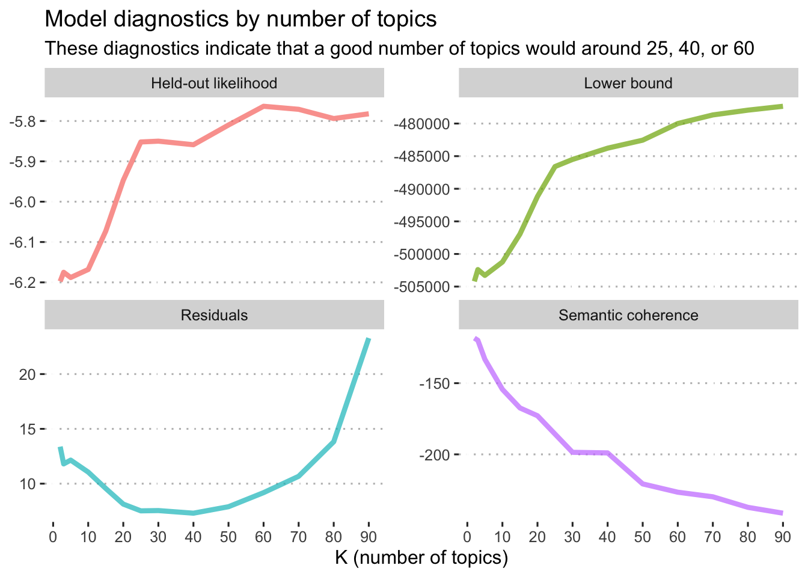
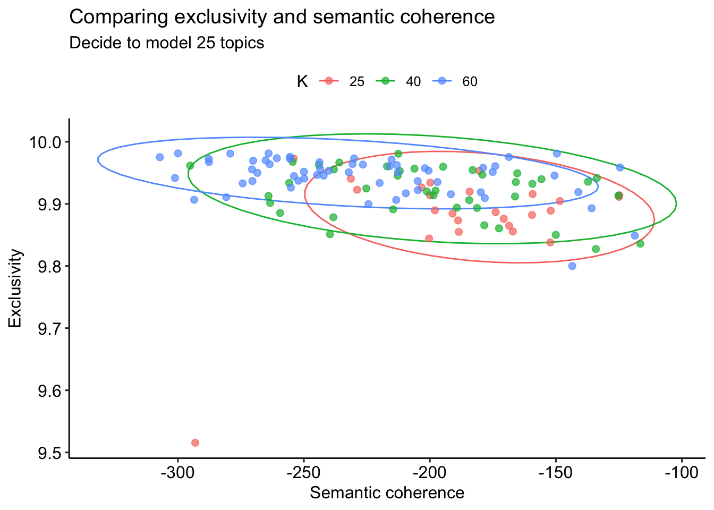
Most common topics
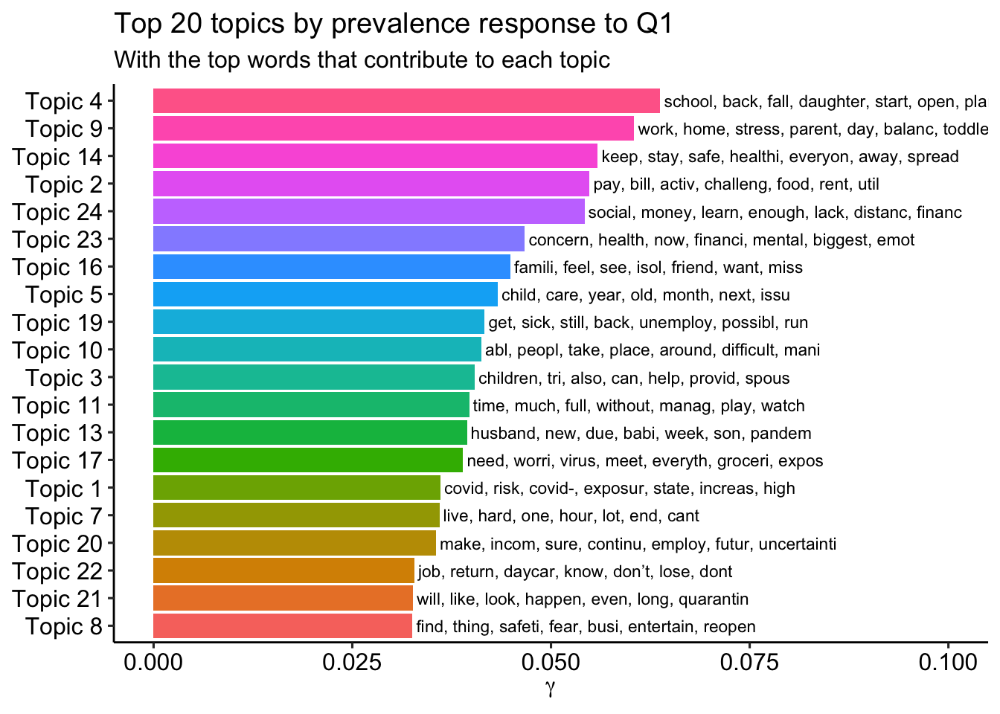
Identify topics
All topics
## Topic 1 Top Words:
## Highest Prob: covid, risk, covid-, exposur, state, increas, high
## FREX: risk, exposur, high, case, contract, level, societi
## Lift: asthmat, case, monday, skyrocket, weigh, high, risk
## Score: covid, risk, exposur, covid-, high, case, state
## Topic 2 Top Words:
## Highest Prob: pay, bill, activ, challeng, food, rent, util
## FREX: pay, bill, food, rent, util, cost, potti
## Lift: cloth, electr, extracurricular, fee, overcom, pantri, rentbil
## Score: pay, bill, food, rent, activ, util, challeng
## Topic 3 Top Words:
## Highest Prob: children, tri, also, can, help, provid, spous
## FREX: children, help, overwhelm, newborn, tri, avail, spous
## Lift: convinc, sit, switch, weird, hypertens, de-stress, overwhelm
## Score: children, tri, help, can, also, spous, provid
## Topic 4 Top Words:
## Highest Prob: school, back, fall, daughter, start, open, plan
## FREX: school, send, therapi, oldest, virtual, speech, fall
## Lift: august, debat, government, therapi, basement, classmat, conduct
## Score: school, fall, back, start, kindergarten, send, therapi
## Topic 5 Top Words:
## Highest Prob: child, care, year, old, month, next, issu
## FREX: old, child, older, year, next, wear, custodi
## Lift: six, whos, abroad, child, grandchildren, headstart, healthili
## Score: child, year, old, care, month, next, issu
## Topic 6 Top Words:
## Highest Prob: hous, develop, outsid, schedul, chang, unabl, insur
## FREX: hous, bore, crazi, exercis, outsid, develop, stir
## Lift: gain, neighborhood, playgroup, promot, recreat, stick, townhous
## Score: hous, develop, outsid, schedul, chang, car, crazi
## Topic 7 Top Words:
## Highest Prob: live, hard, one, hour, lot, end, cant
## FREX: save, cut, budget, credit, one, noth, realli
## Lift: -law, account, apt, deadlin, deposit, experienc, info
## Score: live, hour, hard, one, afford, save, realli
## Topic 8 Top Words:
## Highest Prob: find, thing, safeti, fear, busi, entertain, reopen
## FREX: thing, find, safeti, fear, saniti, infect, way
## Lift: econom, saniti, stubborn, tvscreen, thing, find, solut
## Score: find, thing, safeti, entertain, fear, busi, reopen
## Topic 9 Top Words:
## Highest Prob: work, home, stress, parent, day, balanc, toddler
## FREX: balanc, home, work, toddler, stress, full-tim, juggl
## Lift: housework, juggl, kitchen, precautionari, balanc, full-tim, ratio
## Score: work, home, balanc, stress, parent, day, toddler
## Topic 10 Top Words:
## Highest Prob: abl, peopl, take, place, around, difficult, mani
## FREX: peopl, place, precaut, park, serious, defiant, love
## Lift: presid, urgent, clingi, conspiraci, defiant, georg, grandpa
## Score: abl, peopl, place, take, around, park, public
## Topic 11 Top Words:
## Highest Prob: time, much, full, without, manag, play, watch
## FREX: time, full, togeth, spend, screen, manag, break
## Lift: argument, boyfriend, burnt, cabin, facilit, guilt, proceed
## Score: time, full, manag, much, togeth, play, spend
## Topic 12 Top Words:
## Highest Prob: que, los, salud, hijo, para, trabajo, con
## FREX: que, los, salud, hijo, para, trabajo, con
## Lift: actividad, adelant, cada, ciudad, como, desarrollo, deuda
## Score: que, los, hijo, para, salud, trabajo, poder
## Topic 13 Top Words:
## Highest Prob: husband, new, due, babi, week, son, pandem
## FREX: new, babi, expect, birth, current, soon, born
## Lift: born, broken, bunch, certif, engin, expect, icu
## Score: husband, new, babi, week, due, current, pandem
## Topic 14 Top Words:
## Highest Prob: keep, stay, safe, healthi, everyon, away, spread
## FREX: keep, stay, safe, healthi, everyon, happi, occupi
## Lift: dilig, everybodi, mile, sane, healthi, afloat, everyon
## Score: stay, healthi, keep, safe, everyon, happi, occupi
## Topic 15 Top Words:
## Highest Prob: normal, move, life, two, summer, anoth, routin
## FREX: move, life, summer, routin, space, apart, camp
## Lift: air, airbnb, bedtim, blanket, bounc, brought, camp
## Score: move, normal, summer, life, two, routin, anoth
## Topic 16 Top Words:
## Highest Prob: famili, feel, see, isol, friend, want, miss
## FREX: famili, see, friend, visit, member, grandpar, feel
## Lift: brand, edgi, famili, friend, germani, hug, judg
## Score: famili, see, isol, friend, feel, miss, visit
## Topic 17 Top Words:
## Highest Prob: need, worri, virus, meet, everyth, groceri, expos
## FREX: catch, appoint, worker, expos, essenti, everyth, countri
## Lift: audit, closur, idk, non, paper, placement, practition
## Score: worri, need, virus, groceri, expos, meet, essenti
## Topic 18 Top Words:
## Highest Prob: childcar, educ, support, anxieti, close, struggl, problem
## FREX: educ, depress, childcar, support, caus, independ, abil
## Lift: childcar, depress, educ, occur, pain, prn, appar
## Score: childcar, educ, support, anxieti, problem, close, struggl
## Topic 19 Top Words:
## Highest Prob: get, sick, still, back, unemploy, possibl, run
## FREX: sick, unemploy, get, boredom, still, stimulus, better
## Lift: claim, tooth, boredom, defer, disput, fals, lessen
## Score: get, sick, unemploy, back, still, receiv, possibl
## Topic 20 Top Words:
## Highest Prob: make, incom, sure, continu, employ, futur, uncertainti
## FREX: sure, employ, futur, make, maintain, incom, decreas
## Lift: adequ, disappear, drs, eas, employ, incom, jobless
## Score: make, incom, sure, futur, employ, uncertainti, continu
## Topic 21 Top Words:
## Highest Prob: will, like, look, happen, even, long, quarantin
## FREX: look, happen, situat, like, wave, will, affect
## Lift: american, pattern, prek, prolong, unclear, wave, happen
## Score: will, like, look, happen, even, long, situat
## Topic 22 Top Words:
## Highest Prob: job, return, daycar, know, don’t, lose, dont
## FREX: job, return, lose, secur, lost, don’t, know
## Lift: airlin, childcareschool, earner, research, return, secur, trade
## Score: job, return, know, daycar, lose, don’t, secur
## Topic 23 Top Words:
## Highest Prob: concern, health, now, financi, mental, biggest, emot
## FREX: health, financi, stabil, emot, mental, right, roof
## Lift: asd, cushion, bipolar, compet, deterior, finaci, financi
## Score: health, concern, financi, mental, now, biggest, right
## Topic 24 Top Words:
## Highest Prob: social, money, learn, enough, lack, distanc, financ
## FREX: social, lack, distanc, financ, interact, money, transport
## Lift: discord, earn, lack, materi, social, distanc, financ
## Score: social, money, distanc, lack, interact, learn, enough
## Topic 25 Top Words:
## Highest Prob: kid, just, sinc, come, anymor, hang, nobodi
## FREX: kid, just, anymor, come, sinc, applic, mobil
## Lift: applic, mobil, ninguna, anymor, kid, just, come
## Score: kid, just, sinc, come, anymor, hang, nobodi2 - Paying the bills
## Topic 2 Top Words:
## Highest Prob: pay, bill, activ, challeng, food, rent, util
## FREX: pay, bill, food, rent, util, cost, potti
## Lift: cloth, electr, extracurricular, fee, overcom, pantri, rentbil
## Score: pay, bill, food, rent, activ, util, challeng##
## Topic 2:
## Paying bills, clothing that fits
## Paying electric and water bill
## Paying my light bill
## Buying food and paying bills
## Paying rent and utilities3 - Juggling obligations
## Topic 3 Top Words:
## Highest Prob: children, tri, also, can, help, provid, spous
## FREX: children, help, overwhelm, newborn, tri, avail, spous
## Lift: convinc, sit, switch, weird, hypertens, de-stress, overwhelm
## Score: children, tri, help, can, also, spous, provid##
## Topic 3:
## Trying to convince my In laws that this is not a hoax and they should be safe. Also trying to convince my husband we shouldn’t see them if they are not being safe.
## Trying to work full-time and provide any sort of enriching learning environment for my children.
## Continuing to work at home and have our children here has been the biggest struggle. The inner conflict of neglecting my children because I have to be on a call or working and them not receiving the care they should be getting because I'm preoccupied with work (which wouldn't be a problem if they were at their schools).
##
## Our Montessori school is open and our children can attend during this time, but the concern of us (parents) strictly staying home and being quarantined, but then exposing our children to others does not sit well with me. If we open our doors to allowing our children to be exposed, they could possibly bring something back to our family unknowingly.
## We can not afford to pay rent. I was watching a couple children throughout the week to supplement income and I can no longer do that. I am a teacher, but the only one in our family with multiple degrees. My husband opted to work so I can stay home and homeschool our girls. I am also pregnant. I don’t know what we’re going to do. I also have concerns about my girls social-emotional development, especially at such a critical point not being able to be out in the environment with other children or people.
## Trying to help them while trying to help myself4 - Deciding what to do about school
## Topic 4 Top Words:
## Highest Prob: school, back, fall, daughter, start, open, plan
## FREX: school, send, therapi, oldest, virtual, speech, fall
## Lift: august, debat, government, therapi, basement, classmat, conduct
## Score: school, fall, back, start, kindergarten, send, therapi##
## Topic 4:
## Whether to send my daughter to school in the fall and/or whether school will be open
## Unknown about public school in the fall. Our daughter should begin Kindergarten.
## Anticipating whether or not to send her to school for in-person instruction this fall.
## School plans for the fall for my son entering kindergarten.
## Deciding what to do about school. Whether to go strictly online with our kindergartener.5 - Young children
## Topic 5 Top Words:
## Highest Prob: child, care, year, old, month, next, issu
## FREX: old, child, older, year, next, wear, custodi
## Lift: six, whos, abroad, child, grandchildren, headstart, healthili
## Score: child, year, old, care, month, next, issu##
## Topic 5:
## Teaching my 7 year old while taking care of my 2 year old.
## Having my 2 year old wear a mask, other people wearing a mask in public.
## Older child (3.5 years old) having anxiety and some toilet training issues/regression.
## General stir craziness. No time to take care of the things we would normally do when the older child is at pre-school.
## Other family being upset about having to wear a mask around my 2 month old child
## Keeping our three year old busy, how school will work next year for our three year old and ourselves; we are both educators9 - Balancing WFM with childcare
## Topic 9 Top Words:
## Highest Prob: work, home, stress, parent, day, balanc, toddler
## FREX: balanc, home, work, toddler, stress, full-tim, juggl
## Lift: housework, juggl, kitchen, precautionari, balanc, full-tim, ratio
## Score: work, home, balanc, stress, parent, day, toddler##
## Topic 9:
## Both parents work full time from home and have to simultaneously juggle working with parenting.
## Temporary work from home when there is an active toddler. It causes my husband stress on his work days
## Two parents working full-time and taking care of twin infants.
## Fatigue of parents (grandparents) that are watching my child. I work full-time from home, they are watching her full-time.
## How to balance work and caring for our very demanding infant10 - Public spaces and community disengagement
## Topic 10 Top Words:
## Highest Prob: abl, peopl, take, place, around, difficult, mani
## FREX: peopl, place, precaut, park, serious, defiant, love
## Lift: presid, urgent, clingi, conspiraci, defiant, georg, grandpa
## Score: abl, peopl, place, take, around, park, public##
## Topic 10:
## Not being able to go to the park, public pool, or able to take the kids out in general.
## Not being able to take my kids to public places like parks and playgrounds
## People masking up and taking NJs restrictions seriously.
## Our state and local leadership regarding COVID is sorely lacking. Our state is seeing a big increase in cases and many people seem to think we are past the pandemic and are not taking safety precautions. I don’t trust the way our community is handling this crisis.
##
## Not being able to go on playdates with friends or just be out in public. My child is a social butterfly and thrives on contact with people. Without that, she becomes whiny, clingy, and grumpy. I also benefit from having mom friends, but that hasn't happened either since the pandemic.11 - Too much time together
## Topic 11 Top Words:
## Highest Prob: time, much, full, without, manag, play, watch
## FREX: time, full, togeth, spend, screen, manag, break
## Lift: argument, boyfriend, burnt, cabin, facilit, guilt, proceed
## Score: time, full, manag, much, togeth, play, spend##
## Topic 11:
## Agreeing on how we spend our time (alone time ha time together as a couple) and equal division of household duties
## Too much together time leads to tension & arguments.
## Finding enough time in the day to fit in schooling via internet, basic household chores (cooking, laundry, cleaning), and spending time playing with our kids.
## Too much time spent together with too much stress
## Trying to work full time at home and taking care of my child at the same time. Trying very hard not to let him watch too much tv or play too many video games based on typical pediatric standards.12 - Emotional and financial fear (Sp)
## Topic 12 Top Words:
## Highest Prob: que, los, salud, hijo, para, trabajo, con
## FREX: que, los, salud, hijo, para, trabajo, con
## Lift: actividad, adelant, cada, ciudad, como, desarrollo, deuda
## Score: que, los, hijo, para, salud, trabajo, poder##
## Topic 12:
## La situación financiera porque no hay ingresos desde el mes de Marzo. La situación emocional de los niños por estar encerrados casi todo el tiempo solo empezaron a salir hace un mes una vez por semana. El miedo al desalojo por falta de pago. Y las deudas que quedan por no pagar.
## Mi esposo estuvo sin trabajo desde marzo 13 y regreso have 2 semanas. Nos mantuvimos con mi sueldo, pero yo no trabajo duramte el verano porque trabajo en una escuela. Ahora ya no recibo sueldo y el acaba de empezar, nos gastanos buena parte de los ahorros porque solo con mi sueldo no alcanzamos a pagar todos los servicios
## Antes de que pasara esto del covid 19 mi hijo de 3 años tenía cita en la escuela para aber si lo aceptaban para el año 2020-2021 como niño de necesidades especiales. Esto a puesto en pausa todo y me preocupa todo lo que está pasando ya que mi hijo tiene problemas del corazón.
## Queria que empesara el kinder y esta todo cerrado. Yo perdi mi trabajo grasias a la pandemia tengo 3 meses sin trabajo. Tambien me preocupa que mi hijo se comporta agresivo por que no quiero sacarlo afuera a jugar pues temo k pueda infectarse afuera
## Mi mayor preocupación ahora es el regreso ala escuela tengo mucho miedo que uno que niños se enfermen. Mucho más a mi hijo de 3 años que tuvo cirugía de corazón abierto y tiene condición de corazón.14 - Managing family safety and sanity
## Topic 14 Top Words:
## Highest Prob: keep, stay, safe, healthi, everyon, away, spread
## FREX: keep, stay, safe, healthi, everyon, happi, occupi
## Lift: dilig, everybodi, mile, sane, healthi, afloat, everyon
## Score: stay, healthi, keep, safe, everyon, happi, occupi##
## Topic 14:
## Keeping everyone happy, healthy and enriched.
## Keeping everyone safe and happy
## Keeping morale up and keeping everyone home to stay safe.
## Keeping everyone healthy and safe
## Staying safe while staying sane16 - Unable to visit family
## Topic 16 Top Words:
## Highest Prob: famili, feel, see, isol, friend, want, miss
## FREX: famili, see, friend, visit, member, grandpar, feel
## Lift: brand, edgi, famili, friend, germani, hug, judg
## Score: famili, see, isol, friend, feel, miss, visit##
## Topic 16:
## Traveling out of state to see our families. We are a military family and the unknown about when it is safe to see our extended family creates uncomfortable conversations with them. Some extended family members do not take the virus seriously and are judging our concerns for traveling in the future.
## Our family lives to travel, visit family, and go to the playground and Disney. My daughters are saying they are sad missing family and ask to go to the park to play and try to see other children on the few occasions that they are out.
## Unable to visit family & friends... general feeling of isolation from those outside our family
## When all of this will be “over” we haven’t been seeing family or friends and we are running out of things to pass the time. We all miss seeing extended family and it is difficult to explain the odd nuance to our children.
## We are dealing with the loss of a few family members. Mourning and grieving19 - Trouble receiving unemployment
## Topic 19 Top Words:
## Highest Prob: get, sick, still, back, unemploy, possibl, run
## FREX: sick, unemploy, get, boredom, still, stimulus, better
## Lift: claim, tooth, boredom, defer, disput, fals, lessen
## Score: get, sick, unemploy, back, still, receiv, possibl##
## Topic 19:
## Getting my husband’s unemployment check. Still haven’t received it.
## Receiving unemployment has been a nightmare. Still waiting.
## worried about if my husband gets called back to work and we have no childcare possibilities. also, i'm very concerned about when federal expanded unemployment benefits will run out.
## Trying to get my spouses unemployment. Filed 3/20 and haven't received a dime yet
## The children aren't getting any social time. I don't k ow why we havent recieved our stimulus check yet.21 - Fear about the unknown
## Topic 21 Top Words:
## Highest Prob: will, like, look, happen, even, long, quarantin
## FREX: look, happen, situat, like, wave, will, affect
## Lift: american, pattern, prek, prolong, unclear, wave, happen
## Score: will, like, look, happen, even, long, situat##
## Topic 21:
## My son has started to have some anxiety or fears and it’s troubling to me. For example, he was afraid of the bubbler at the pool where we have started swim lessons again. He cried during lessons and talked about the bubbler on and off for the next four days, even waking up in the morning talking about it. It’s hard to predict what he will be afraid of, and how long it will bother him
## What the fall will look like. Both myself and my husband work for a school
## District. What will school look like? What will daycare look like? What will be safe?
## I’m concerned that the USA will never be the same. It seems like fascism is winning while our country is sick with the pandemic and hurting from racial tensions caused by unforgivable police violence.
## What will happen in September,if it will be a second wave of virus who will take care of my son while I am going to school or studying
## Our housing problem started before covid but it definitely boiled into a whole bigger issue once this virus hit and even though I have extensive proof of everything that happened, no one, not the city I live in, not the court system in our city, council members in this area, I mean no one seems to care of this slumlord violates every right a tenant is supposed to have. I had eviction court last week and I wasn't even allowed in because i "had a fever of 102" yet i got home and took my temp three times on 2 different thermometers and I was under 98.6. So I literally wasn't allowed to defend myself, they refused to take or even look at any of our evidence, and they told us we had 30 days and were going to have another court date and then a magistrate made a ruling for my slumlord the next morning. I cannot even find a new place willing to work with us because people assume eviction makes me the trash in this situation but the truth is I almost lost my life in this property and my children have been hurt and even almost seriously hurt as well but this city doesn't seem to care. Not knowing if you'll be homeless while covid is still going around us literally terrifying and I can't believe we got our lives together and came so far to get totally screwed by some garbage person who values a meager amount of money over a family of 4 and their lives and mental and emotional health and I really can't believe no one seems to care either way.23 - Health and financial stability
## Topic 23 Top Words:
## Highest Prob: concern, health, now, financi, mental, biggest, emot
## FREX: health, financi, stabil, emot, mental, right, roof
## Lift: asd, cushion, bipolar, compet, deterior, finaci, financi
## Score: health, concern, financi, mental, now, biggest, right##
## Topic 23:
## Finacial Stability, Mental Health, and Emotional Health.
## Parents’ mental health, kids’ mental health
## Financial instability, mother/grandma who is our biggest support is in poor health and her healthcare is expensive, I have poor mental health and my child’s father has substance abuse issues and does not provide financial or child care support.
## The biggest challenges are all mental for me right now. My family as a whole is doing well.
## Financial, Mental and physical health24 - Distance from others
## Topic 24 Top Words:
## Highest Prob: social, money, learn, enough, lack, distanc, financ
## FREX: social, lack, distanc, financ, interact, money, transport
## Lift: discord, earn, lack, materi, social, distanc, financ
## Score: social, money, distanc, lack, interact, learn, enough##
## Topic 24:
## Learning, social/emotional disconnection from friends/family by practicing social distancing
## Dealing with social isolation and lack of social interaction
## Socialization skills for my child while social distancing
## Money and Access to learning materials
## Bickering. Desire for more structure + social interaction.
## Isolation, lack of substance in less than meaningful distance learning
## Lack of social interactions and social supports
## No money . Laundry backing up no laundry money. Senior wait to graduate kids birthday no money25 - Managing kids’ behvaior
## Topic 25 Top Words:
## Highest Prob: kid, just, sinc, come, anymor, hang, nobodi
## FREX: kid, just, anymor, come, sinc, applic, mobil
## Lift: applic, mobil, ninguna, anymor, kid, just, come
## Score: kid, just, sinc, come, anymor, hang, nobodi##
## Topic 25:
## Being unable to get the older child to his OT and other therapies, the uncertainty of what we’re going to do for kindergarten for the older kid and for daycare for the younger kid in the coming months. Very concerned about socialization for kids w them not being able to hang out w other kids their own or similar ages. Concerned about tenants we have being unable to pay rent which means it’s much harder for us to pay our bills.
## I can’t work from home so I have had to put my kids in someone’s backyard daycare. Nobody wants that for their kids. My kids want school with ECE teachers
## Just keeping my kids in a routine and allowing them to be kids.
## Trying to keep kids busy and manage behavior since they cannot go anywhere.
## Just trying to keep the children, ages 2 & 8, occupied and having fun & learning. Also, finding someone to babysit my kids so I can just go to the grocery store.Topics by demographic
Black/African American
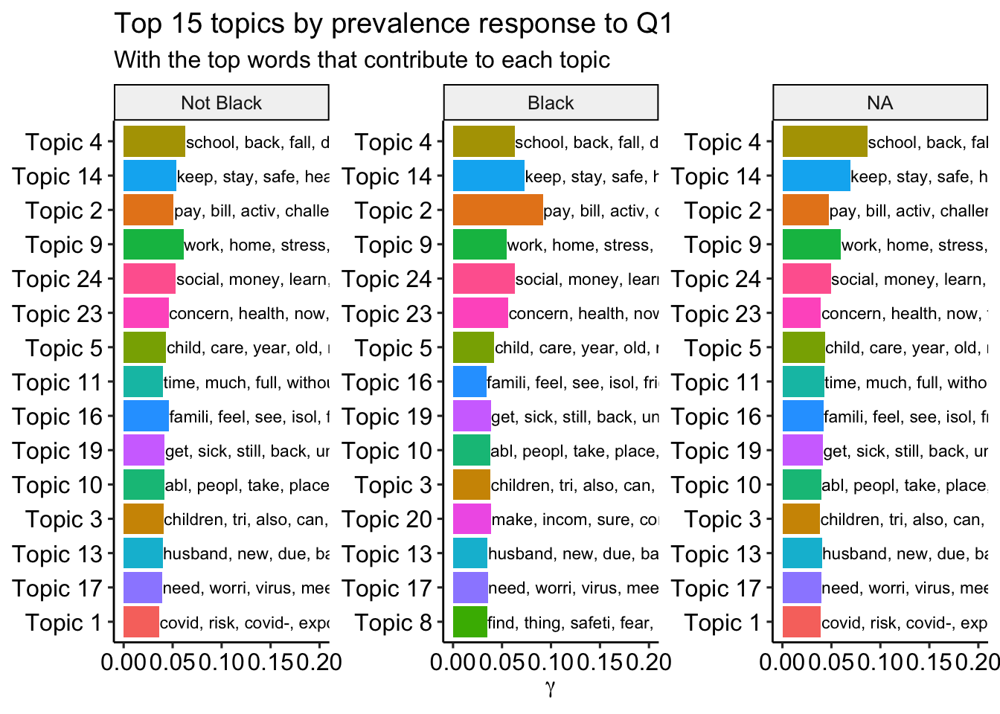
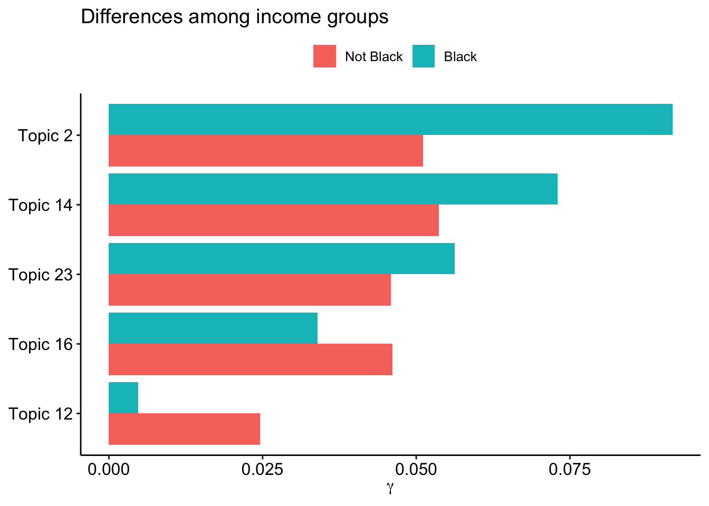
Poverty

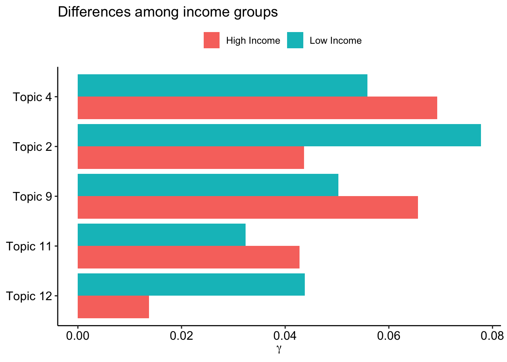
Topics by week
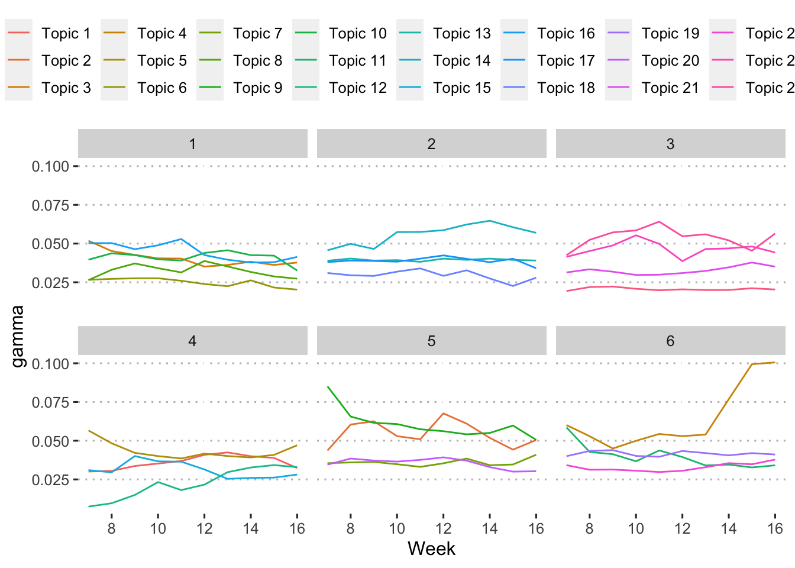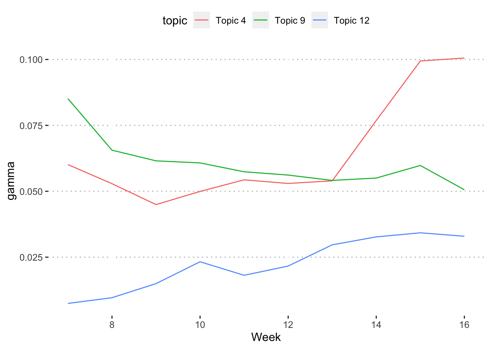
Topic clusters
Topic structure
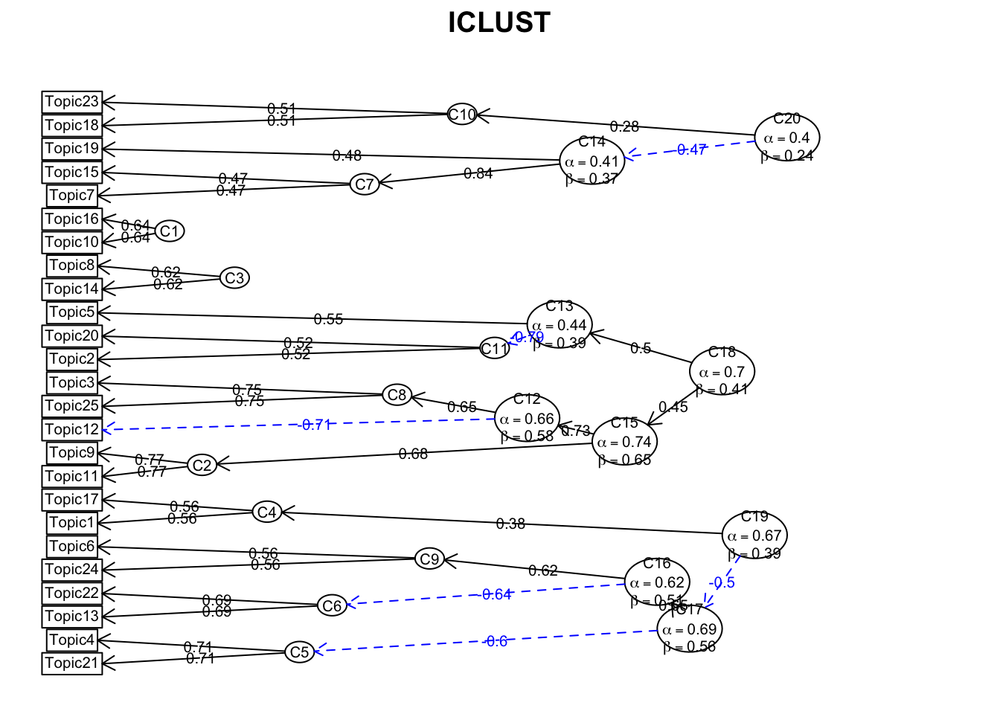
## ICLUST (Item Cluster Analysis)
## Call: iclust(r.mat = topics_only_wide)
##
## Purified Alpha:
## C19 C18 C3 C1 C20
## 0.67 0.70 0.56 0.58 0.40
##
## G6* reliability:
## C19 C18 C3 C1 C20
## 0.79 0.71 1.00 1.00 0.19
##
## Original Beta:
## C19 C18 C3 C1 C20
## 0.39 0.41 0.56 0.58 0.24
##
## Cluster size:
## C19 C18 C3 C1 C20
## 8 8 2 2 5
##
## Item by Cluster Structure matrix:
## O P C19 C18 C3 C1 C20
## Topic1 C19 C19 0.49 -0.04 0.07 0.16 -0.06
## Topic10 C1 C1 -0.07 0.04 -0.05 0.84 -0.10
## Topic11 C18 C18 -0.17 0.69 -0.14 0.01 -0.13
## Topic12 C18 C18 -0.16 -0.44 -0.16 -0.19 0.08
## Topic13 C19 C19 0.58 0.07 -0.14 -0.09 -0.20
## Topic14 C3 C3 -0.24 -0.05 0.83 -0.02 0.10
## Topic15 C20 C20 0.08 0.23 -0.07 0.12 -0.60
## Topic16 C1 C1 -0.16 0.11 -0.01 0.84 0.02
## Topic17 C19 C19 0.43 -0.04 0.05 0.10 -0.09
## Topic18 C20 C20 0.10 0.21 -0.15 -0.12 0.50
## Topic19 C20 C20 0.18 0.01 -0.03 -0.11 -0.54
## Topic2 C18 C18 -0.37 -0.47 0.05 -0.16 -0.01
## Topic20 C18 C18 -0.05 -0.44 0.09 -0.15 0.13
## Topic21 C19 C19 0.66 -0.04 -0.25 -0.08 -0.05
## Topic22 C19 C19 0.65 0.01 -0.10 -0.24 -0.10
## Topic23 C20 C20 -0.09 -0.22 -0.04 -0.01 0.54
## Topic24 C19 C19 -0.64 -0.07 -0.01 0.13 0.23
## Topic25 C18 C18 -0.26 0.58 0.35 0.16 -0.21
## Topic3 C18 C18 -0.14 0.73 0.12 -0.03 -0.06
## Topic4 C19 C19 0.44 0.05 -0.24 -0.21 0.13
## Topic5 C18 C18 -0.03 0.46 -0.24 -0.05 0.09
## Topic6 C19 C19 -0.53 0.12 -0.04 0.12 -0.09
## Topic7 C20 C20 0.06 0.06 -0.23 -0.01 -0.53
## Topic8 C3 C3 0.03 0.02 0.83 -0.05 -0.02
## Topic9 C18 C18 0.01 0.72 -0.17 -0.19 -0.01
##
## With eigenvalues of:
## C19 C18 C3 C1 C20
## 2.9 2.9 1.9 1.7 1.7
##
## Purified scale intercorrelations
## reliabilities on diagonal
## correlations corrected for attenuation above diagonal:
## C19 C18 C3 C1 C20
## C19 0.67 -0.01 -0.21 -0.22 -0.22
## C18 -0.01 0.70 -0.02 0.14 -0.22
## C3 -0.13 -0.01 0.56 -0.07 0.11
## C1 -0.14 0.09 -0.04 0.58 -0.10
## C20 -0.11 -0.12 0.05 -0.05 0.40
##
## Cluster fit = 0.48 Pattern fit = 0.87 RMSR = 0.09Topic structure (Black respondants only)
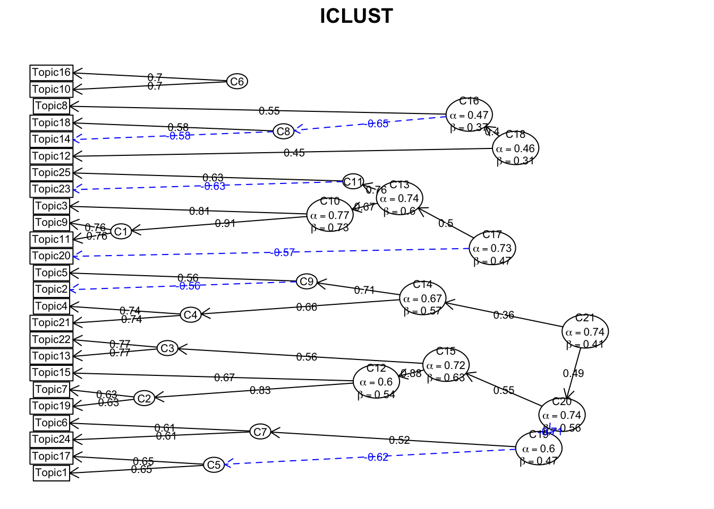
## ICLUST (Item Cluster Analysis)
## Call: iclust(r.mat = topics_only_wide)
##
## Purified Alpha:
## C21 C17 C18 C6
## 0.76 0.73 0.53 0.66
##
## G6* reliability:
## C21 C17 C18 C6
## 0.85 0.74 0.54 1.00
##
## Original Beta:
## C21 C17 C18 C6
## 0.41 0.47 0.31 0.66
##
## Cluster size:
## C21 C17 C18 C6
## 12 6 5 2
##
## Item by Cluster Structure matrix:
## O P C21 C17 C18 C6
## Topic1 C21 C21 0.52 -0.05 0.07 0.19
## Topic10 C6 C6 0.04 0.03 -0.01 0.86
## Topic11 C17 C17 0.00 0.75 -0.23 0.11
## Topic12 C18 C18 -0.14 -0.14 0.51 -0.09
## Topic13 C21 C21 0.71 0.04 -0.22 -0.02
## Topic14 C18 C18 -0.32 -0.01 0.71 -0.05
## Topic15 C21 C21 0.47 0.26 -0.04 0.20
## Topic16 C6 C6 -0.01 0.14 0.01 0.86
## Topic17 C21 C21 0.48 -0.04 0.06 0.14
## Topic18 C18 C18 0.15 0.09 -0.58 -0.11
## Topic19 C21 C21 0.49 0.04 -0.04 -0.06
## Topic2 C21 C21 -0.56 -0.36 0.22 -0.25
## Topic20 C17 C17 -0.08 -0.51 0.10 -0.16
## Topic21 C21 C21 0.63 -0.10 -0.28 -0.05
## Topic22 C21 C21 0.71 0.02 -0.24 -0.19
## Topic23 C17 C17 -0.14 -0.56 -0.10 -0.01
## Topic24 C21 C21 -0.62 -0.20 -0.05 0.11
## Topic25 C17 C17 0.01 0.63 0.25 0.27
## Topic3 C17 C17 0.06 0.73 -0.19 0.00
## Topic4 C21 C21 0.34 -0.05 -0.30 -0.20
## Topic5 C21 C18 0.04 0.25 -0.61 -0.06
## Topic6 C21 C21 -0.43 0.08 -0.10 0.12
## Topic7 C21 C21 0.37 0.14 -0.17 0.06
## Topic8 C18 C18 0.08 0.04 0.53 -0.03
## Topic9 C17 C17 0.16 0.73 -0.41 -0.14
##
## With eigenvalues of:
## C21 C17 C18 C6
## 3.6 2.9 2.3 1.9
##
## Purified scale intercorrelations
## reliabilities on diagonal
## correlations corrected for attenuation above diagonal:
## C21 C17 C18 C6
## C21 0.76 0.16 -0.31 0.02
## C17 0.12 0.73 -0.24 0.15
## C18 -0.20 -0.15 0.53 0.00
## C6 0.01 0.10 0.00 0.66
##
## Cluster fit = 0.52 Pattern fit = 0.88 RMSR = 0.1Cluster 1
##
## Topic 17:
## Worrying about escalating police violence and fascism in our country
## I’m concerned about exposure. Recently my youngest child had a scheduled doctor appointment and our local children’s hospital didn’t bother to call to inform me the appointment had been rescheduled so I unnecessarily exposed myself and my baby to all kinds of germs.
## Worry about the fact that im an essential worker that inmay bring this crap home to my kid
## I am still concerned about exposing my patients to the virus as my husband and I are essential workers and our daughter attends daycare. Also having a difficult time getting clinical placement as a nurse practitioner student due to Covid-19. If I can not get clinical placement, that delays graduation and therefore prevents me from finding a job as a nurse practitioner.
## Politics. To elaborate-Getting that SOB out of office. I’m more on the republican side but he’s a liar and a bully. That’s not what I want for our country. As much as I hate to say this, we should’ve been just like China and shut it all down for however long it took to eradicate the virus if possible.
## Topic 1:
## Concerned about rising rate of positive covid tests in our state.
## The numbers of positive cases in various states going up
## Rising cases of covid in our state
## As my state moves into Phase 3 of the risk of covid will increase
## The number of COVID cases in Arizona continues to rise to record highs. We have continued to quarantine but we feel less safe than ever.
## Topic 6:
## Staying in the house is driving the children insane. Prior to COVID-19 we were always outside and now they are bored in the house.
## Applying for CHIP, not knowing whether we're eligible, being uninsured in the meantime. Since everyone's at home in my neighborhood and it's spring, there's a lot of loose, aggressive dogs that are not good with children. I do not feel comfortable letting my kids play in our yard for fear of getting bitten or mauled. (Not insured, too, remember?) We are essentially prisoners in our own house.
## Just maintaining mental health as well as physical health. I have gained weight since the pandemic and I’m too afraid to go outside and walk and get exercise due to being scared getting catching the virus!!! Also my baby is tired of being cooped up and I live in a townhouse wit barely any yard so she is kinda tired of that scenery and wants to get out but my fears won’t allow it
## money and housing and transportation and dental insurance finding a dentist who accepts our badger care insurance
## Creating a learning environment at home. Creating and sticking to a well rounded schedule that includes learning, creativity and excitement.
## Topic 24:
## Learning, social/emotional disconnection from friends/family by practicing social distancing
## Dealing with social isolation and lack of social interaction
## Socialization skills for my child while social distancing
## Money and Access to learning materials
## Bickering. Desire for more structure + social interaction.
## Topic 22:
## I lost my job, don’t know if I’ll be able to find another job with similar pay in the rural town I live in.
## I am out of work. I lost my job. I lost my income. I am losing my mind.
## I don’t know when I will have to return to work. Our daycare shutdown and I don’t know when she will be able to reopen (she has a medically fragile child)
## I finished my PhD and have no job lined up. My husbands is furloughed and receiving unemployment benefits but we know the expanded benefits have an expiration date and beginning July he will no longer have health insurance through his job. If I don’t find a decent paying position we will have a huge reduction in income.
## My job security. The uncertainty of when my job will return after COVID
## Topic 13:
## I'm the survivor of domestic violence, and my 16 month old son and I left my husband before the pandemic began. We've been in a very messy divorce, with my ex's family, himself, and his lawyer being very awful throughout. I'm very worried about my son's safety wuth my ex and his family (during this pandemic, but also afterward).
## Our house partially flooded this week and now we have less space and less emotional security in home and a newborn baby set to arrive this week. Birth might in involve a hospital which are concerning at this time.
## Expecting a new baby during a viral pandemic.
## Cases spiking as I’m approaching my due date and not excited to have to go to hospital to deliver baby next week
## My husband is our sole provider and he needs a surgery soon. Him being out of work for a couple weeks and paying for the surgery is concerning.
## Topic 4:
## Whether to send my daughter to school in the fall and/or whether school will be open
## Unknown about public school in the fall. Our daughter should begin Kindergarten.
## Anticipating whether or not to send her to school for in-person instruction this fall.
## School plans for the fall for my son entering kindergarten.
## Deciding what to do about school. Whether to go strictly online with our kindergartener.
## Topic 21:
## My son has started to have some anxiety or fears and it’s troubling to me. For example, he was afraid of the bubbler at the pool where we have started swim lessons again. He cried during lessons and talked about the bubbler on and off for the next four days, even waking up in the morning talking about it. It’s hard to predict what he will be afraid of, and how long it will bother him
## What the fall will look like. Both myself and my husband work for a school
## District. What will school look like? What will daycare look like? What will be safe?
## I’m concerned that the USA will never be the same. It seems like fascism is winning while our country is sick with the pandemic and hurting from racial tensions caused by unforgivable police violence.
## What will happen in September,if it will be a second wave of virus who will take care of my son while I am going to school or studying
## Our housing problem started before covid but it definitely boiled into a whole bigger issue once this virus hit and even though I have extensive proof of everything that happened, no one, not the city I live in, not the court system in our city, council members in this area, I mean no one seems to care of this slumlord violates every right a tenant is supposed to have. I had eviction court last week and I wasn't even allowed in because i "had a fever of 102" yet i got home and took my temp three times on 2 different thermometers and I was under 98.6. So I literally wasn't allowed to defend myself, they refused to take or even look at any of our evidence, and they told us we had 30 days and were going to have another court date and then a magistrate made a ruling for my slumlord the next morning. I cannot even find a new place willing to work with us because people assume eviction makes me the trash in this situation but the truth is I almost lost my life in this property and my children have been hurt and even almost seriously hurt as well but this city doesn't seem to care. Not knowing if you'll be homeless while covid is still going around us literally terrifying and I can't believe we got our lives together and came so far to get totally screwed by some garbage person who values a meager amount of money over a family of 4 and their lives and mental and emotional health and I really can't believe no one seems to care either way.Cluster 2
##
## Topic 5:
## Teaching my 7 year old while taking care of my 2 year old.
## Having my 2 year old wear a mask, other people wearing a mask in public.
## Older child (3.5 years old) having anxiety and some toilet training issues/regression.
## General stir craziness. No time to take care of the things we would normally do when the older child is at pre-school.
## Other family being upset about having to wear a mask around my 2 month old child
## Keeping our three year old busy, how school will work next year for our three year old and ourselves; we are both educators
## Topic 20:
## Making sure we have adequate income to sustain ourselves
## The unknown, decreased salary, unsteady future of employment
## Making sure we are happy, healthy and have a steady source of income
## Making sure we treat each other with love and respect.
## My employment (self employed wedding planner) trying to conceive With fertility issues but access to drs Are slim during this time.
## Topic 2:
## Paying bills, clothing that fits
## Paying electric and water bill
## Paying my light bill
## Buying food and paying bills
## Paying rent and utilities
## Topic 3:
## Trying to convince my In laws that this is not a hoax and they should be safe. Also trying to convince my husband we shouldn’t see them if they are not being safe.
## Trying to work full-time and provide any sort of enriching learning environment for my children.
## Continuing to work at home and have our children here has been the biggest struggle. The inner conflict of neglecting my children because I have to be on a call or working and them not receiving the care they should be getting because I'm preoccupied with work (which wouldn't be a problem if they were at their schools).
##
## Our Montessori school is open and our children can attend during this time, but the concern of us (parents) strictly staying home and being quarantined, but then exposing our children to others does not sit well with me. If we open our doors to allowing our children to be exposed, they could possibly bring something back to our family unknowingly.
## We can not afford to pay rent. I was watching a couple children throughout the week to supplement income and I can no longer do that. I am a teacher, but the only one in our family with multiple degrees. My husband opted to work so I can stay home and homeschool our girls. I am also pregnant. I don’t know what we’re going to do. I also have concerns about my girls social-emotional development, especially at such a critical point not being able to be out in the environment with other children or people.
## Trying to help them while trying to help myself
## Topic 25:
## Being unable to get the older child to his OT and other therapies, the uncertainty of what we’re going to do for kindergarten for the older kid and for daycare for the younger kid in the coming months. Very concerned about socialization for kids w them not being able to hang out w other kids their own or similar ages. Concerned about tenants we have being unable to pay rent which means it’s much harder for us to pay our bills.
## I can’t work from home so I have had to put my kids in someone’s backyard daycare. Nobody wants that for their kids. My kids want school with ECE teachers
## Just keeping my kids in a routine and allowing them to be kids.
## Trying to keep kids busy and manage behavior since they cannot go anywhere.
## Just trying to keep the children, ages 2 & 8, occupied and having fun & learning. Also, finding someone to babysit my kids so I can just go to the grocery store.
## Topic 12:
## La situación financiera porque no hay ingresos desde el mes de Marzo. La situación emocional de los niños por estar encerrados casi todo el tiempo solo empezaron a salir hace un mes una vez por semana. El miedo al desalojo por falta de pago. Y las deudas que quedan por no pagar.
## Mi esposo estuvo sin trabajo desde marzo 13 y regreso have 2 semanas. Nos mantuvimos con mi sueldo, pero yo no trabajo duramte el verano porque trabajo en una escuela. Ahora ya no recibo sueldo y el acaba de empezar, nos gastanos buena parte de los ahorros porque solo con mi sueldo no alcanzamos a pagar todos los servicios
## Antes de que pasara esto del covid 19 mi hijo de 3 años tenía cita en la escuela para aber si lo aceptaban para el año 2020-2021 como niño de necesidades especiales. Esto a puesto en pausa todo y me preocupa todo lo que está pasando ya que mi hijo tiene problemas del corazón.
## Queria que empesara el kinder y esta todo cerrado. Yo perdi mi trabajo grasias a la pandemia tengo 3 meses sin trabajo. Tambien me preocupa que mi hijo se comporta agresivo por que no quiero sacarlo afuera a jugar pues temo k pueda infectarse afuera
## Mi mayor preocupación ahora es el regreso ala escuela tengo mucho miedo que uno que niños se enfermen. Mucho más a mi hijo de 3 años que tuvo cirugía de corazón abierto y tiene condición de corazón.
## Topic 9:
## Both parents work full time from home and have to simultaneously juggle working with parenting.
## Temporary work from home when there is an active toddler. It causes my husband stress on his work days
## Two parents working full-time and taking care of twin infants.
## Fatigue of parents (grandparents) that are watching my child. I work full-time from home, they are watching her full-time.
## How to balance work and caring for our very demanding infant
## Topic 11:
## Agreeing on how we spend our time (alone time ha time together as a couple) and equal division of household duties
## Too much together time leads to tension & arguments.
## Finding enough time in the day to fit in schooling via internet, basic household chores (cooking, laundry, cleaning), and spending time playing with our kids.
## Too much time spent together with too much stress
## Trying to work full time at home and taking care of my child at the same time. Trying very hard not to let him watch too much tv or play too many video games based on typical pediatric standards.Cluster 3
##
## Topic 23:
## Finacial Stability, Mental Health, and Emotional Health.
## Parents’ mental health, kids’ mental health
## Financial instability, mother/grandma who is our biggest support is in poor health and her healthcare is expensive, I have poor mental health and my child’s father has substance abuse issues and does not provide financial or child care support.
## The biggest challenges are all mental for me right now. My family as a whole is doing well.
## Financial, Mental and physical health
## Topic 18:
## Education. I suffer from adhd and have had to put my own education on hold. My adhd and my eldests suspected autism has made distance education extraordinarily difficult.
## I am trying to work from home as a 1099 independent contractor doing telepractice speech therapy. I am working 7 days per week to see half my caseload, and half of the sessions that do occur are rescheduled 2 or 3 times. This is very distressful to my daughter, who turns 3 this week. My husband is still working outside the home. On Saturday, I gave in and asked my mother-in-law to help with childcare for 3 days a week, despite our county in our state still being under a stay-at-home order. I needed to preserve my and my daughter's mental health. Unfortunately, this is somewhat risky because my husband works in healthcare.
## I just need a break. When I chose marriage and kids over my career, I did so without the idea of living in isolation. Not being able to physically see and connect with my peers has a huge impact on my mental health, which in turn negatively affects my ability to balance parenting, educating, housekeeping and all of the other domestic shit that feels thankless and endless. I've watched the business that I've worked so hard for disintegrate overnight. It's tough to cope with the fact that my life's investment in myself feels like a waste right now because I'm stuck in a 1950's life that I'd be just as capable of living without 11 years of college education and tens of thousands of dollars spent on a business that was supposed to be my balance to ask if the domestic shit I committed to. Now I'm just a fucking housewife.
## Childcare. I’m scheduled to start a new job next month, a faculty position. I only have a babysitter 3 days per week. My mother-in-law isn’t available 5 days per week. The college plans to open in-person and my department has said it’s “all hands on deck” due to smaller class sizes and needed to give students personalized attention. I’m going to need to be on campus a lot. I’m hoping my grandparents will watch my daughter two days per week, as they did pre-covid, but at the same time it feels super risky due to their age and health histories and me being around groups of people
## On campus.
## Our financial problems have increased which is putting a HUGE strain on our marriage. We are stressed and angry and taking it out on each other. His stress is causing him to be depressed and in turn he is drinking WAY more which is causing problems between us as well.
## Topic 19:
## Getting my husband’s unemployment check. Still haven’t received it.
## Receiving unemployment has been a nightmare. Still waiting.
## worried about if my husband gets called back to work and we have no childcare possibilities. also, i'm very concerned about when federal expanded unemployment benefits will run out.
## Trying to get my spouses unemployment. Filed 3/20 and haven't received a dime yet
## The children aren't getting any social time. I don't k ow why we havent recieved our stimulus check yet.
## Topic 15:
## Helping my child move forward with his IEP goals, especially the social/emotional and speech.
##
## Trying to explain to him what’s going on since he knows about the looting and rioting in the twin cities area and we are close to it.
##
## Trying to figure out if we think it’s a good idea for my hubby’s job to be reopening.
##
## Coping with our child finally going through the “no” phase. It’s developmentally important but making things really hard on us right now.
##
## We’re on edge. I totally panicked last night when I noticed a vehicle creeping up slowly, shining a flashlight on the laundromat across the street and into the dark and bushy areas surrounding it. It took several minutes, but eventually it pulled away and I saw it was a Sheriff’s vehicle. A few days back I heard lots of honking and wondered if it was rioters. It turned out being a graduation celebration, but took about 10 minutes for me to figure that out and it was alarming. That’s twice this week I’ve found myself trying to peek out my window without being in front of my window because I didn’t know if it was safe.
## Finding a safe and affordable location away from looting, rioting, fireworks, gunshots, protests, homelessness epidemic, failed schools, overpriced housing and failed public institutions/government. All of these negative trends have been significantly accelerated by the Covid crisis. Urban centers are now VERY dangerous and VERY unhealthy places for people especially people with kids. It is very clear that our child has been traumatized by a combination of being forced inside by the pandemic while watching protesters and rioters from the window. He has a sound sensitivity and the gunshots and fireworks are pretty constant after dark.
##
## Where to go though is the million $ question. I have lived in the DC city core for 20+ years so it is very daunting to have to plan to evacuate your home you have loved for such a long time especially during a pandemic. I wish I were joking or exaggerating. I am not. Even a good bit of the food supply chain continues to break down on a weekly basis. It is insane. Instead of fixing these issues, our mayor is running for Vice President and our city council has proposed raising taxes???????
## Well, we just found out Saturday that or landlord has notified the homeowners across the street that they will be tearing down our building to build a 300-unit apartment complex here instead. There was no date on the postcard saying when construction would begin, but we can't afford anywhere else it looks like and the idea of moving with a newborn is daunting.
## We had been looking forward to our vacation. We had been offered by friends (whom we work with and share a bubble with) to join them at a house on the beach in Outerbanks with their family. We had been monitoring the situation of COVID cases as they rise for the past several weeks with alarm. This was to be a very special and rare vacation for us and we’ve been watching it slip away. It had been a bright spot for us to look forward too. We even asked our family doctor what his professional opinion was and he concluded that as long as we were smart we would probably be fine. And even though the county we would be visiting has had a total of only 16 cases this entire time, we were put into an ultimatum. Two weeks before we were to leave, NYS put together a list of states that residents were banned from traveling to unless they quarantined. Added to that if we were to get sick afterward we could be fined up to $10,000 and no paid sick time. This was confirmed my our employer (my husband and I work for the same place) we could take our week vacation but would need to take the two week Mandatory quarantine without pay. That would mean we would lose two paychecks just for a week of leisure. The remote possibility that we could jeopardize the financial safety of our family through fines and no paychecks, petrified us. We chose to back out. Two of the most stressful and hard parts of this process have been the complexity of feelings that come from being forced into a situation. We were taking so many precautions to do this correctly, but that didn’t matter, the state had layed out their blanket rules. I never knew I would have to make a decision this heavy over a vacation! The second hardest part is dealing with the social repercussions, which not aLot of people talk about now. We didn’t know how this would affect our friendship. They are still trying to figure out a way to go... they have the right to make their own decisions, but we didn’t know if they would resen
## The fact there there is looting and rioting in our city, we had to choose between staying in quarantine or leaving and going to somewhere safer. We left to go to my parents (kids grandparents) because of the riots.
## Topic 7:
## This month we really felt the budget crunch. Have been feuding kids rather than myself. Obviously when I’m hungry it’s more likely to be a bad day for everyone as I am tired cranky and less patient. While
## My husbands makes a good paycheck we have had a hard time meeting minimum payments and we already maxed out on our credit card early on in the pandemic April/May ish
## Watching coworkers lose funded positions, anticipated pay cuts, my property taxes already have doubled, I don’t know if I will be able to afford my student loan payment.
## Credit card debt due to years of living paycheck to paycheck and student loan debt of $90k.
## Marital conflict. This has been really hard on our already shakey marriage
## Lack of housing. We couldn't find a place to rent because lack of a job, but then my husband got a job but no rentals available in the price range we could afford. Plus the money we had saved for a deposit, was used for living expenses while not working.Doublet 1
##
## Topic 16:
## Traveling out of state to see our families. We are a military family and the unknown about when it is safe to see our extended family creates uncomfortable conversations with them. Some extended family members do not take the virus seriously and are judging our concerns for traveling in the future.
## Our family lives to travel, visit family, and go to the playground and Disney. My daughters are saying they are sad missing family and ask to go to the park to play and try to see other children on the few occasions that they are out.
## Unable to visit family & friends... general feeling of isolation from those outside our family
## When all of this will be “over” we haven’t been seeing family or friends and we are running out of things to pass the time. We all miss seeing extended family and it is difficult to explain the odd nuance to our children.
## We are dealing with the loss of a few family members. Mourning and grieving
## Topic 10:
## Not being able to go to the park, public pool, or able to take the kids out in general.
## Not being able to take my kids to public places like parks and playgrounds
## People masking up and taking NJs restrictions seriously.
## Our state and local leadership regarding COVID is sorely lacking. Our state is seeing a big increase in cases and many people seem to think we are past the pandemic and are not taking safety precautions. I don’t trust the way our community is handling this crisis.
##
## Not being able to go on playdates with friends or just be out in public. My child is a social butterfly and thrives on contact with people. Without that, she becomes whiny, clingy, and grumpy. I also benefit from having mom friends, but that hasn't happened either since the pandemic.Doublet 2
##
## Topic 8:
## Social emotional health; determining who and what to follow when various leaders call for different things; finding ways to pass the time meaningfully
## Finding ways to entertain the children, that are not TV/screens
## Find things that can entertain us better than electronic devices
## Finding ways to entertain our kids without using screen time. Finding ways to save money to survive until we find a new job. Finding ways to help our oldest handle this situation better and help with her anxiety
## Finding things to do to keep entertained
## Topic 14:
## Keeping everyone happy, healthy and enriched.
## Keeping everyone safe and happy
## Keeping morale up and keeping everyone home to stay safe.
## Keeping everyone healthy and safe
## Staying safe while staying saneQuestion 2
What is helping you and your family the most right now?
How many topics?
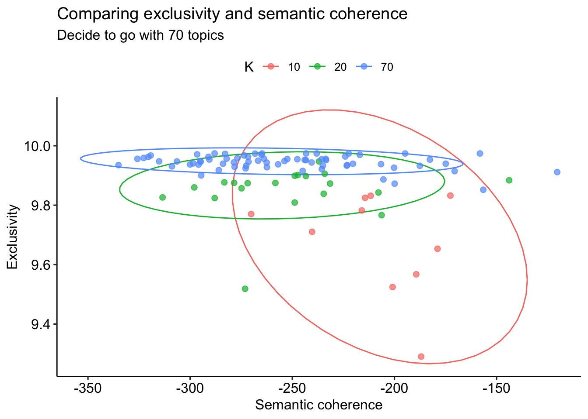

Most common topics
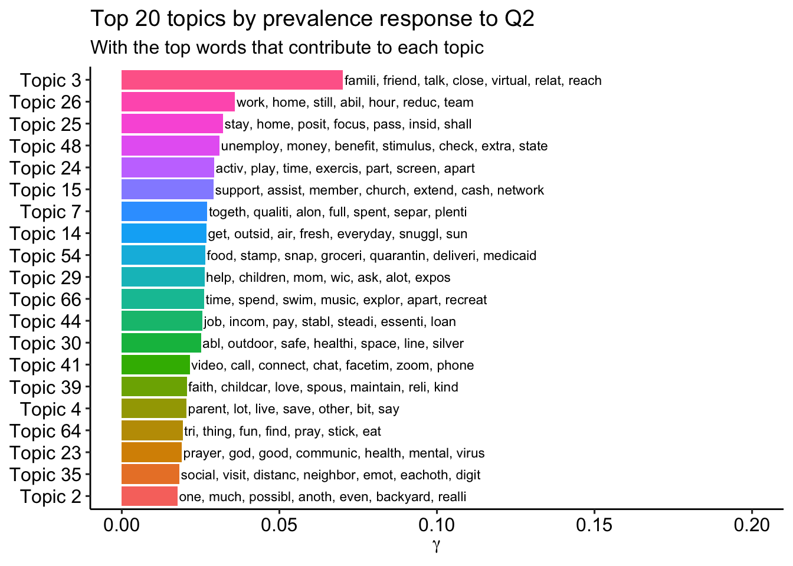
Identify topics
All topics
## Topic 1 Top Words:
## Highest Prob: husband, govern, got, dad, share, per, tanf
## FREX: husband, govern, got, hrs, share, solid, dad
## Lift: hrs, husband, promot, hustl, solid, rent-fre, dad
## Score: husband, govern, dad, got, per, share, tanf
## Topic 2 Top Words:
## Highest Prob: one, much, possibl, anoth, even, backyard, realli
## FREX: one, much, possibl, anoth, jesus, christ, backyard
## Lift: compass, jesus, anoth, christ, condition, one, possibl
## Score: one, much, anoth, possibl, even, backyard, realli
## Topic 3 Top Words:
## Highest Prob: famili, friend, talk, close, virtual, relat, reach
## FREX: friend, famili, talk, close, facetimezoom, relat, determin
## Lift: friend, determin, facetimezoom, famili, talk, relat, close
## Score: famili, friend, talk, close, virtual, relat, reach
## Topic 4 Top Words:
## Highest Prob: parent, lot, live, save, other, bit, say
## FREX: parent, other, save, lot, account, noon, live
## Lift: account, noon, other, parent, enorm, hire, save
## Score: parent, lot, live, save, other, bit, account
## Topic 5 Top Words:
## Highest Prob: normal, return, life, earli, covid-, fear, somewhat
## FREX: normal, return, life, earli, covid-, fear, major
## Lift: knew, signific, tunnel, covid-, earli, fear, intervent
## Score: normal, return, life, earli, familiar, covid-, fear
## Topic 6 Top Words:
## Highest Prob: need, worri, think, sure, don’t, everyon, temporari
## FREX: need, inform, problem, think, lean, necessari, everyon
## Lift: figur, lean, absolut, hurt, inform, mayb, problem
## Score: need, worri, sure, think, don’t, everyon, temporari
## Topic 7 Top Words:
## Highest Prob: togeth, qualiti, alon, full, spent, separ, plenti
## FREX: togeth, qualiti, full, alon, separ, spent, plenti
## Lift: full, togeth, qualiti, alon, separ, plenti, advantag
## Score: togeth, qualiti, alon, full, separ, spent, plenti
## Topic 8 Top Words:
## Highest Prob: stress, way, isol, honest, relax, bring, manag
## FREX: stress, isol, honest, relax, bring, manag, way
## Lift: booster, bring, isol, relax, bought, honest, manag
## Score: stress, way, honest, relax, isol, bring, manag
## Topic 9 Top Words:
## Highest Prob: kid, grandpar, yard, babi, system, creativ, expens
## FREX: grandpar, kid, yard, stuff, florida, creativ, system
## Lift: florida, condo, grandpar, juggl, stuff, yard, kid
## Score: kid, grandpar, yard, babi, system, creativ, expens
## Topic 10 Top Words:
## Highest Prob: internet, access, youtub, sibl, tablet, high, children
## FREX: internet, access, youtub, various, chanc, laughter, tablet
## Lift: chanc, laughter, access, cream, experi, ice, internet
## Score: internet, access, youtub, sibl, tablet, cream, ice
## Topic 11 Top Words:
## Highest Prob: weather, nice, final, warm, play, mean, warmer
## FREX: weather, nice, final, warm, warmer, nicer, playtim
## Lift: final, minnesota, nicer, playtim, warm, weather, nice
## Score: weather, nice, warm, final, warmer, nicer, mean
## Topic 12 Top Words:
## Highest Prob: walk, natur, ride, bike, neighborhood, cook, disney
## FREX: walk, natur, bike, neighborhood, disney, netflix, ride
## Lift: bath, bike, block, chirch, disney, mentor, natur
## Score: walk, bike, ride, natur, neighborhood, disney, netflix
## Topic 13 Top Words:
## Highest Prob: fact, new, secur, without, side, huge, remain
## FREX: secur, without, side, remain, lose, new, found
## Lift: reciev, side, found, jobincom, lose, neither, remain
## Score: fact, new, secur, side, without, lose, remain
## Topic 14 Top Words:
## Highest Prob: get, outsid, air, fresh, everyday, snuggl, sun
## FREX: get, fresh, outsid, air, snuggl, everyday, reset
## Lift: get, snuggl, fresh, outsid, air, everyday, reset
## Score: outsid, get, fresh, air, everyday, snuggl, reset
## Topic 15 Top Words:
## Highest Prob: support, assist, member, church, extend, cash, network
## FREX: support, member, assist, extend, cash, church, network
## Lift: extend, member, support, cash, assist, church, network
## Score: support, member, assist, church, extend, cash, network
## Topic 16 Top Words:
## Highest Prob: give, break, counsel, medic, let, therapist, strong
## FREX: break, counsel, strong, give, alway, marriag, therapist
## Lift: seek, antidepress, break, co-par, counsel, marijuana, marit
## Score: break, counsel, give, medic, therapist, let, strong
## Topic 17 Top Words:
## Highest Prob: now, pandem, right, well, month, ebt, that
## FREX: ebt, right, well, now, gas, equip, what
## Lift: equip, file, vehicl, what, aliv, power, ebt
## Score: now, right, pandem, month, well, ebt, gas
## Topic 18 Top Words:
## Highest Prob: school, free, resourc, program, lunch, provid, offer
## FREX: school, free, resourc, lunch, breakfast, offer, program
## Lift: out, school, sent, breakfast, breakfastlunch, chalk, disinfect
## Score: free, school, resourc, lunch, program, offer, hand
## Topic 19 Top Words:
## Highest Prob: watch, learn, news, moment, turn, toddler, breath
## FREX: watch, news, turn, breath, moment, learn, deep
## Lift: anyon, farm, stimul, turn, watch, adequ, breath
## Score: watch, news, learn, moment, turn, breath, toddler
## Topic 20 Top Words:
## Highest Prob: back, daycar, daughter, preschool, send, teach, older
## FREX: back, daughter, send, older, daycar, doesn’t, negat
## Lift: daughter, doesn’t, impact, negat, older, pod, send
## Score: back, daycar, daughter, send, preschool, teach, older
## Topic 21 Top Words:
## Highest Prob: hous, around, daili, consist, dinner, date, car
## FREX: around, daili, consist, bed, accomplish, hous, occas
## Lift: bed, consist, corner, daili, main, occas, occur
## Score: hous, around, daili, dinner, date, consist, car
## Topic 22 Top Words:
## Highest Prob: know, dont, afford, household, basic, creat, necess
## FREX: know, dont, afford, creat, necess, fund, household
## Lift: reserv, afford, allot, creat, dont, fund, know
## Score: know, dont, afford, emerg, fund, necess, basic
## Topic 23 Top Words:
## Highest Prob: prayer, god, good, communic, health, mental, virus
## FREX: prayer, god, good, grace, switch, health, vibe
## Lift: switch, vibe, god, grace, prayer, knowledg, walkabl
## Score: prayer, god, good, communic, health, mental, virus
## Topic 24 Top Words:
## Highest Prob: activ, play, time, exercis, part, screen, apart
## FREX: activ, play, screen, exercis, part, time, wood
## Lift: screen, activ, part, exercis, play, time, apart
## Score: play, activ, time, exercis, screen, part, apart
## Topic 25 Top Words:
## Highest Prob: stay, home, posit, focus, pass, insid, shall
## FREX: stay, posit, home, focus, outlook, pass, shall
## Lift: posit, stay, outlook, focus, shall, pass, attitud
## Score: stay, home, posit, focus, pass, shall, attitud
## Topic 26 Top Words:
## Highest Prob: work, home, still, abil, hour, reduc, team
## FREX: work, abil, still, home, nobodi, fiancé, hour
## Lift: fiancé, abil, nobodi, work, team, still, hour
## Score: work, home, still, abil, hour, team, nobodi
## Topic 27 Top Words:
## Highest Prob: televis, toy, energi, errand, lack, salud, ayuda
## FREX: televis, toy, energi, errand, lack, programa, salud
## Lift: energi, errand, programa, televis, toy, lack, nino
## Score: televis, toy, energi, salud, errand, con, ayuda
## Topic 28 Top Words:
## Highest Prob: game, like, night, movi, etc, read, set
## FREX: game, movi, indoor, board, bake, wifi, night
## Lift: bake, boat, brain, concert, cours, game, geocach
## Score: game, like, movi, night, board, etc, read
## Topic 29 Top Words:
## Highest Prob: help, children, mom, wic, ask, alot, expos
## FREX: mom, help, children, grant, expos, wic, alot
## Lift: grant, psycholog, mom, expos, help, alot, children
## Score: help, mom, children, wic, expos, ask, alot
## Topic 30 Top Words:
## Highest Prob: abl, outdoor, safe, healthi, space, line, silver
## FREX: abl, outdoor, safe, silver, healthi, space, line
## Lift: silver, abl, outdoor, healthi, safe, space, line
## Score: abl, outdoor, safe, healthi, space, silver, line
## Topic 31 Top Words:
## Highest Prob: keep, routin, situat, best, covid, everyth, control
## FREX: routin, gratitud, mindset, best, situat, keep, establish
## Lift: establish, gratitud, ill, mindset, routin, uncertain, updat
## Score: keep, routin, situat, best, covid, everyth, control
## Topic 32 Top Words:
## Highest Prob: take, day, calm, instead, futur, worri, tell
## FREX: take, calm, instead, mile, day, sunni, tell
## Lift: take, agreement, calm, instead, mile, sunni, forest
## Score: take, day, calm, instead, mile, futur, worri
## Topic 33 Top Words:
## Highest Prob: enjoy, summer, sinc, teacher, remot, current, almost
## FREX: enjoy, summer, teacher, constant, current, sinc, remot
## Lift: autism, self-car, summer, summertim, worm, constant, enjoy
## Score: summer, enjoy, teacher, sinc, remot, current, constant
## Topic 34 Top Words:
## Highest Prob: come, nearbi, sometim, physic, protect, develop, belief
## FREX: nearbi, sometim, physic, protect, belief, fianc, come
## Lift: alcohol, compromis, excel, happier, imagin, mess, nearbi
## Score: come, nearbi, sometim, protect, physic, belief, develop
## Topic 35 Top Words:
## Highest Prob: social, visit, distanc, neighbor, emot, eachoth, digit
## FREX: distanc, eachoth, visit, social, digit, neighbor, driveway
## Lift: driveway, eachoth, digit, neighbour, distanc, neighbor, visit
## Score: social, distanc, visit, neighbor, emot, eachoth, digit
## Topic 36 Top Words:
## Highest Prob: see, small, use, hike, mask, interact, distract
## FREX: small, see, hike, distract, circl, use, interact
## Lift: bounc, celebr, circl, gather, see, small, hike
## Score: see, small, hike, use, mask, interact, wear
## Topic 37 Top Words:
## Highest Prob: week, son, local, last, made, happi, ’ve
## FREX: happi, week, went, cost, local, commut, sitter
## Lift: happi, part-tim, aba, cost, grandmoth, immens, luckili
## Score: week, son, local, last, happi, cost, ’ve
## Topic 38 Top Words:
## Highest Prob: care, child, open, provid, avail, reopen, self
## FREX: care, reopen, open, child, reliabl, avail, began
## Lift: began, begun, care, reopen, teamwork, reliabl, open
## Score: care, child, open, provid, reopen, avail, self
## Topic 39 Top Words:
## Highest Prob: faith, childcar, love, spous, maintain, reli, kind
## FREX: faith, childcar, love, spous, reli, haha, courtesi
## Lift: childcar, faith, haha, love, spous, courtesi, reli
## Score: faith, childcar, love, spous, reli, maintain, kind
## Topic 40 Top Words:
## Highest Prob: feel, look, grate, forward, vacat, someth, fortun
## FREX: look, grate, forward, balanc, convers, feel, quiet
## Lift: balanc, afternoon, asleep, bright, compar, grate, look
## Score: feel, look, forward, grate, vacat, someth, balanc
## Topic 41 Top Words:
## Highest Prob: video, call, connect, chat, facetim, zoom, phone
## FREX: video, chat, via, touch, connect, text, call
## Lift: afar, messag, platform, chat, touch, via, email
## Score: video, call, chat, connect, facetim, phone, zoom
## Topic 42 Top Words:
## Highest Prob: make, everi, two, coupl, buy, amaz, familyfriend
## FREX: make, everi, coupl, amaz, familyfriend, lord, draw
## Lift: abc, coupl, draw, effort, everi, lord, make
## Score: make, everi, two, coupl, buy, paper, familyfriend
## Topic 43 Top Words:
## Highest Prob: con, manten, que, una, nada, dio, buena
## FREX: manten, buena, relación, nada, una, marido, dio
## Lift: buena, cuidarno, durant, ingreso, manten, marido, necesario
## Score: manten, relación, buena, con, una, que, dio
## Topic 44 Top Words:
## Highest Prob: job, incom, pay, stabl, steadi, essenti, loan
## FREX: incom, steadi, loan, job, credit, paus, stabl
## Lift: consid, credit, defer, guardian, hazard, incom, info
## Score: job, incom, pay, steadi, essenti, stabl, loan
## Topic 45 Top Words:
## Highest Prob: can, littl, noth, chang, done, ’re, thought
## FREX: can, noth, thought, littl, done, boy, wake
## Lift: boy, count, can, hardship, noth, role, thought
## Score: can, noth, littl, chang, done, ’re, thought
## Topic 46 Top Words:
## Highest Prob: onlin, therapi, year, group, old, servic, educ
## FREX: therapi, servic, telehealth, onlin, appoint, amazon, homeschool
## Lift: servic, telehealth, amazon, depart, development, dpss, homeschool
## Score: onlin, therapi, old, servic, year, group, educ
## Topic 47 Top Words:
## Highest Prob: rent, unsur, wonder, late, countri, disabl, depend
## FREX: unsur, wonder, countri, depend, temporarili, reloc, rent
## Lift: grandfath, reloc, cheap, councilor, countri, dad’, depend
## Score: rent, unsur, wonder, countri, depend, late, disabl
## Topic 48 Top Words:
## Highest Prob: unemploy, money, benefit, stimulus, check, extra, state
## FREX: unemploy, money, benefit, stimulus, check, extra, feder
## Lift: benefit, benifit, chequ, extra, money, rescu, stimulus
## Score: unemploy, benefit, stimulus, check, money, extra, feder
## Topic 49 Top Words:
## Highest Prob: peopl, place, less, precaut, store, follow, guidelin
## FREX: less, precaut, store, safeti, measur, peopl, awesom
## Lift: aurora, brent, less, precaut, properti, protocol, push
## Score: peopl, place, less, follow, precaut, store, safeti
## Topic 50 Top Words:
## Highest Prob: flexibl, schedul, employ, allow, continu, away, understand
## FREX: flexibl, employ, schedul, boss, arrang, continu, allow
## Lift: boss, compassion, employ, flexibl, ppp, twin, workplac
## Score: flexibl, employ, schedul, continu, allow, away, compani
## Topic 51 Top Words:
## Highest Prob: plan, communic, understand, patienc, hard, futur, practic
## FREX: plan, patienc, outing, closer, hard, unit, aunt
## Lift: fight, brought, commit, discuss, express, leader, matur
## Score: plan, patienc, communic, understand, hard, closer, outing
## Topic 52 Top Words:
## Highest Prob: financi, -law, sunshin, stabil, travel, enough, struggl
## FREX: financi, -law, stabil, travel, biggest, lucki, p-ebt
## Lift: travel, biggest, buoy, extens, financi, lifestyl, loos
## Score: financi, stabil, -law, travel, sunshin, struggl, bless
## Topic 53 Top Words:
## Highest Prob: leav, paid, matern, sick, cut, babi, esposo
## FREX: paid, matern, leav, patern, estabilidad, cut, sick
## Lift: estabilidad, empleo, matern, paid, patern, polici, wish
## Score: leav, paid, matern, esposo, estabilidad, sick, labor
## Topic 54 Top Words:
## Highest Prob: food, stamp, snap, groceri, quarantin, deliveri, medicaid
## FREX: food, stamp, snap, bank, medicaid, pantri, quarantin
## Lift: cal, food, snap, stamp, anywher, bank, edison
## Score: food, stamp, snap, pantri, bank, medicaid, deliveri
## Topic 55 Top Words:
## Highest Prob: pool, contact, entertain, occasion, risk, option, cant
## FREX: contact, option, pool, entertain, remind, risk, exposur
## Lift: contact, option, stream, decid, facil, remind, exposur
## Score: pool, contact, entertain, risk, occasion, option, low
## Topic 56 Top Words:
## Highest Prob: listen, nuestro, podcast, positivo, ser, nuestra, trabajo
## FREX: podcast, positivo, listen, nuestro, christian, perdimo, ahorrar
## Lift: christian, perdimo, podcast, positivo, ahorrar, servicio, positiva
## Score: nuestro, listen, positivo, perdimo, podcast, ser, nuestra
## Topic 57 Top Words:
## Highest Prob: estar, unido, junto, que, familia, nuestra, estamo
## FREX: estar, unido, junto, como, mantenerno, familia, nuestra
## Lift: estar, apoyan, decision, dialogar, unido, como, otro
## Score: estar, unido, junto, que, nuestra, familia, nos
## Topic 58 Top Words:
## Highest Prob: que, apoyo, nos, mutuo, por, mucho, amor
## FREX: mutuo, apoyo, amor, emocion, gent, mucho, nos
## Lift: mutuo, amor, emocion, gent, sino, tenemo, necesidad
## Score: que, apoyo, mutuo, gent, nos, emocion, mucho
## Topic 59 Top Words:
## Highest Prob: will, hope, communiti, end, meet, bond, better
## FREX: hope, communiti, meet, bond, will, bibl, within
## Lift: bibl, scriptur, within, bond, communiti, hope, meet
## Score: hope, will, communiti, end, soon, meet, bond
## Topic 60 Top Words:
## Highest Prob: park, technolog, public, next, trip, near, beach
## FREX: park, technolog, trip, door, cabin, short, humor
## Lift: arboretum, lake, postiv, privat, skype, street, trip
## Score: park, technolog, public, next, trip, beach, near
## Topic 61 Top Words:
## Highest Prob: que, tener, para, dio, los, comida, casa
## FREX: comunicacion, tener, comida, dio, para, acceso, confianza
## Lift: estampilla, pasará, pensar, tien, abuelo, acceso, comunicacion
## Score: que, tener, para, dio, los, comida, niño
## Topic 62 Top Words:
## Highest Prob: salir, orar, tiempo, familia, con, jugar, ver
## FREX: tiempo, jugar, libr, orar, salir, pasar, ver
## Lift: ayudan, cocinar, libr, pasar, paseo, relajars, tiempo
## Score: salir, tiempo, jugar, orar, libr, junto, familia
## Topic 63 Top Words:
## Highest Prob: mother, law, partner, sister, camp, weekend, father
## FREX: mother, law, partner, sister, camp, babysitt, grandma
## Lift: babysitt, grandma, law, partner, pbs, sister, trade
## Score: mother, law, partner, camp, sister, babysit, babysitt
## Topic 64 Top Words:
## Highest Prob: tri, thing, fun, find, pray, stick, eat
## FREX: tri, fun, pray, laugh, thing, find, memori
## Lift: empathi, tri, uniti, fun, pray, laugh, memori
## Score: tri, thing, fun, find, pray, stick, eat
## Topic 65 Top Words:
## Highest Prob: just, great, person, immedi, trust, patient, optimist
## FREX: just, great, trust, optimist, religion, word, person
## Lift: great, just, matter, optimist, pair, rigid, valu
## Score: just, great, person, immedi, trust, optimist, religion
## Topic 66 Top Words:
## Highest Prob: time, spend, swim, music, explor, apart, recreat
## FREX: spend, explor, swim, time, recreat, destress, frugal
## Lift: destress, frugal, pizza, spend, workschool, explor, recreat
## Score: time, spend, swim, music, explor, recreat, apart
## Topic 67 Top Words:
## Highest Prob: receiv, insur, move, nanni, husband’, sourc, econom
## FREX: receiv, nanni, husband’, sourc, mortgag, salari, box
## Lift: afloat, leas, second, shoulder, wage, wave, box
## Score: receiv, insur, nanni, move, husband’, mortgag, salari
## Topic 68 Top Words:
## Highest Prob: project, art, garden, craft, distant, structur, meal
## FREX: project, art, garden, craft, distant, structur, similar
## Lift: art, build, distant, parti, similar, structur, truck
## Score: project, art, craft, garden, structur, distant, similar
## Topic 69 Top Words:
## Highest Prob: busi, start, keep, regular, electron, clean, weve
## FREX: busi, regular, electron, clean, occupi, cope, start
## Lift: devic, excit, kids’, treatment, built, busi, clean
## Score: busi, start, keep, regular, electron, clean, occupi
## Topic 70 Top Words:
## Highest Prob: also, stabl, part, help, children, famili, home
## FREX: also, collect, classmat, direct, boost, pitch, three
## Lift: also, stabl, part, help, children, famili, activ
## Score: also, stabl, part, help, children, famili, home1 - My husband’s responsibilities
## Topic 1 Top Words:
## Highest Prob: husband, govern, got, dad, share, per, tanf
## FREX: husband, govern, got, hrs, share, solid, dad
## Lift: hrs, husband, promot, hustl, solid, rent-fre, dad
## Score: husband, govern, dad, got, per, share, tanf##
## Topic 1:
## husband got a promotion with a salary bump (hence the move)
## Sharing more responsibilities. Having my husband around more.
## My husband and I are communicating about work schedules and sharing responsibility for the children is helpful.
## my husband and I are able to share the responsibility of childcare due to flexible work schedules.
## My husband got a job.3 - Friends and family (virtually)
## Topic 3 Top Words:
## Highest Prob: famili, friend, talk, close, virtual, relat, reach
## FREX: friend, famili, talk, close, facetimezoom, relat, determin
## Lift: friend, determin, facetimezoom, famili, talk, relat, close
## Score: famili, friend, talk, close, virtual, relat, reach##
## Topic 3:
## Reaching out virtually to family & friends
## Hanging in there, reach out to friend and family members on FaceTime
## Talking and supportive friends and family
## Talking with family and friends
## Talking to family and friends.7 - Quality time
## Topic 7 Top Words:
## Highest Prob: togeth, qualiti, alon, full, spent, separ, plenti
## FREX: togeth, qualiti, full, alon, separ, spent, plenti
## Lift: full, togeth, qualiti, alon, separ, plenti, advantag
## Score: togeth, qualiti, alon, full, separ, spent, plenti##
## Topic 7:
## Spending quality time together and reading and doing activities together
## Being able to spend "quality" time together, working in our yard/garden together.
## Having more quality time together.
## More quality time together.
## Quality time together11 - Warm weather
## Topic 11 Top Words:
## Highest Prob: weather, nice, final, warm, play, mean, warmer
## FREX: weather, nice, final, warm, warmer, nicer, playtim
## Lift: final, minnesota, nicer, playtim, warm, weather, nice
## Score: weather, nice, warm, final, warmer, nicer, mean##
## Topic 11:
## Warmer weather meaning more outdoor playtime
## The nicer weather and being able to be outside. We live in Minnesota and during March and April we were stuck inside more often.
## Disney +, games/puzzles and finally, warm weather for playing outside/water play!
## Internet and the weather being warm finally.
## Nice weather - playing outside14 - Going outside
## Topic 14 Top Words:
## Highest Prob: get, outsid, air, fresh, everyday, snuggl, sun
## FREX: get, fresh, outsid, air, snuggl, everyday, reset
## Lift: get, snuggl, fresh, outsid, air, everyday, reset
## Score: outsid, get, fresh, air, everyday, snuggl, reset##
## Topic 14:
## Having a backyard to go outside to get fresh air and reset
## Getting outside in the fresh air.
## Getting outside for fresh air
## Getting outside and enjoying the nice weather getting fresh air
## Lots of hugs and snuggles and trying to get outside for fresh air..15 - Extended family
## Topic 15 Top Words:
## Highest Prob: support, assist, member, church, extend, cash, network
## FREX: support, member, assist, extend, cash, church, network
## Lift: extend, member, support, cash, assist, church, network
## Score: support, member, assist, church, extend, cash, network##
## Topic 15:
## Support from other family members and friends
## Extended family support
## Extended family support
## Support from extended family
## Support of extended family18 - Free meals through school
## Topic 18 Top Words:
## Highest Prob: school, free, resourc, program, lunch, provid, offer
## FREX: school, free, resourc, lunch, breakfast, offer, program
## Lift: out, school, sent, breakfast, breakfastlunch, chalk, disinfect
## Score: free, school, resourc, lunch, program, offer, hand##
## Topic 18:
## Free lunch program, supplies provided by the school
## Free school lunch hand outs
## Free meals provided by the school district
## Free lunch/breakfast from school and free dinner from church on Wednesdays
## Free lunch and breakfast from school23 - Daily walks
## Topic 21 Top Words:
## Highest Prob: hous, around, daili, consist, dinner, date, car
## FREX: around, daili, consist, bed, accomplish, hous, occas
## Lift: bed, consist, corner, daili, main, occas, occur
## Score: hous, around, daili, dinner, date, consist, car##
## Topic 21:
## Accomplishing things around the house
## Daily walks around the block and seeing one more family for play dates.
## Time away from the house and getting out even if it's just to ride around in the car.
## Consistency- daily walks and rest
## God! He answers prayers and still makes miracles occur daily23 - Faith
## Topic 23 Top Words:
## Highest Prob: prayer, god, good, communic, health, mental, virus
## FREX: prayer, god, good, grace, switch, health, vibe
## Lift: switch, vibe, god, grace, prayer, knowledg, walkabl
## Score: prayer, god, good, communic, health, mental, virus##
## Topic 23:
## The knowledge that God loves us and hears our prayers and is looking out for us.
## Our belief in God and that he hears our prayers and loves and cares for us.
## Faith in God, hope in probable near-future career change, counseling & exercise to help with mental health, marital relationship
## Prayer faith in God
## Prayer and Faith in God.24 - Active play
## Topic 24 Top Words:
## Highest Prob: activ, play, time, exercis, part, screen, apart
## FREX: activ, play, screen, exercis, part, time, wood
## Lift: screen, activ, part, exercis, play, time, apart
## Score: play, activ, time, exercis, screen, part, apart##
## Topic 24:
## Time with grandparents, less screen time, Outside play, exercise
## Activities at home. Swimming, playing outside, ect.
## Exercise, meds, playing outside
## Trying to find new activities to do together. Spending time outside and playing.
## Exercise and activities25 - Staying positive and staying safe
## Topic 25 Top Words:
## Highest Prob: stay, home, posit, focus, pass, insid, shall
## FREX: stay, posit, home, focus, outlook, pass, shall
## Lift: posit, stay, outlook, focus, shall, pass, attitud
## Score: stay, home, posit, focus, pass, shall, attitud##
## Topic 25:
## Having a positive attitude that this too shall pass
## My attitude. I am staying positive.
## staying busy at home and being positive.
## Staying home and staying safe.
## staying home to stay safe26 - Able to work from home
## Topic 26 Top Words:
## Highest Prob: work, home, still, abil, hour, reduc, team
## FREX: work, abil, still, home, nobodi, fiancé, hour
## Lift: fiancé, abil, nobodi, work, team, still, hour
## Score: work, home, still, abil, hour, team, nobodi##
## Topic 26:
## Continuing to work from home and ability to work.
## My husband has not had his work hours reduced.
## Ability to work from home.
## The ability to work from home.
## The ability to work from home29 - Mom
## Topic 29 Top Words:
## Highest Prob: help, children, mom, wic, ask, alot, expos
## FREX: mom, help, children, grant, expos, wic, alot
## Lift: grant, psycholog, mom, expos, help, alot, children
## Score: help, mom, children, wic, expos, ask, alot##
## Topic 29:
## My mom and sister, helping the nest they can
## The financial help from grants and stimulus. We have a restaurant so not stressing about money helps.
## My mother has helped us a little bit financially which has helped a lot.
## My friends and family are helping us the most right now. My mother is helping me a little bit financially and my friends are helping to ease the stresses of single motherhood.
## My mom is helping us a lot44 - Deferring debt
## Topic 44 Top Words:
## Highest Prob: job, incom, pay, stabl, steadi, essenti, loan
## FREX: incom, steadi, loan, job, credit, paus, stabl
## Lift: consid, credit, defer, guardian, hazard, incom, info
## Score: job, incom, pay, steadi, essenti, stabl, loan##
## Topic 44:
## that I am an essential employee as a nurse and have not lost my income
## Being able to defer payments on student loans and credit cards.
## Being able to defer credit card and student loan payments.
## Being able to pause student loan and credit card payments.
## Being able to pause our credit card and student loan payments48 - Stimulus and unemployment checks
## Topic 48 Top Words:
## Highest Prob: unemploy, money, benefit, stimulus, check, extra, state
## FREX: unemploy, money, benefit, stimulus, check, extra, feder
## Lift: benefit, benifit, chequ, extra, money, rescu, stimulus
## Score: unemploy, benefit, stimulus, check, money, extra, feder##
## Topic 48:
## Extra money from unemployement
## Extra foodstamps
## The stimulus check and the extra money from unemployment.
## Unemployment checks- the additional $600 from federal government
## The unemployment benefits and stimulus money.
## stimulus check & unemployment checks54 - Access to food
## Topic 54 Top Words:
## Highest Prob: food, stamp, snap, groceri, quarantin, deliveri, medicaid
## FREX: food, stamp, snap, bank, medicaid, pantri, quarantin
## Lift: cal, food, snap, stamp, anywher, bank, edison
## Score: food, stamp, snap, pantri, bank, medicaid, deliveri##
## Topic 54:
## Food pantry donations (whenever I hear about them)
## Food pantries & diaper banks.
## Grocery drive pick up and food delivery
## Food stamps and Medicaid
## Food stamps and Medicaid.57 - Family unity (Sp)
## Topic 57 Top Words:
## Highest Prob: estar, unido, junto, que, familia, nuestra, estamo
## FREX: estar, unido, junto, como, mantenerno, familia, nuestra
## Lift: estar, apoyan, decision, dialogar, unido, como, otro
## Score: estar, unido, junto, que, nuestra, familia, nos##
## Topic 57:
## Algunas de las actividades familiares que podemos hacer juntos
## El ver qué a pesar de que son momentos dificiles nosotros estamos juntos.
## estamos siguiendo las reglas, estamos unidos y en cuanto a comida si nos han ayudado mucho
## Nuestra fe, nuestra familia y nuestros hermanos en fe nos han apoyado y no nos han dejado decaer. Estamos mas unidos que nunca y nos cuidamos.
## Mantenernos unidos y hacer actividades dentro de casa que nos mantengan distraídos.61 - Faith in God and food stamps (Sp)
## Topic 61 Top Words:
## Highest Prob: que, tener, para, dio, los, comida, casa
## FREX: comunicacion, tener, comida, dio, para, acceso, confianza
## Lift: estampilla, pasará, pensar, tien, abuelo, acceso, comunicacion
## Score: que, tener, para, dio, los, comida, niño##
## Topic 61:
## nos a ayudado mucho que aplicamis para estampillas de comida y para TANF con eso hemos podido mantenernos con las cuentas mas urgentes
## que mi esposo esta trabajando en casa y que el cuidado de los niños y la casa lo podemos hacer entre los dos
## Tener fe en Dios y pensar que Dios tiene el control y que no pasará nada que el no permita
## nos a ayudado mucho que nos dieron estampillas para comida,eso fue una bendicion por que ya no podiamos mas
## Nuestra fe y confianza en Dios. Si no fuera por eso y el apoyo de mis papas y mis hermanas no sabriamos que pasaria.64 - Finding fun things
## Topic 64 Top Words:
## Highest Prob: tri, thing, fun, find, pray, stick, eat
## FREX: tri, fun, pray, laugh, thing, find, memori
## Lift: empathi, tri, uniti, fun, pray, laugh, memori
## Score: tri, thing, fun, find, pray, stick, eat##
## Topic 64:
## Just trying to get by try to lessen things
## We take walks as a family. We talk about memories of fun things and plan for what fun things we can do once “this germ is gone”.
## Finding fun things to do together
## Finding fun things to do at home.
## Trying to find ways to have fun and keep calm66 - Spending time
## Topic 66 Top Words:
## Highest Prob: time, spend, swim, music, explor, apart, recreat
## FREX: spend, explor, swim, time, recreat, destress, frugal
## Lift: destress, frugal, pizza, spend, workschool, explor, recreat
## Score: time, spend, swim, music, explor, recreat, apart##
## Topic 66:
## Spending time outside in the woods.
## Being frugal with our spending
## Spending time with my parents and my niece
## Spend time t
## Spending time togeterTopics by demographic
Black/African American
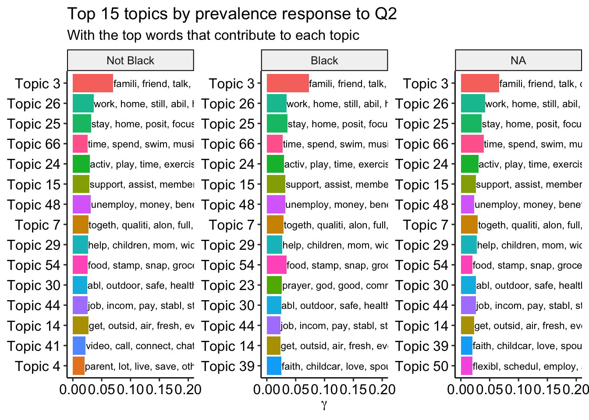
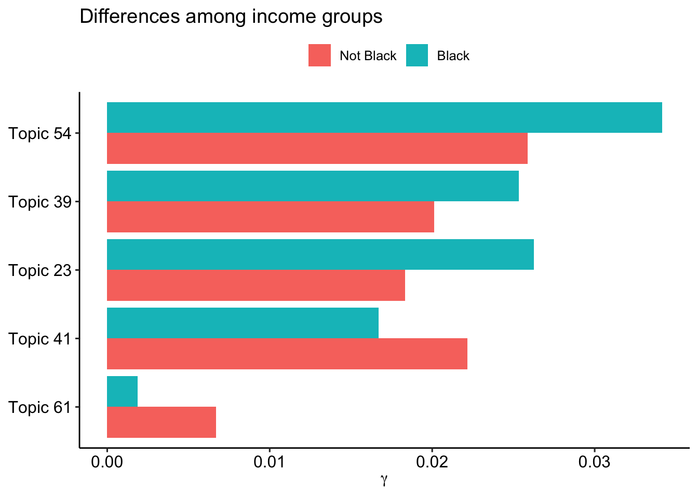
Poverty
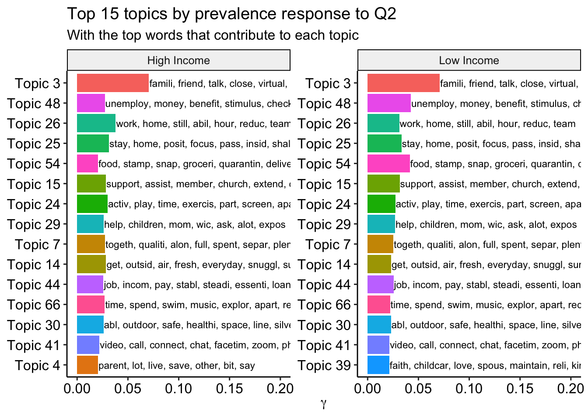
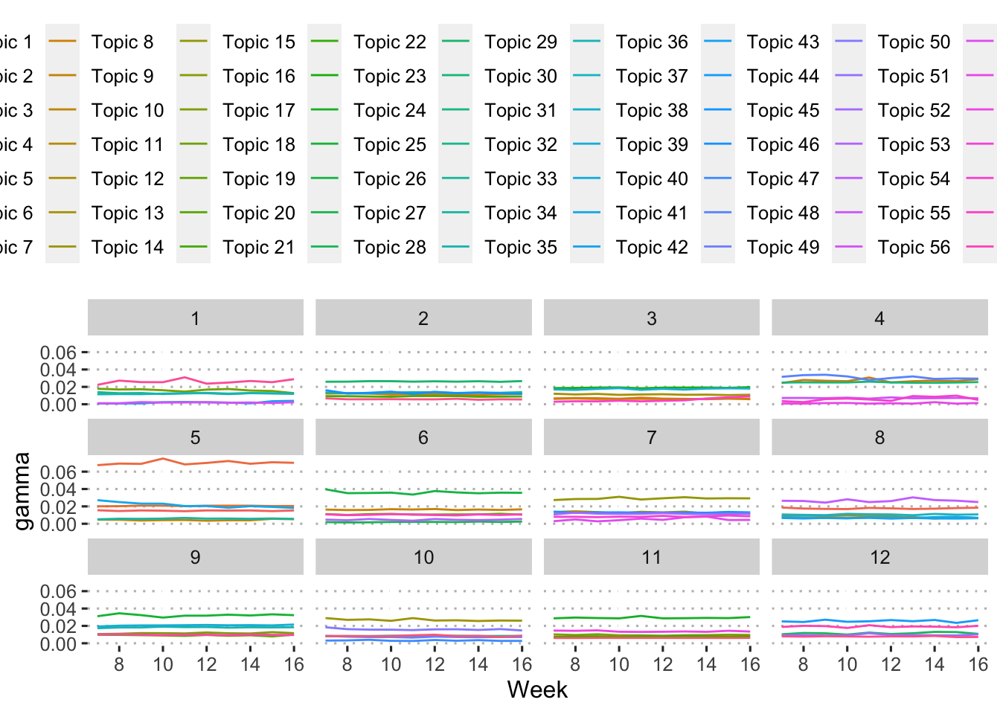
Topics by week
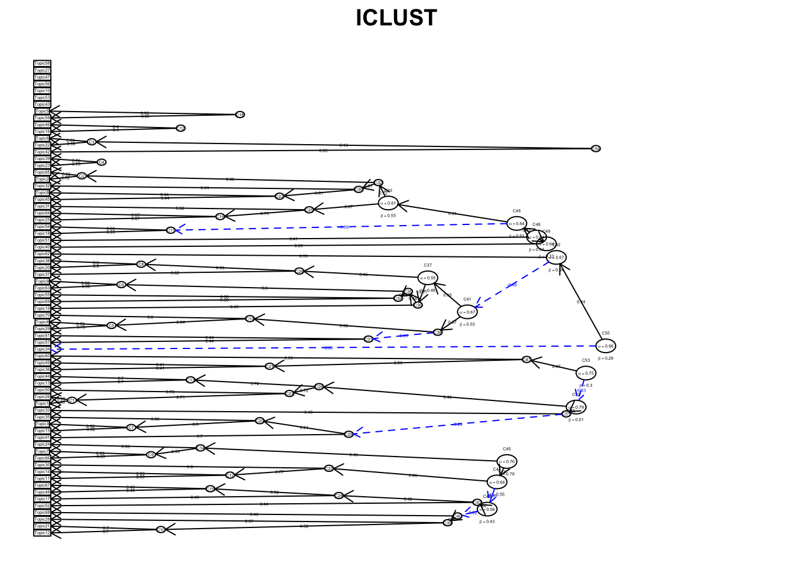
Topic clusters
Topic structure
## ICLUST (Item Cluster Analysis)
## Call: iclust(r.mat = topics_only_wide)
##
## Purified Alpha:
## C45 C53 C55 C49 C4 C54 C12 C18 V38 V49 V2 V52 V42 V20 V54
## 0.76 0.75 0.66 0.64 0.75 0.35 0.25 0.22 1.00 1.00 1.00 1.00 1.00 1.00 1.00
##
## G6* reliability:
## C45 C53 C55 C49 C4 C54 C12 C18 V38 V49 V2 V52 V42 V20 V54
## 0.83 0.72 0.39 0.86 1.00 1.00 1.00 1.00 1.00 1.00 1.00 1.00 1.00 1.00 1.00
##
## Original Beta:
## C45 C53 C55 C49 C4 C54 C12 C18 V38 V49 V2 V52 V42 V20 V54
## 0.79 0.30 0.29 0.33 0.75 0.16 0.25 0.22 NA NA NA NA NA NA NA
##
## Cluster size:
## C45 C53 C55 C49 C4 C54 C12 C18 V38 V49 V2 V52 V42 V20 V54
## 14 13 15 12 2 3 2 2 1 1 1 1 1 1 1
##
## Item by Cluster Structure matrix:
## O P C45 C53 C55 C49 C4 C54 C12 C18 V38 V49
## Topic1 C53 C53 -0.41 -0.68 -0.20 -0.17 0.00 0.02 -0.09 0.01 -0.03 0.07
## Topic10 V2 V2 -0.02 0.00 -0.02 -0.08 -0.01 -0.02 0.03 -0.03 -0.01 -0.01
## Topic11 C45 C45 0.34 0.04 0.07 -0.01 -0.07 -0.05 -0.06 -0.05 -0.01 -0.02
## Topic12 C45 C45 0.48 0.15 0.12 0.01 -0.12 -0.08 -0.04 -0.08 -0.02 -0.04
## Topic13 C53 C53 -0.14 -0.53 -0.14 0.08 -0.03 0.12 -0.10 0.04 -0.03 0.04
## Topic14 C45 C45 0.66 0.14 0.09 0.15 -0.18 -0.04 -0.09 -0.07 -0.03 -0.05
## Topic15 C53 C53 -0.24 0.57 0.12 -0.30 0.39 -0.15 0.05 -0.09 -0.02 -0.07
## Topic16 C12 C12 -0.07 0.03 -0.09 -0.01 0.04 0.02 0.76 0.01 -0.02 -0.02
## Topic17 C45 C45 -0.40 -0.16 -0.13 -0.08 -0.02 0.11 -0.03 0.04 -0.02 0.01
## Topic18 C49 C49 -0.12 0.03 0.02 -0.40 -0.06 -0.02 0.15 -0.01 -0.01 -0.02
## Topic19 C55 C55 0.01 -0.07 -0.34 0.09 -0.07 0.03 0.05 0.01 -0.02 0.00
## Topic2 C49 C49 0.09 0.01 -0.06 0.51 0.14 0.12 -0.05 0.04 -0.03 -0.02
## Topic20 C55 C55 -0.09 -0.17 -0.44 0.03 -0.08 0.05 0.06 0.13 -0.02 0.05
## Topic21 C45 C45 0.53 0.14 -0.02 0.12 -0.10 -0.04 0.00 -0.07 -0.03 -0.04
## Topic22 C54 C54 -0.10 -0.11 -0.08 0.05 0.00 0.68 -0.03 0.07 -0.02 0.00
## Topic23 C4 C4 -0.10 0.21 0.01 0.02 0.89 0.01 0.02 0.07 -0.02 -0.04
## Topic24 C45 C45 0.85 0.13 0.15 0.33 -0.19 -0.09 -0.12 -0.15 -0.05 -0.08
## Topic25 C49 C49 0.12 0.00 0.04 0.43 0.00 0.02 -0.10 -0.02 -0.02 -0.03
## Topic26 C53 C53 -0.16 -0.67 -0.17 -0.05 -0.08 -0.02 -0.10 0.00 -0.03 0.07
## Topic27 V20 V20 -0.01 0.02 0.04 -0.04 -0.02 -0.02 -0.01 -0.02 0.00 -0.01
## Topic28 C45 C45 0.39 0.10 0.09 0.07 -0.12 -0.02 -0.01 -0.05 -0.02 -0.04
## Topic29 C55 C55 -0.50 -0.22 -0.67 -0.01 0.13 0.17 0.05 0.06 -0.05 -0.01
## Topic3 C53 C53 -0.04 0.69 0.21 -0.18 0.28 -0.18 0.02 -0.11 -0.02 -0.08
## Topic30 C45 C45 0.49 -0.18 -0.06 0.14 -0.11 0.03 -0.15 -0.09 -0.05 -0.03
## Topic31 C49 C49 0.04 -0.04 -0.11 0.48 0.03 0.12 0.00 0.11 -0.03 -0.02
## Topic32 C49 C49 0.16 -0.07 -0.11 0.45 -0.10 0.04 -0.04 -0.01 -0.02 -0.02
## Topic33 C53 C53 0.08 -0.28 -0.10 0.09 -0.10 0.03 0.02 0.01 -0.02 0.01
## Topic34 C55 C55 -0.09 -0.07 -0.27 0.06 0.05 0.05 -0.02 0.05 -0.02 0.00
## Topic35 C53 C53 0.07 0.68 0.04 -0.12 0.20 -0.14 0.04 -0.12 -0.03 -0.09
## Topic36 C53 C53 0.16 0.43 -0.08 0.06 -0.02 -0.04 0.03 -0.04 -0.03 -0.05
## Topic37 C55 C55 -0.14 -0.16 -0.45 0.02 -0.11 0.09 0.10 0.05 -0.02 0.02
## Topic38 C55 C55 -0.17 -0.16 -0.46 -0.01 0.03 0.04 0.03 0.05 -0.02 0.01
## Topic39 C4 C4 -0.26 0.08 -0.16 0.03 0.89 0.01 0.01 0.07 -0.03 -0.03
## Topic4 C55 C55 -0.25 0.00 -0.55 0.06 0.17 0.07 0.02 0.05 -0.05 -0.03
## Topic40 C49 C49 0.04 -0.03 -0.05 0.32 -0.04 0.07 -0.02 0.04 -0.02 -0.02
## Topic41 C53 C53 0.02 0.48 0.20 -0.12 0.01 -0.13 0.07 -0.08 -0.01 -0.05
## Topic42 C54 C54 0.00 -0.01 -0.09 0.09 -0.04 0.58 0.02 0.03 -0.02 -0.01
## Topic43 V38 V38 -0.03 0.00 0.07 -0.04 -0.03 -0.03 -0.02 -0.02 1.00 0.00
## Topic44 C53 C53 -0.32 -0.54 -0.01 -0.16 0.02 0.02 -0.10 -0.01 -0.02 0.03
## Topic45 C49 C49 -0.02 -0.28 -0.34 0.43 -0.06 0.17 -0.06 0.12 -0.04 0.02
## Topic46 C12 C12 -0.05 0.12 -0.05 -0.14 -0.01 -0.01 0.76 0.02 -0.02 -0.02
## Topic47 V42 V42 -0.06 -0.03 -0.03 -0.04 0.00 0.00 -0.02 0.01 -0.01 0.00
## Topic48 C45 C45 -0.48 -0.12 0.06 -0.31 -0.06 -0.04 -0.07 -0.04 -0.01 0.00
## Topic49 C53 C53 0.01 0.19 -0.02 0.05 0.00 0.02 0.00 0.02 -0.01 -0.02
## Topic5 C18 C18 -0.07 -0.10 -0.07 0.10 -0.03 0.04 0.00 0.75 -0.01 0.00
## Topic50 C53 C53 -0.11 -0.48 -0.07 -0.01 -0.01 -0.04 -0.07 0.01 -0.02 0.04
## Topic51 C49 C49 0.06 0.01 0.02 0.34 0.03 0.04 -0.03 0.03 -0.01 -0.01
## Topic52 C45 C45 -0.34 -0.12 -0.10 -0.06 0.04 0.09 -0.05 0.02 -0.02 0.00
## Topic53 V49 V49 -0.06 -0.10 0.01 -0.03 -0.03 -0.01 -0.03 0.00 0.00 1.00
## Topic54 C49 C49 -0.31 -0.01 0.10 -0.50 -0.06 -0.02 0.03 -0.06 -0.01 -0.02
## Topic55 C55 C55 0.06 0.08 -0.27 0.09 -0.03 0.02 0.05 -0.01 -0.02 -0.02
## Topic56 V52 V52 -0.02 0.01 0.06 -0.04 -0.01 -0.03 -0.02 -0.02 0.00 0.00
## Topic57 C55 C55 -0.06 0.00 0.32 -0.09 -0.06 -0.07 -0.04 -0.04 0.00 0.01
## Topic58 V54 V54 -0.02 0.00 0.04 -0.03 -0.01 -0.02 -0.01 -0.01 0.00 0.00
## Topic59 C18 C18 -0.12 -0.02 -0.06 0.06 0.15 0.10 0.03 0.75 -0.02 0.00
## Topic6 C54 C54 -0.11 -0.11 -0.15 0.19 0.05 0.72 0.02 0.09 -0.03 0.00
## Topic60 C53 C53 0.12 0.28 0.01 0.00 -0.02 -0.04 -0.01 -0.03 -0.01 -0.03
## Topic61 C55 C55 -0.06 0.00 0.33 -0.10 -0.07 -0.07 -0.05 -0.04 0.02 -0.01
## Topic62 C55 C55 -0.05 0.00 0.30 -0.09 -0.05 -0.06 -0.04 -0.04 0.00 -0.01
## Topic63 C55 C55 -0.08 -0.11 -0.44 0.01 -0.04 -0.01 0.02 -0.02 -0.02 0.00
## Topic64 C49 C49 0.41 0.02 0.05 0.65 -0.11 0.08 -0.09 0.02 -0.03 -0.06
## Topic65 C49 C49 0.00 0.08 -0.11 0.46 0.19 0.09 0.01 0.17 -0.03 -0.03
## Topic66 C45 C45 0.57 0.02 0.24 0.08 -0.22 -0.11 -0.11 -0.12 -0.02 -0.04
## Topic67 C45 C45 -0.40 -0.16 -0.04 -0.21 0.03 0.00 -0.02 0.01 -0.01 0.02
## Topic68 C45 C45 0.29 0.06 0.03 0.00 -0.09 -0.04 0.02 -0.05 -0.01 -0.02
## Topic69 C55 C55 0.00 -0.07 -0.28 0.11 -0.07 0.04 0.01 0.01 -0.02 -0.01
## Topic7 C45 C45 0.64 0.04 0.25 0.22 -0.17 -0.10 -0.14 -0.13 -0.03 -0.06
## Topic70 C55 C55 -0.13 -0.13 -0.59 0.21 0.42 0.23 0.05 0.10 -0.10 -0.03
## Topic8 C49 C49 0.08 -0.01 -0.11 0.40 -0.03 0.09 0.00 0.00 -0.02 -0.02
## Topic9 C55 C55 0.12 -0.07 -0.58 0.11 -0.06 0.06 0.04 -0.05 -0.05 -0.02
## V2 V52 V42 V20 V54
## Topic1 -0.01 -0.03 0.04 -0.03 -0.02
## Topic10 1.00 0.00 0.00 0.01 0.00
## Topic11 0.00 -0.01 -0.02 0.00 -0.01
## Topic12 -0.01 -0.01 -0.03 0.00 -0.01
## Topic13 -0.01 -0.03 0.01 -0.03 -0.02
## Topic14 -0.02 -0.02 -0.04 -0.01 -0.02
## Topic15 -0.01 -0.01 -0.01 0.00 -0.01
## Topic16 0.01 -0.01 -0.01 -0.01 -0.01
## Topic17 -0.02 -0.01 0.01 -0.02 -0.01
## Topic18 0.06 -0.01 0.00 0.00 -0.01
## Topic19 0.01 -0.02 -0.01 -0.01 -0.01
## Topic2 -0.05 -0.02 -0.02 -0.03 -0.02
## Topic20 0.01 -0.02 0.00 -0.02 -0.02
## Topic21 0.00 -0.02 -0.03 -0.01 -0.02
## Topic22 -0.01 -0.02 0.01 -0.02 -0.01
## Topic23 -0.01 0.00 -0.01 -0.01 -0.01
## Topic24 -0.04 -0.03 -0.07 -0.02 -0.03
## Topic25 -0.04 -0.02 -0.02 -0.01 -0.01
## Topic26 -0.01 -0.03 0.01 -0.03 -0.02
## Topic27 0.01 0.00 -0.01 1.00 0.00
## Topic28 -0.01 -0.01 -0.03 0.00 -0.01
## Topic29 -0.01 -0.05 0.06 -0.04 -0.03
## Topic3 -0.02 -0.01 -0.03 -0.01 -0.01
## Topic30 0.00 -0.04 -0.03 -0.02 -0.03
## Topic31 -0.02 -0.02 -0.02 -0.02 -0.02
## Topic32 -0.03 -0.02 -0.02 -0.02 -0.02
## Topic33 -0.01 -0.02 -0.01 -0.01 -0.01
## Topic34 -0.02 -0.01 0.00 -0.01 -0.01
## Topic35 -0.01 -0.02 -0.02 0.00 -0.02
## Topic36 -0.01 -0.02 -0.01 -0.01 -0.02
## Topic37 0.00 -0.02 0.00 -0.02 -0.02
## Topic38 0.01 -0.02 0.01 -0.02 -0.01
## Topic39 -0.01 -0.02 0.01 -0.02 -0.01
## Topic4 -0.01 -0.04 0.04 -0.03 -0.03
## Topic40 -0.02 -0.02 -0.02 -0.01 -0.01
## Topic41 -0.01 -0.01 -0.04 0.00 -0.01
## Topic42 -0.01 -0.02 -0.01 -0.01 -0.01
## Topic43 -0.01 0.00 -0.01 0.00 0.00
## Topic44 -0.01 -0.02 0.04 -0.02 -0.01
## Topic45 -0.02 -0.03 0.00 -0.03 -0.02
## Topic46 0.04 -0.01 -0.02 0.00 -0.01
## Topic47 0.00 -0.01 1.00 -0.01 0.00
## Topic48 -0.02 -0.01 0.02 -0.01 -0.01
## Topic49 -0.01 -0.01 -0.01 -0.01 -0.01
## Topic5 -0.02 -0.01 0.00 -0.01 -0.01
## Topic50 -0.01 -0.02 0.00 -0.02 -0.01
## Topic51 -0.03 -0.01 -0.01 -0.02 -0.01
## Topic52 -0.01 -0.02 0.01 -0.01 -0.01
## Topic53 -0.01 0.00 0.00 -0.01 0.00
## Topic54 0.03 -0.01 0.01 0.00 -0.01
## Topic55 0.01 -0.02 -0.01 0.00 -0.01
## Topic56 0.00 1.00 -0.01 0.00 0.00
## Topic57 -0.01 0.02 -0.01 0.01 0.01
## Topic58 0.00 0.00 0.00 0.00 1.00
## Topic59 -0.02 -0.01 0.01 -0.02 -0.01
## Topic6 -0.02 -0.02 0.00 -0.02 -0.02
## Topic60 0.00 -0.01 -0.01 0.00 -0.01
## Topic61 -0.01 0.03 -0.01 0.01 0.00
## Topic62 -0.01 0.01 -0.01 0.01 0.01
## Topic63 0.00 -0.02 0.04 -0.01 -0.01
## Topic64 -0.06 -0.03 -0.06 -0.03 -0.02
## Topic65 -0.05 -0.02 -0.01 -0.02 -0.02
## Topic66 -0.05 -0.02 -0.04 -0.02 -0.01
## Topic67 0.00 -0.01 0.03 -0.01 -0.01
## Topic68 0.00 -0.01 -0.02 0.00 -0.01
## Topic69 -0.02 -0.02 -0.01 -0.01 -0.01
## Topic7 -0.05 -0.02 -0.05 -0.02 -0.01
## Topic70 0.02 -0.07 0.03 -0.04 -0.05
## Topic8 -0.02 -0.02 -0.02 -0.01 -0.01
## Topic9 0.06 -0.04 0.03 -0.01 -0.03
##
## With eigenvalues of:
## C45 C53 C55 C49 C4 C54 C12 C18 V38 V49 V2 V52 V42 V20 V54
## 4.4 3.8 3.1 2.8 2.2 1.4 1.3 1.2 1.0 1.0 1.0 1.0 1.0 1.0 1.0
##
## Purified scale intercorrelations
## reliabilities on diagonal
## correlations corrected for attenuation above diagonal:
## C45 C53 C55 C49 C4 C54 C12 C18 V38 V49 V2 V52
## C45 0.76 0.23 0.25 0.38 -0.27 -0.20 -0.19 -0.31 -0.03 -0.07 -0.02 -0.02
## C53 0.18 0.75 0.26 -0.09 0.21 -0.23 0.23 -0.19 0.00 -0.11 0.00 0.01
## C55 0.17 0.18 0.66 -0.26 -0.12 -0.34 -0.23 -0.23 0.08 0.01 -0.02 0.08
## C49 0.26 -0.06 -0.17 0.64 0.04 0.35 -0.25 0.28 -0.05 -0.04 -0.10 -0.05
## C4 -0.20 0.16 -0.09 0.03 0.75 0.01 0.04 0.20 -0.03 -0.04 -0.01 -0.01
## C54 -0.10 -0.12 -0.16 0.17 0.01 0.35 0.02 0.33 -0.05 -0.02 -0.04 -0.04
## C12 -0.08 0.10 -0.09 -0.10 0.02 0.01 0.25 0.10 -0.04 -0.05 0.06 -0.04
## C18 -0.13 -0.08 -0.09 0.11 0.08 0.09 0.02 0.22 -0.04 0.00 -0.06 -0.04
## V38 -0.03 0.00 0.07 -0.04 -0.03 -0.03 -0.02 -0.02 1.00 0.00 -0.01 0.00
## V49 -0.06 -0.10 0.01 -0.03 -0.03 -0.01 -0.03 0.00 0.00 1.00 -0.01 0.00
## V2 -0.02 0.00 -0.02 -0.08 -0.01 -0.02 0.03 -0.03 -0.01 -0.01 1.00 0.00
## V52 -0.02 0.01 0.06 -0.04 -0.01 -0.03 -0.02 -0.02 0.00 0.00 0.00 1.00
## V42 -0.06 -0.03 -0.03 -0.04 0.00 0.00 -0.02 0.01 -0.01 0.00 0.00 -0.01
## V20 -0.01 0.02 0.04 -0.04 -0.02 -0.02 -0.01 -0.02 0.00 -0.01 0.01 0.00
## V54 -0.02 0.00 0.04 -0.03 -0.01 -0.02 -0.01 -0.01 0.00 0.00 0.00 0.00
## V42 V20 V54
## C45 -0.07 -0.01 -0.02
## C53 -0.04 0.02 0.00
## C55 -0.04 0.05 0.05
## C49 -0.05 -0.05 -0.03
## C4 0.00 -0.02 -0.02
## C54 0.00 -0.04 -0.03
## C12 -0.03 -0.01 -0.03
## C18 0.01 -0.04 -0.03
## V38 -0.01 0.00 0.00
## V49 0.00 -0.01 0.00
## V2 0.00 0.01 0.00
## V52 -0.01 0.00 0.00
## V42 1.00 -0.01 0.00
## V20 -0.01 1.00 0.00
## V54 0.00 0.00 1.00
##
## Cluster fit = 0.5 Pattern fit = 0.91 RMSR = 0.05Topic structure (Black respondants only)
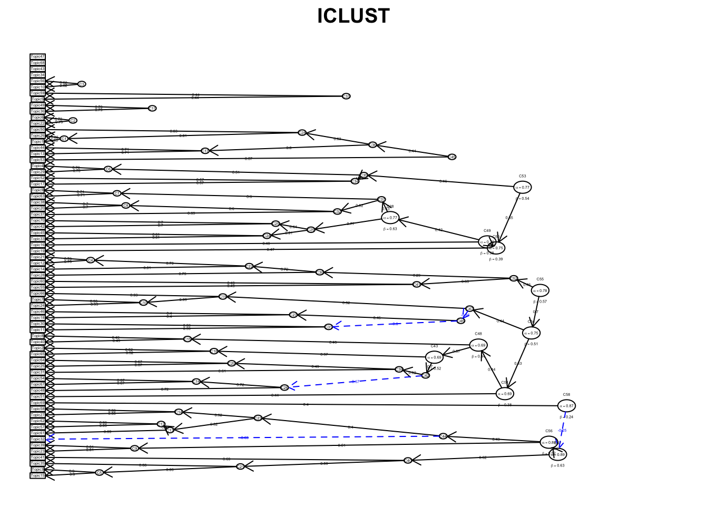
## ICLUST (Item Cluster Analysis)
## Call: iclust(r.mat = topics_only_wide)
##
## Purified Alpha:
## C53 C54 C50 C16 C38 C36 C52 C47 C21 C9 C26 C22 C23 V20 V49 V42
## 0.92 0.74 0.76 0.85 0.81 0.84 0.65 0.59 0.50 0.46 0.25 0.31 0.24 1.00 1.00 1.00
##
## G6* reliability:
## C53 C54 C50 C16 C38 C36 C52 C47 C21 C9 C26 C22 C23 V20 V49 V42
## 1.0 0.8 1.0 1.0 1.0 1.0 1.0 1.0 1.0 1.0 1.0 1.0 1.0 1.0 1.0 1.0
##
## Original Beta:
## C53 C54 C50 C38 C16 C36 C52 C47 C21 C9 C26 C22 C23 V20 V49 V42
## 0.55 0.39 0.55 0.68 0.90 0.61 0.39 0.46 0.50 0.46 0.25 0.31 0.24 NA NA NA
##
## Cluster size:
## C53 C54 C50 C16 C38 C36 C52 C47 C21 C9 C26 C22 C23 V20 V49 V42
## 7 13 12 4 5 4 8 4 2 2 2 2 2 1 1 1
##
## Item by Cluster Structure matrix:
## O P C53 C54 C50 C38 C16 C36 C52 C47 C21 C9
## Topic1 C38 C38 0.02 -0.28 0.26 0.85 -0.23 -0.28 -0.33 0.15 -0.15 0.00
## Topic10 C22 C22 0.01 -0.06 -0.02 -0.02 -0.05 -0.03 0.01 -0.04 0.00 -0.01
## Topic11 C52 C52 -0.05 0.01 -0.05 -0.06 0.08 -0.04 0.42 -0.07 0.04 -0.01
## Topic12 C52 C52 -0.15 0.07 -0.17 -0.21 0.13 0.02 0.67 -0.19 0.06 -0.02
## Topic13 C38 C38 -0.12 0.09 0.22 0.69 -0.02 -0.30 -0.17 0.24 -0.07 0.05
## Topic14 C52 C52 -0.26 0.30 -0.09 -0.27 0.46 -0.10 0.74 -0.18 0.13 0.03
## Topic15 C36 C36 0.59 -0.28 -0.22 -0.22 -0.35 0.85 -0.15 -0.11 0.04 -0.19
## Topic16 C23 C23 -0.02 0.05 0.13 -0.07 -0.10 0.03 -0.04 0.02 0.00 0.05
## Topic17 C47 C47 -0.11 -0.13 0.18 0.11 -0.19 -0.14 -0.19 0.57 -0.07 0.04
## Topic18 C54 C54 0.04 -0.42 -0.10 -0.12 -0.23 -0.06 -0.09 -0.07 -0.04 -0.05
## Topic19 C50 C50 -0.19 0.09 0.35 -0.03 -0.01 -0.14 0.01 -0.03 -0.01 0.08
## Topic2 C54 C54 -0.11 0.44 0.05 -0.11 0.03 -0.09 0.00 0.04 0.00 0.07
## Topic20 C9 C9 -0.19 0.03 0.22 0.10 -0.12 -0.16 -0.04 0.05 0.04 0.80
## Topic21 C52 C52 -0.17 0.16 -0.04 -0.19 0.13 0.00 0.67 -0.18 0.10 -0.01
## Topic22 C47 C47 -0.11 0.08 0.15 0.13 -0.07 -0.19 -0.14 0.73 0.02 0.06
## Topic23 C53 C53 0.60 0.08 -0.04 -0.12 -0.20 0.19 -0.10 0.02 -0.01 -0.07
## Topic24 C16 C16 -0.28 0.44 -0.20 -0.30 0.91 -0.14 0.46 -0.30 0.00 -0.02
## Topic25 C54 C54 -0.09 0.45 -0.09 -0.12 0.15 -0.13 -0.04 -0.06 -0.04 -0.04
## Topic26 C38 C38 -0.17 -0.08 0.22 0.81 -0.01 -0.32 -0.19 0.04 -0.11 0.05
## Topic27 V20 V20 0.14 -0.03 -0.05 -0.04 -0.03 0.00 0.01 -0.04 0.00 -0.02
## Topic28 C52 C52 -0.17 0.14 -0.16 -0.21 0.22 -0.03 0.55 -0.16 0.04 -0.03
## Topic29 C50 C50 -0.02 -0.13 0.71 0.21 -0.42 -0.13 -0.33 0.41 -0.05 0.10
## Topic3 C36 C36 0.42 -0.09 -0.30 -0.34 -0.17 0.91 -0.01 -0.21 0.09 -0.17
## Topic30 C54 C16 -0.18 0.20 0.08 0.26 0.61 -0.24 0.16 0.03 0.03 0.01
## Topic31 C54 C54 -0.20 0.56 0.22 -0.08 0.00 -0.17 0.08 0.07 0.00 0.09
## Topic32 C54 C54 -0.29 0.43 0.14 -0.07 0.11 -0.19 0.13 -0.07 0.01 0.10
## Topic33 C50 C50 -0.23 0.18 0.36 0.11 0.20 -0.23 0.01 0.01 -0.06 0.06
## Topic34 C50 C50 -0.04 0.12 0.38 0.16 -0.13 -0.09 -0.15 0.16 0.00 0.07
## Topic35 C36 C36 0.41 -0.03 -0.11 -0.33 -0.11 0.84 0.17 -0.19 0.36 -0.13
## Topic36 C21 C21 -0.07 0.13 0.06 -0.21 -0.02 0.27 0.26 -0.08 0.82 0.05
## Topic37 C50 C50 -0.25 -0.02 0.56 0.19 -0.17 -0.23 -0.08 0.10 0.00 0.19
## Topic38 C50 C50 -0.10 -0.02 0.48 0.19 -0.19 -0.16 -0.13 0.10 0.01 0.15
## Topic39 C53 C53 0.61 0.08 0.12 0.02 -0.30 0.23 -0.22 0.05 -0.02 -0.07
## Topic4 C50 C50 0.07 0.03 0.60 0.01 -0.25 0.05 -0.16 0.23 0.08 0.03
## Topic40 C54 C54 -0.20 0.50 0.16 0.04 0.08 -0.16 0.06 0.14 0.07 0.21
## Topic41 C36 C36 0.10 -0.01 -0.24 -0.26 -0.09 0.68 0.12 -0.20 0.08 -0.09
## Topic42 C50 C50 -0.14 0.19 0.39 -0.02 -0.04 -0.14 0.13 0.14 0.01 0.07
## Topic43 C53 C53 0.96 -0.31 -0.14 -0.03 -0.20 0.47 -0.18 -0.12 -0.08 -0.26
## Topic44 C38 C38 0.08 -0.26 0.09 0.73 -0.23 -0.22 -0.30 0.22 -0.13 -0.04
## Topic45 C50 C50 -0.31 0.32 0.61 0.24 -0.03 -0.35 -0.03 0.20 0.00 0.23
## Topic46 C23 C23 0.01 -0.11 -0.01 -0.14 -0.17 0.12 0.04 -0.06 0.05 0.02
## Topic47 V42 V42 -0.01 -0.04 -0.04 -0.01 -0.05 -0.02 -0.04 -0.02 -0.02 -0.02
## Topic48 C54 C54 0.18 -0.56 -0.12 0.12 -0.32 -0.06 -0.31 0.09 -0.14 -0.12
## Topic49 C21 C21 -0.07 0.04 -0.01 -0.01 -0.07 0.02 -0.01 0.05 0.82 0.04
## Topic5 C26 C26 -0.16 0.10 0.13 0.06 -0.09 -0.15 -0.06 0.09 -0.01 0.15
## Topic50 C38 C38 -0.11 0.00 0.13 0.70 -0.08 -0.21 -0.14 -0.01 -0.06 0.02
## Topic51 C54 C54 -0.09 0.35 0.00 -0.08 0.03 -0.05 0.01 0.00 0.01 0.02
## Topic52 C47 C47 0.02 -0.15 0.14 0.17 -0.19 -0.07 -0.20 0.61 0.01 -0.02
## Topic53 V49 V49 -0.04 -0.01 0.03 0.08 -0.07 -0.10 -0.06 0.01 -0.04 0.02
## Topic54 C54 C54 0.21 -0.63 -0.24 -0.09 -0.31 -0.07 -0.23 -0.01 -0.14 -0.13
## Topic55 C52 C52 -0.09 0.14 0.15 -0.09 -0.03 0.04 0.34 -0.04 0.11 0.07
## Topic56 C22 C22 0.25 -0.03 -0.06 -0.05 -0.04 0.10 -0.02 0.00 -0.02 -0.06
## Topic57 C53 C53 0.92 -0.52 -0.32 -0.06 -0.27 0.43 -0.22 -0.16 -0.13 -0.27
## Topic58 C53 C53 0.91 -0.17 0.00 -0.04 -0.15 0.47 -0.11 -0.09 -0.03 -0.23
## Topic59 C26 C26 -0.01 0.07 -0.01 -0.06 -0.16 -0.09 -0.08 0.07 -0.01 0.02
## Topic6 C47 C47 -0.09 0.22 0.21 0.04 -0.13 -0.19 -0.11 0.77 -0.01 0.13
## Topic60 C52 C52 0.08 0.06 -0.01 -0.15 0.01 0.26 0.47 -0.11 0.14 -0.03
## Topic61 C53 C53 0.88 -0.58 -0.33 -0.08 -0.31 0.41 -0.23 -0.16 -0.13 -0.26
## Topic62 C53 C53 0.92 -0.53 -0.33 -0.14 -0.27 0.48 -0.19 -0.18 -0.11 -0.28
## Topic63 C50 C50 -0.13 -0.01 0.57 0.20 -0.12 -0.12 -0.03 0.02 0.02 0.09
## Topic64 C54 C54 -0.35 0.68 -0.08 -0.25 0.43 -0.22 0.23 -0.09 -0.01 0.06
## Topic65 C54 C54 -0.06 0.51 0.14 -0.17 -0.05 0.00 -0.05 0.12 0.13 0.07
## Topic66 C16 C16 -0.28 0.12 -0.31 -0.21 0.86 -0.18 0.08 -0.21 -0.10 -0.06
## Topic67 C54 C54 0.16 -0.51 0.05 0.20 -0.33 -0.14 -0.28 0.12 -0.14 -0.08
## Topic68 C52 C52 -0.10 0.05 -0.06 -0.11 0.11 0.02 0.45 -0.11 0.04 0.00
## Topic69 C54 C54 -0.17 0.32 0.15 0.04 0.01 -0.12 0.04 0.03 0.03 0.08
## Topic7 C16 C16 -0.22 0.28 -0.32 -0.25 0.93 -0.17 0.15 -0.24 -0.10 -0.07
## Topic70 C50 C50 0.38 0.22 0.64 0.23 -0.22 0.02 -0.08 0.28 0.09 0.07
## Topic8 C9 C9 -0.21 0.23 0.10 -0.07 0.05 -0.12 0.04 0.07 0.05 0.80
## Topic9 C50 C50 -0.16 0.12 0.61 0.06 -0.03 -0.14 0.20 -0.02 0.10 0.13
## C26 C22 C23 V20 V49 V42
## Topic1 -0.03 -0.03 -0.10 -0.03 0.07 0.00
## Topic10 -0.04 0.77 0.02 0.02 -0.01 -0.01
## Topic11 -0.03 0.00 -0.04 0.00 -0.02 -0.01
## Topic12 -0.08 -0.03 -0.04 0.01 -0.04 -0.03
## Topic13 0.03 -0.05 -0.12 -0.03 0.08 -0.01
## Topic14 -0.01 0.01 -0.08 -0.01 -0.05 -0.02
## Topic15 -0.13 0.05 0.08 -0.01 -0.08 -0.01
## Topic16 0.00 -0.01 0.75 -0.01 -0.02 -0.02
## Topic17 0.03 -0.03 -0.03 -0.02 0.01 -0.01
## Topic18 -0.05 0.02 0.13 0.01 -0.02 -0.01
## Topic19 0.00 -0.02 0.04 -0.01 0.03 -0.02
## Topic2 0.00 0.04 -0.02 -0.03 -0.03 -0.03
## Topic20 0.18 -0.03 0.06 -0.02 0.05 -0.01
## Topic21 -0.07 -0.03 0.01 0.00 -0.03 -0.03
## Topic22 0.12 -0.03 -0.04 -0.03 0.02 -0.01
## Topic23 0.09 0.05 0.02 -0.02 -0.03 -0.02
## Topic24 -0.17 -0.04 -0.12 -0.02 -0.08 -0.05
## Topic25 -0.02 -0.04 -0.11 -0.02 -0.03 -0.02
## Topic26 -0.02 -0.03 -0.11 -0.03 0.06 -0.01
## Topic27 -0.02 0.02 -0.01 1.00 -0.01 -0.01
## Topic28 -0.07 -0.02 0.02 0.02 -0.04 -0.03
## Topic29 0.03 -0.04 0.06 -0.05 0.01 -0.01
## Topic3 -0.14 0.04 0.04 -0.01 -0.09 -0.01
## Topic30 -0.11 -0.02 -0.15 -0.03 -0.03 -0.03
## Topic31 0.10 -0.04 0.03 -0.03 0.02 -0.04
## Topic32 -0.01 -0.06 -0.03 -0.02 -0.02 -0.03
## Topic33 0.00 -0.04 0.04 -0.02 0.00 -0.02
## Topic34 0.08 -0.04 -0.03 -0.03 0.01 -0.02
## Topic35 -0.17 0.04 0.11 0.00 -0.10 -0.02
## Topic36 -0.05 0.00 0.06 0.01 -0.05 -0.02
## Topic37 0.12 -0.05 0.14 -0.02 0.04 -0.02
## Topic38 0.08 -0.03 0.02 -0.02 0.02 -0.01
## Topic39 0.05 0.03 0.00 -0.03 -0.03 -0.02
## Topic4 0.04 -0.04 0.04 -0.03 0.00 -0.01
## Topic40 0.14 -0.06 -0.02 -0.03 0.03 -0.03
## Topic41 -0.08 0.02 0.09 0.00 -0.06 -0.03
## Topic42 0.04 -0.03 0.04 -0.02 0.00 -0.03
## Topic43 -0.14 0.18 -0.02 0.07 -0.04 -0.01
## Topic44 0.00 -0.03 -0.11 -0.03 0.05 0.00
## Topic45 0.18 -0.06 -0.04 -0.04 0.04 -0.03
## Topic46 -0.01 0.02 0.75 0.00 -0.03 -0.02
## Topic47 -0.01 -0.01 -0.03 -0.01 0.02 1.00
## Topic48 -0.07 -0.02 -0.07 -0.02 0.00 0.00
## Topic49 0.02 -0.01 -0.01 -0.01 -0.01 -0.01
## Topic5 0.76 -0.05 -0.02 -0.02 0.01 -0.01
## Topic50 0.00 -0.03 -0.08 -0.02 0.04 -0.01
## Topic51 0.06 -0.03 -0.02 -0.02 0.00 -0.01
## Topic52 0.02 -0.03 -0.05 -0.01 0.00 -0.01
## Topic53 0.02 -0.02 -0.03 -0.01 1.00 0.02
## Topic54 -0.10 0.00 0.00 0.00 -0.03 -0.01
## Topic55 -0.02 0.04 0.08 0.00 -0.01 -0.02
## Topic56 -0.04 0.77 -0.01 0.01 -0.02 -0.01
## Topic57 -0.17 0.21 -0.03 0.26 0.00 0.00
## Topic58 -0.15 0.14 0.00 0.03 -0.07 -0.02
## Topic59 0.76 -0.03 0.00 -0.02 0.01 -0.01
## Topic6 0.11 0.02 0.05 -0.03 0.01 -0.02
## Topic60 -0.06 0.02 0.02 0.00 -0.04 -0.02
## Topic61 -0.17 0.19 -0.01 0.26 -0.02 0.00
## Topic62 -0.18 0.17 0.00 0.21 -0.05 0.00
## Topic63 -0.03 -0.03 0.04 -0.02 0.03 0.01
## Topic64 0.01 -0.08 -0.09 -0.03 -0.05 -0.05
## Topic65 0.16 -0.06 0.05 -0.04 -0.04 -0.03
## Topic66 -0.12 -0.07 -0.14 -0.02 -0.05 -0.03
## Topic67 -0.03 -0.01 -0.02 -0.01 0.01 0.00
## Topic68 -0.06 -0.01 0.04 0.01 -0.02 -0.02
## Topic69 0.01 -0.05 0.01 -0.01 0.01 -0.02
## Topic7 -0.14 -0.06 -0.17 -0.02 -0.06 -0.04
## Topic70 0.03 0.05 0.10 -0.04 -0.01 -0.05
## Topic8 0.00 -0.05 0.01 -0.02 -0.01 -0.03
## Topic9 -0.08 0.01 0.06 -0.01 0.01 -0.02
##
## With eigenvalues of:
## C53 C54 C50 C38 C16 C36 C52 C47 C21 C9 C26 C22 C23 V20 V49 V42
## 5.6 4.1 3.9 3.4 3.5 3.3 2.9 2.2 1.5 1.4 1.3 1.2 1.2 1.1 1.0 1.0
##
## Purified scale intercorrelations
## reliabilities on diagonal
## correlations corrected for attenuation above diagonal:
## C53 C54 C50 C16 C38 C36 C52 C47 C21 C9 C26 C22
## C53 0.92 -0.41 -0.22 -0.33 -0.09 0.52 -0.28 -0.15 -0.13 -0.39 -0.24 0.31
## C54 -0.34 0.74 0.23 0.39 -0.18 -0.16 0.31 0.01 0.17 0.28 0.26 -0.12
## C50 -0.18 0.17 0.76 -0.28 0.31 -0.33 -0.15 0.38 0.05 0.35 0.18 -0.11
## C16 -0.29 0.31 -0.23 0.85 -0.18 -0.26 0.35 -0.31 -0.08 -0.07 -0.35 -0.11
## C38 -0.08 -0.14 0.24 -0.15 0.81 -0.43 -0.41 0.24 -0.21 0.03 -0.01 -0.09
## C36 0.46 -0.12 -0.27 -0.22 -0.35 0.84 0.05 -0.31 0.27 -0.28 -0.34 0.09
## C52 -0.21 0.22 -0.10 0.26 -0.30 0.04 0.65 -0.39 0.26 0.00 -0.23 -0.01
## C47 -0.11 0.01 0.25 -0.22 0.17 -0.22 -0.24 0.59 -0.03 0.15 0.27 -0.06
## C21 -0.09 0.10 0.03 -0.05 -0.14 0.17 0.15 -0.02 0.50 0.11 -0.05 -0.03
## C9 -0.25 0.16 0.20 -0.04 0.02 -0.18 0.00 0.08 0.05 0.46 0.33 -0.13
## C26 -0.12 0.11 0.08 -0.16 0.00 -0.16 -0.09 0.11 -0.02 0.11 0.25 -0.18
## C22 0.17 -0.06 -0.05 -0.06 -0.05 0.05 -0.01 -0.03 -0.01 -0.05 -0.05 0.31
## C23 -0.01 -0.04 0.08 -0.18 -0.14 0.10 0.00 -0.03 0.03 0.05 -0.01 0.00
## V20 0.14 -0.03 -0.05 -0.03 -0.04 0.00 0.01 -0.04 0.00 -0.02 -0.02 0.02
## V49 -0.04 -0.01 0.03 -0.07 0.08 -0.10 -0.06 0.01 -0.04 0.02 0.02 -0.02
## V42 -0.01 -0.04 -0.04 -0.05 -0.01 -0.02 -0.04 -0.02 -0.02 -0.02 -0.01 -0.01
## C23 V20 V49 V42
## C53 -0.01 0.14 -0.04 -0.01
## C54 -0.09 -0.04 -0.01 -0.04
## C50 0.19 -0.06 0.04 -0.04
## C16 -0.39 -0.03 -0.07 -0.05
## C38 -0.31 -0.04 0.09 -0.01
## C36 0.22 0.00 -0.11 -0.02
## C52 0.00 0.01 -0.07 -0.05
## C47 -0.07 -0.05 0.02 -0.02
## C21 0.09 0.00 -0.06 -0.02
## C9 0.14 -0.03 0.04 -0.03
## C26 -0.04 -0.05 0.03 -0.02
## C22 0.02 0.04 -0.03 -0.02
## C23 0.24 -0.01 -0.06 -0.05
## V20 -0.01 1.00 -0.01 -0.01
## V49 -0.03 -0.01 1.00 0.02
## V42 -0.03 -0.01 0.02 1.00
##
## Cluster fit = 0.65 Pattern fit = 0.96 RMSR = 0.04Cluster 1
##
## Topic 24:
## Time with grandparents, less screen time, Outside play, exercise
## Activities at home. Swimming, playing outside, ect.
## Exercise, meds, playing outside
## Trying to find new activities to do together. Spending time outside and playing.
## Exercise and activities
## Topic 7:
## Spending quality time together and reading and doing activities together
## Being able to spend "quality" time together, working in our yard/garden together.
## Having more quality time together.
## More quality time together.
## Quality time together
## Topic 66:
## Spending time outside in the woods.
## Being frugal with our spending
## Spending time with my parents and my niece
## Spend time t
## Spending time togeter
## Topic 30:
## Being able to use parks and outdoor spaces
## Our farm animals and being able to have outdoor space.
## Looking at the silver lining of being home—more family time, more opportunities to explore outdoors, etc
## Being able to go to grandma and grandpa’s and being able to go outside in the nice weather. We are able to walk and explore at large outdoor park areas.
## Being healthy enough to be able to burn the candle from both ends
## Topic 14:
## Having a backyard to go outside to get fresh air and reset
## Getting outside in the fresh air.
## Getting outside for fresh air
## Getting outside and enjoying the nice weather getting fresh air
## Lots of hugs and snuggles and trying to get outside for fresh air..
## Topic 11:
## Warmer weather meaning more outdoor playtime
## The nicer weather and being able to be outside. We live in Minnesota and during March and April we were stuck inside more often.
## Disney +, games/puzzles and finally, warm weather for playing outside/water play!
## Internet and the weather being warm finally.
## Nice weather - playing outside
## Topic 67:
## My tax refund is my only source of money since April.
## My husband's job and VA disability compensation are keeping us afloat. The tax returns and economic stimulus monies we received are helping us to prepare for an upcoming move, since we have been having issues with our landlord and we will likely have to move out by the end of 2 months from now.
## I recently received the CARES act unemployment supplement. It has helped a lot, because it is more than my usual wages.
## That I received my tax refund
## My parents. Our landlady moving our lease to a month to month contract so we didn’t have to worry about breaking our lease.
## Topic 48:
## Extra money from unemployement
## Extra foodstamps
## The stimulus check and the extra money from unemployment.
## Unemployment checks- the additional $600 from federal government
## The unemployment benefits and stimulus money.
## stimulus check & unemployment checks
## Topic 17:
## P ebt for the children that was getting free lunches but cant now since they closed schools. Also the stimulus check helped a little but by the time we got it we where already 4 months behind on certain things and like now 2400 for me and my husband and we only get to file 3 or our kids at 500 a piece thats 3900. It sounds like a lot but, concidering that our rent is 650 a month, our power ranges from 500 to 650 a month, our 50$ water bill, internet for homescholling is close to 100$ a month, gas in two vehicles, then enough food for 6 children and two adults is an outragous amount by itself, and one more thing that i can think of off the top of my head is household products that we really need, but are now almost non existant in our household. With all of that and a lot more that i didnt put down like insurance both health and 2 vehicles that one time of a total of 3900$ is nowhere near what we need if its just going to be a single payment but a reacurring payment of like 1200 per person a month just for like 6 months to a year or so, would help us make it to a place where we would not have to worry even if the virus spikes back up i really want to get into owning real estate i have studied and watched the pros and im very comfortable with making this happen only thing thats in my way is the first down payment
## Nothing really except that he has his job and his hours back. He was cut down to 30 hours for about a month which put us behind on some bills but he is back to 40 now.
## Foodstamps. I am able to get a few dollars for gas from surveys like these. They are literally saving our lives right now. So thank you.
## Whenever my husband is home from work it is very helpful for me both mentally and physically. Unemployment and pandemic relief has been a big help as well but I’m worried they won’t extend the pandemic relief and it is due to expire at the end of the month.
## Right now what is helping us the fact that with my hours being cut at work I qualified for SNAP benefits and through that can put food on our table and also the fact that even th ok ugh I'm behind on Bill's our utilitiea6are not being shut off for now at least.
## Topic 52:
## Financially currently, the government amd other forms of aid. In the long run, me going to college to help with my income potential.
## That we have enough money saved to be able to maintain the lifestyle we did before our decrease in household income, although we definitely think twice before making any non-essential purchases.
## privilege and financial smarts
## Financial stability and camaraderie.
## Family time is our biggest help. My husband travels extensively for work and has been home this entire pandemic and it’s been a true blessing.
## Topic 68:
## Zoom with the preschool class, art projects, dance parties, Daniel tiger and cheetohs.
## Numberblocks and alphablocks (BBC)
## Springboard Virtual tutor program For reading
## Grandparents still involved by FaceTime and as of recently socially distant visits
## Our house has a pool and outdoor space which we are improving lately with a sandbox and now building a dome climbing structure
## Husband working at home leaves more time for him to spend with kids
## Apps for reading and math
## Flash cards and puzzles
## 2 kids that are siblings 2.5 years apart so they are playmates with similar interests
## Twenty trucks truck tunes
## Daniel tiger (feelings)
## Pocoyo (learning Spanish)
## Peppa pig
##
## Gardening, family meals, crafting projects
## Peanut butter M&Ms. The party size bag.
## Arts and craft and reading.
## Topic 28:
## Organized family activities like going to the beach, geocaching, mini golf outdoors, cycling, board game tournaments, science kits, Lego sets, and lots of reading.
## Having a daily schedule and checklist. Doing fun activities together like cycling, puzzles, board game tournaments, geocaching, and "evaluating" all the outdoor mini golf courses in the area.
## Doing simple activities together like baking, board games etc.
## Story nights, game. Nights
## Our community has worked very hard to maintain appropriate social distancing activities...neighborhood distance scavenger hunts, collective porch concerts, neighborhood mini golf, e.t.c. This has been Tyne most beneficial for us in maintaining human contact...and sanity.
## Topic 21:
## Accomplishing things around the house
## Daily walks around the block and seeing one more family for play dates.
## Time away from the house and getting out even if it's just to ride around in the car.
## Consistency- daily walks and rest
## God! He answers prayers and still makes miracles occur daily
## Topic 12:
## Frequent walks and bike rides on public trails.
## going for walks and bike rides
## Walking and bike rides
## Netflix cooking painting etc
## Got a small pool for the kiddos, chatting with friends, walks and bike ridesCluster 1
##
## Topic 24:
## Time with grandparents, less screen time, Outside play, exercise
## Activities at home. Swimming, playing outside, ect.
## Exercise, meds, playing outside
## Trying to find new activities to do together. Spending time outside and playing.
## Exercise and activities
## Topic 7:
## Spending quality time together and reading and doing activities together
## Being able to spend "quality" time together, working in our yard/garden together.
## Having more quality time together.
## More quality time together.
## Quality time together
## Topic 66:
## Spending time outside in the woods.
## Being frugal with our spending
## Spending time with my parents and my niece
## Spend time t
## Spending time togeter
## Topic 30:
## Being able to use parks and outdoor spaces
## Our farm animals and being able to have outdoor space.
## Looking at the silver lining of being home—more family time, more opportunities to explore outdoors, etc
## Being able to go to grandma and grandpa’s and being able to go outside in the nice weather. We are able to walk and explore at large outdoor park areas.
## Being healthy enough to be able to burn the candle from both ends
## Topic 14:
## Having a backyard to go outside to get fresh air and reset
## Getting outside in the fresh air.
## Getting outside for fresh air
## Getting outside and enjoying the nice weather getting fresh air
## Lots of hugs and snuggles and trying to get outside for fresh air..
## Topic 11:
## Warmer weather meaning more outdoor playtime
## The nicer weather and being able to be outside. We live in Minnesota and during March and April we were stuck inside more often.
## Disney +, games/puzzles and finally, warm weather for playing outside/water play!
## Internet and the weather being warm finally.
## Nice weather - playing outside
## Topic 67:
## My tax refund is my only source of money since April.
## My husband's job and VA disability compensation are keeping us afloat. The tax returns and economic stimulus monies we received are helping us to prepare for an upcoming move, since we have been having issues with our landlord and we will likely have to move out by the end of 2 months from now.
## I recently received the CARES act unemployment supplement. It has helped a lot, because it is more than my usual wages.
## That I received my tax refund
## My parents. Our landlady moving our lease to a month to month contract so we didn’t have to worry about breaking our lease.
## Topic 48:
## Extra money from unemployement
## Extra foodstamps
## The stimulus check and the extra money from unemployment.
## Unemployment checks- the additional $600 from federal government
## The unemployment benefits and stimulus money.
## stimulus check & unemployment checks
## Topic 17:
## P ebt for the children that was getting free lunches but cant now since they closed schools. Also the stimulus check helped a little but by the time we got it we where already 4 months behind on certain things and like now 2400 for me and my husband and we only get to file 3 or our kids at 500 a piece thats 3900. It sounds like a lot but, concidering that our rent is 650 a month, our power ranges from 500 to 650 a month, our 50$ water bill, internet for homescholling is close to 100$ a month, gas in two vehicles, then enough food for 6 children and two adults is an outragous amount by itself, and one more thing that i can think of off the top of my head is household products that we really need, but are now almost non existant in our household. With all of that and a lot more that i didnt put down like insurance both health and 2 vehicles that one time of a total of 3900$ is nowhere near what we need if its just going to be a single payment but a reacurring payment of like 1200 per person a month just for like 6 months to a year or so, would help us make it to a place where we would not have to worry even if the virus spikes back up i really want to get into owning real estate i have studied and watched the pros and im very comfortable with making this happen only thing thats in my way is the first down payment
## Nothing really except that he has his job and his hours back. He was cut down to 30 hours for about a month which put us behind on some bills but he is back to 40 now.
## Foodstamps. I am able to get a few dollars for gas from surveys like these. They are literally saving our lives right now. So thank you.
## Whenever my husband is home from work it is very helpful for me both mentally and physically. Unemployment and pandemic relief has been a big help as well but I’m worried they won’t extend the pandemic relief and it is due to expire at the end of the month.
## Right now what is helping us the fact that with my hours being cut at work I qualified for SNAP benefits and through that can put food on our table and also the fact that even th ok ugh I'm behind on Bill's our utilitiea6are not being shut off for now at least.
## Topic 52:
## Financially currently, the government amd other forms of aid. In the long run, me going to college to help with my income potential.
## That we have enough money saved to be able to maintain the lifestyle we did before our decrease in household income, although we definitely think twice before making any non-essential purchases.
## privilege and financial smarts
## Financial stability and camaraderie.
## Family time is our biggest help. My husband travels extensively for work and has been home this entire pandemic and it’s been a true blessing.
## Topic 68:
## Zoom with the preschool class, art projects, dance parties, Daniel tiger and cheetohs.
## Numberblocks and alphablocks (BBC)
## Springboard Virtual tutor program For reading
## Grandparents still involved by FaceTime and as of recently socially distant visits
## Our house has a pool and outdoor space which we are improving lately with a sandbox and now building a dome climbing structure
## Husband working at home leaves more time for him to spend with kids
## Apps for reading and math
## Flash cards and puzzles
## 2 kids that are siblings 2.5 years apart so they are playmates with similar interests
## Twenty trucks truck tunes
## Daniel tiger (feelings)
## Pocoyo (learning Spanish)
## Peppa pig
##
## Gardening, family meals, crafting projects
## Peanut butter M&Ms. The party size bag.
## Arts and craft and reading.
## Topic 28:
## Organized family activities like going to the beach, geocaching, mini golf outdoors, cycling, board game tournaments, science kits, Lego sets, and lots of reading.
## Having a daily schedule and checklist. Doing fun activities together like cycling, puzzles, board game tournaments, geocaching, and "evaluating" all the outdoor mini golf courses in the area.
## Doing simple activities together like baking, board games etc.
## Story nights, game. Nights
## Our community has worked very hard to maintain appropriate social distancing activities...neighborhood distance scavenger hunts, collective porch concerts, neighborhood mini golf, e.t.c. This has been Tyne most beneficial for us in maintaining human contact...and sanity.
## Topic 21:
## Accomplishing things around the house
## Daily walks around the block and seeing one more family for play dates.
## Time away from the house and getting out even if it's just to ride around in the car.
## Consistency- daily walks and rest
## God! He answers prayers and still makes miracles occur daily
## Topic 12:
## Frequent walks and bike rides on public trails.
## going for walks and bike rides
## Walking and bike rides
## Netflix cooking painting etc
## Got a small pool for the kiddos, chatting with friends, walks and bike ridesQuestion 3
What is on your mind the most when you think about your community re-opening?
How many topics
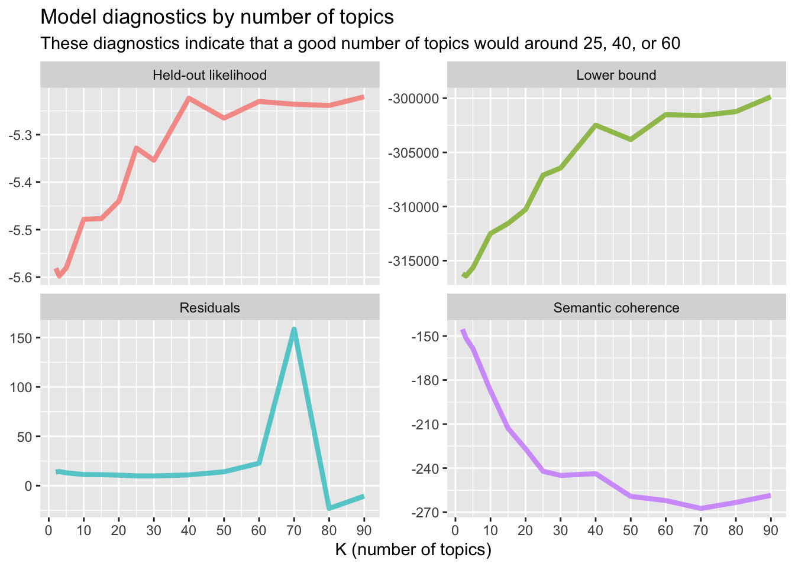
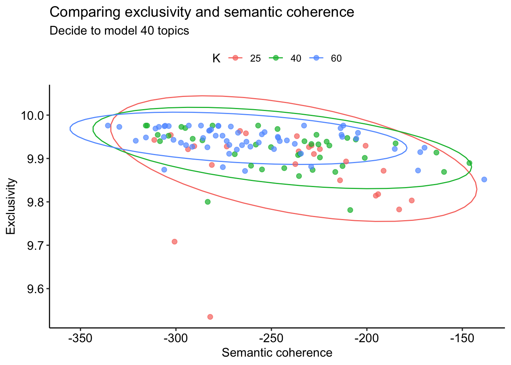
Most common topics
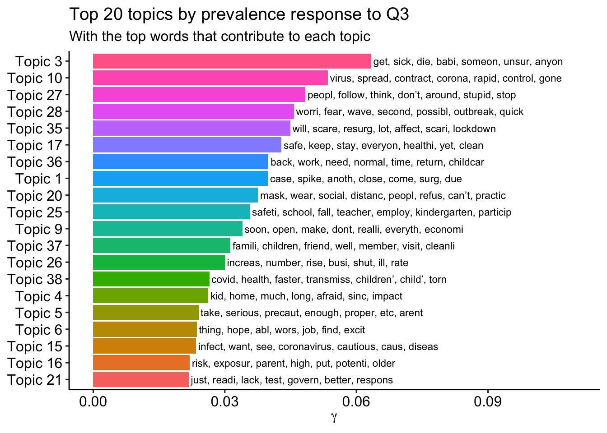
Identify topics
All topics
## Topic 1 Top Words:
## Highest Prob: case, spike, anoth, close, come, surg, due
## FREX: spike, anoth, come, surg, posit, case, gonna
## Lift: aris, prior, setback, come, spike, surg, anoth
## Score: case, spike, anoth, surg, close, come, posit
## Topic 2 Top Words:
## Highest Prob: que, miedo, salud, las, gent, todo, mas
## FREX: gent, mas, por, hay, persona, riesgo, mucho
## Lift: brote, contagiarm, haber, hayan, muy, necesaria, actividad
## Score: que, miedo, las, salud, gent, todo, mas
## Topic 3 Top Words:
## Highest Prob: get, sick, die, babi, someon, unsur, anyon
## FREX: get, sick, insur, babi, die, reclos, girl
## Lift: girl, unborn, babi, brine, get, insur, reclos
## Score: get, sick, die, babi, someon, unsur, check
## Topic 4 Top Words:
## Highest Prob: kid, home, much, long, afraid, sinc, impact
## FREX: kid, home, long, noth, pregnant, much, camp
## Lift: noth, camp, coop, home, kid, paranoia, toll
## Score: kid, home, long, much, afraid, sinc, last
## Topic 5 Top Words:
## Highest Prob: take, serious, precaut, enough, proper, etc, arent
## FREX: take, serious, precaut, proper, arent, recommend, restrict
## Lift: defiant, dilig, drop, entertain, outing, necessari, serious
## Score: take, serious, precaut, enough, proper, aren’t, recommend
## Topic 6 Top Words:
## Highest Prob: thing, hope, abl, wors, job, find, excit
## FREX: thing, hope, wors, job, find, excit, abl
## Lift: abl, accomplish, flatten, hope, job, thing, excit
## Score: thing, hope, abl, job, wors, find, excit
## Topic 7 Top Words:
## Highest Prob: covid-, contact, avoid, issu, result, patient, higher
## FREX: contact, avoid, issu, result, patient, complet, complic
## Lift: avoid, challeng, complet, contact, divis, drastic, flare
## Score: covid-, avoid, result, contact, issu, patient, higher
## Topic 8 Top Words:
## Highest Prob: reopen, communiti, place, way, never, prevent, set
## FREX: reopen, communiti, way, prevent, rush, phase, place
## Lift: complianc, dirti, vari, reopen, absolut, classroom, client
## Score: reopen, communiti, place, way, never, prevent, set
## Topic 9 Top Words:
## Highest Prob: soon, open, make, dont, realli, everyth, economi
## FREX: soon, open, realli, everyth, economi, sure, anxious
## Lift: coupl, normalci, open, point, anxious, soon, alarm
## Score: soon, open, make, dont, realli, everyth, economi
## Topic 10 Top Words:
## Highest Prob: virus, spread, contract, corona, rapid, control, gone
## FREX: virus, spread, contract, corona, rapid, unknown, mutat
## Lift: exponenti, rapid, reemerg, resurfac, spread, wide, wildfir
## Score: virus, spread, contract, corona, rapid, control, pass
## Topic 11 Top Words:
## Highest Prob: still, expos, nervous, earli, bad, idea, happi
## FREX: still, expos, nervous, earli, happi, lose, lock
## Lift: earli, happi, intervent, larger, lock, sickdi, sky
## Score: still, expos, nervous, earli, happi, bad, idea
## Topic 12 Top Words:
## Highest Prob: live, re-open, life, may, chang, differ, littl
## FREX: live, life, may, differ, isol, togeth, pleas
## Lift: aggress, cold, divid, forev, hotspot, hug, improv
## Score: live, life, re-open, chang, pleas, differ, may
## Topic 13 Top Words:
## Highest Prob: wont, especi, wait, cant, store, shop, restaur
## FREX: wont, especi, store, shop, restaur, groceri, governor
## Lift: boy, dinner, doctor, event, governor, groceri, instead
## Score: wont, especi, wait, store, shop, groceri, eat
## Topic 14 Top Words:
## Highest Prob: can, child, good, comfort, interact, give, level
## FREX: can, child, good, comfort, give, level, thank
## Lift: aliv, child, cloth, comfort, concret, corpor, cri
## Score: can, child, good, comfort, interact, give, level
## Topic 15 Top Words:
## Highest Prob: infect, want, see, coronavirus, cautious, caus, diseas
## FREX: infect, see, cautious, remain, closur, season, caus
## Lift: closur, easier, fallwint, reactiv, spanish, cautious, infect
## Score: infect, want, see, coronavirus, cautious, caus, diseas
## Topic 16 Top Words:
## Highest Prob: risk, exposur, parent, high, put, potenti, older
## FREX: risk, exposur, parent, high, potenti, older, condit
## Lift: categori, pose, pre-exist, potenti, appreci, claim, condit
## Score: risk, exposur, parent, high, put, older, potenti
## Topic 17 Top Words:
## Highest Prob: safe, keep, stay, everyon, healthi, yet, clean
## FREX: safe, keep, stay, everyon, healthi, gross, clean
## Lift: gross, healthi, keep, everyon, stay, disinfect, safe
## Score: safe, keep, stay, healthi, everyon, yet, clean
## Topic 18 Top Words:
## Highest Prob: contagio, del, caso, los, más, coronavirus, aumento
## FREX: contagio, del, repercuss, aumenten, estan, evitar, tener
## Lift: manten, -law, aumentando, aumenten, contagio, estan, evitar
## Score: contagio, del, caso, los, más, aumento, evitar
## Topic 19 Top Words:
## Highest Prob: like, new, guidelin, whether, look, actual, ever
## FREX: new, whether, look, actual, ever, next, wonder
## Lift: “normal”, actual, alot, appropri, compani, desir, ever
## Score: like, new, guidelin, look, whether, ever, actual
## Topic 20 Top Words:
## Highest Prob: mask, wear, social, distanc, peopl, refus, can’t
## FREX: mask, wear, distanc, refus, can’t, practic, hygien
## Lift: agre, compli, asshol, can’t, compassion, damn, disregard
## Score: mask, wear, distanc, social, refus, peopl, can’t
## Topic 21 Top Words:
## Highest Prob: just, readi, lack, test, govern, better, respons
## FREX: readi, test, govern, respons, understand, smart, choic
## Lift: fail, sacrific, bear, burden, choic, closer, communal
## Score: just, readi, lack, test, govern, respons, let
## Topic 22 Top Words:
## Highest Prob: also, without, move, ’re, mental, less, act
## FREX: also, without, move, ’re, mental, less, act
## Lift: ’re, damag, experienc, far, hurt, inadequ, move
## Score: also, without, move, mental, support, act, ’re
## Topic 23 Top Words:
## Highest Prob: care, rule, help, might, anymor, idiot, handl
## FREX: care, rule, help, anymor, handl, fact, resourc
## Lift: process, specif, traffic, abid, anymor, care, consequ
## Score: care, rule, might, help, idiot, anymor, fact
## Topic 24 Top Words:
## Highest Prob: know, now, public, seem, pandem, right, day
## FREX: seem, germ, hand, wash, mandat, begin, adher
## Lift: cavali, confus, fake, media, paranoid, stabil, statewid
## Score: now, know, seem, right, public, germ, hand
## Topic 25 Top Words:
## Highest Prob: safeti, school, fall, teacher, employ, kindergarten, particip
## FREX: safeti, school, fall, teacher, particip, student, staff
## Lift: birthday, particip, research, status, student, suppli, fall
## Score: safeti, school, fall, teacher, employ, student, particip
## Topic 26 Top Words:
## Highest Prob: increas, number, rise, busi, shut, ill, rate
## FREX: increas, number, rise, busi, shut, ill, rate
## Lift: confirm, doubl, number, rise, shut, busi, rate
## Score: increas, number, rise, rate, shut, busi, ill
## Topic 27 Top Words:
## Highest Prob: peopl, follow, think, don’t, around, stupid, stop
## FREX: follow, stupid, mind, around, maintain, think, peopl
## Lift: green, guard, mind, misunderstand, symptomat, follow, conspiraci
## Score: peopl, follow, think, don’t, around, stupid, mind
## Topic 28 Top Words:
## Highest Prob: worri, fear, wave, second, possibl, outbreak, quick
## FREX: fear, wave, second, worri, contagion, joy, restart
## Lift: fear, restart, second, wave, contagion, devast, joy
## Score: wave, second, fear, worri, outbreak, possibl, quick
## Topic 29 Top Words:
## Highest Prob: los, react, human, call, shouldn’t, preocupacion, optim
## FREX: react, human, call, shouldn’t, optim, preocupa, polic
## Lift: polic, strain, autoimmun, optim, preocupa, relationship, renta
## Score: los, preocupacion, human, react, call, preocupa, shouldn’t
## Topic 30 Top Words:
## Highest Prob: son, hospit, husband, year, old, system, immun
## FREX: hospit, husband, year, old, system, immun, overwhelm
## Lift: associ, asthmat, autism, debilit, eas, motiv, qualiti
## Score: husband, hospit, son, system, year, immun, old
## Topic 31 Top Words:
## Highest Prob: concern, happen, start, alreadi, fast, vaccin, careless
## FREX: concern, happen, start, fast, vaccin, careless, danger
## Lift: big, careless, danger, concern, ensur, fast, gave
## Score: concern, happen, start, fast, vaccin, alreadi, careless
## Topic 32 Top Words:
## Highest Prob: escuela, poder, las, para, volver, medida, como
## FREX: escuela, poder, volver, como, seguridad, familia, salir
## Lift: preocupación, prevención, sin, amistad, apertura, contagiars, cuarentena
## Score: poder, las, escuela, para, volver, medida, como
## Topic 33 Top Words:
## Highest Prob: catch, daughter, protect, death, measur, anxieti, vulner
## FREX: catch, daughter, protect, death, measur, anxieti, vulner
## Lift: appli, breath, catch, effect, elder, wast, young
## Score: catch, protect, daughter, measur, death, vulner, anxieti
## Topic 34 Top Words:
## Highest Prob: mani, other, one, use, won’t, love, respect
## FREX: mani, other, love, doesn’t, asymptomat, sens, consider
## Lift: asymptot, boundari, haircut, insan, mommi, mouth, presid
## Score: mani, other, one, love, won’t, use, sens
## Topic 35 Top Words:
## Highest Prob: will, scare, resurg, lot, affect, scari, lockdown
## FREX: scare, resurg, will, pop, creat, respond, homeless
## Lift: respond, creat, homeless, scare, pop, secondari, resurg
## Score: will, scare, resurg, lot, affect, scari, lockdown
## Topic 36 Top Words:
## Highest Prob: back, work, need, normal, time, return, childcar
## FREX: back, work, childcar, daycar, money, afford, end
## Lift: afford, back, card, childcar, convinc, daycar, flow
## Score: back, work, normal, need, time, childcar, return
## Topic 37 Top Words:
## Highest Prob: famili, children, friend, well, member, visit, cleanli
## FREX: famili, children, friend, member, cleanli, grandpar, extend
## Lift: children, famili, member, brother, cleanli, disabl, extend
## Score: famili, children, friend, member, well, visit, cleanli
## Topic 38 Top Words:
## Highest Prob: covid, health, faster, transmiss, children’, child’, torn
## FREX: covid, health, child’, faster, transmiss, recurr, torn
## Lift: recurr, covid, health, child’, torn, faster, transmiss
## Score: covid, health, faster, child’, transmiss, children’, everyone’
## Topic 39 Top Words:
## Highest Prob: feel, like, unsaf, person, behavior, ignor, great
## FREX: feel, unsaf, behavior, ignor, threat, daili, harder
## Lift: carri, fire, hasn’t, pre-pandem, question, wild, abrió
## Score: feel, unsaf, behavior, like, person, great, ignor
## Topic 40 Top Words:
## Highest Prob: even, continu, becom, longer, crazi, will, worri
## FREX: even, becom, continu, crazi, longer, homeschool, unnecessarili
## Lift: even, becom, crazi, continu, longer, will, itll
## Score: even, continu, becom, longer, crazi, will, worri2 - More infections (Sp)
## Topic 2 Top Words:
## Highest Prob: que, miedo, salud, las, gent, todo, mas
## FREX: gent, mas, por, hay, persona, riesgo, mucho
## Lift: brote, contagiarm, haber, hayan, muy, necesaria, actividad
## Score: que, miedo, las, salud, gent, todo, mas##
## Topic 2:
## Pues la muerte de todos los diabeticos que son muchos Mexicanos. Tambien todos los que tienen cancer, asma y la gente mayor y otros con problemas de salud y las minorias. Esos que trabajan en persona van a morir
## Que es muy apresurado, que se deben seguir las reglas de distanciamiento social de una forma más estricta.
## Que ya la mayoria esta actuando como que no pasa nada y ba haber mas afectados y ami me preocupan mis hijos ya que el menor de 4 años es muy enfermiso y le saben dar conbulsiones y se pone muy grabe y me atrerra pensar que estemos expuestos al birus.
## Que las personas no se cuidan por completo y terminan afectando a otras personas que si tratan de estar a salvo en sus hogares y actividades.
## Que van a ver más infectados. Apenas abrieron varios lugares y ya hay un aumento de infectados. Nuestra ciudad volvió a cerrar varios negocios3 - Self or loved ones getting sick
## Topic 3 Top Words:
## Highest Prob: get, sick, die, babi, someon, unsur, anyon
## FREX: get, sick, insur, babi, die, reclos, girl
## Lift: girl, unborn, babi, brine, get, insur, reclos
## Score: get, sick, die, babi, someon, unsur, check##
## Topic 3:
## Getting sick or watching widespread sickness and anxiety about getting sick
## Getting sick or someone I love getting sick
## Getting sick, getting my mom sick, not homeschooling
## My kids getting sick, my baby getting sick.
## To get sick or someone we live getting sick10 - Virus spreading
## Topic 10 Top Words:
## Highest Prob: virus, spread, contract, corona, rapid, control, gone
## FREX: virus, spread, contract, corona, rapid, unknown, mutat
## Lift: exponenti, rapid, reemerg, resurfac, spread, wide, wildfir
## Score: virus, spread, contract, corona, rapid, control, pass##
## Topic 10:
## Rapid spread of the virus
## fair of corona virus spread
## Fear of contracting the virus and spreading to my family as I'm the sole provider and errand runner.
## Hopefully that the virus is gone and the spread discontinues.
## Fear of the virus spreading at rapid pace again.20 - Others not wearing masks
## Topic 20 Top Words:
## Highest Prob: mask, wear, social, distanc, peopl, refus, can’t
## FREX: mask, wear, distanc, refus, can’t, practic, hygien
## Lift: agre, compli, asshol, can’t, compassion, damn, disregard
## Score: mask, wear, distanc, social, refus, peopl, can’t##
## Topic 20:
## people not wearing masks, gloves, or practicing social diatancing
## people not wearing masks, restaurants not enforcing masks and social distancing
## People complying with social distancing and mask wearing.
## No social distancing, disregard for hygiene practices
## Social distancing and mask wearing25 - School safety
## Topic 25 Top Words:
## Highest Prob: safeti, school, fall, teacher, employ, kindergarten, particip
## FREX: safeti, school, fall, teacher, particip, student, staff
## Lift: birthday, particip, research, status, student, suppli, fall
## Score: safeti, school, fall, teacher, employ, student, particip##
## Topic 25:
## The safety of teachers and school staff.
## Safety and what would happen in a virtual school environment.
## Health safety for myself (public school teacher) and daughter (entering kindergarten).
## The safety of all. I’m not worried about a school or teachers safety with students, but all the other people each child interacts with concern me. People overall are not being that precautious
## Health safety, school safety.27 - Other not complying
## Topic 27 Top Words:
## Highest Prob: peopl, follow, think, don’t, around, stupid, stop
## FREX: follow, stupid, mind, around, maintain, think, peopl
## Lift: green, guard, mind, misunderstand, symptomat, follow, conspiraci
## Score: peopl, follow, think, don’t, around, stupid, mind##
## Topic 27:
## I am worried about people who think this was all a hoax or who don’t think they need to follow the rules
## That people are not mindful and they don’t follow the social distancing instructions
## What is basically on my mind is on how to maintain social distancing and how to
## Covid-19 being passed around again and again. People don’t respect each other by wearing their mask.
## People that think the concerns are unnecessary. People not following recommendations to keep us safe.28 - Second wave
## Topic 28 Top Words:
## Highest Prob: worri, fear, wave, second, possibl, outbreak, quick
## FREX: fear, wave, second, worri, contagion, joy, restart
## Lift: fear, restart, second, wave, contagion, devast, joy
## Score: wave, second, fear, worri, outbreak, possibl, quick##
## Topic 28:
## Fear of the second wave and having to restart shelter-in-place from the start all over again.
## The possibility of a second, more devastating second wave of infection.
## Fear of a second wave
## Worry of contagion and outbreak
## Second wave outbreak32 - Is this the new normal (Sp)
## Topic 32 Top Words:
## Highest Prob: escuela, poder, las, para, volver, medida, como
## FREX: escuela, poder, volver, como, seguridad, familia, salir
## Lift: preocupación, prevención, sin, amistad, apertura, contagiars, cuarentena
## Score: poder, las, escuela, para, volver, medida, como##
## Topic 32:
## Pues pensar en todas las medidas preventivas para una nueva normalidad
## Poder estar tranquilos y visitar a nuestras familias, mandar a la escuela a mi niño sin tanta preocupación
## Saber como poder controlar esta situación con las medidas de prevención
## Poder encontrar cuidado infantil seguro para Poder trabajar.
## En como sería la nueva normalidad y las estrategias para no contagiarseTopics by demographic
Black/African American
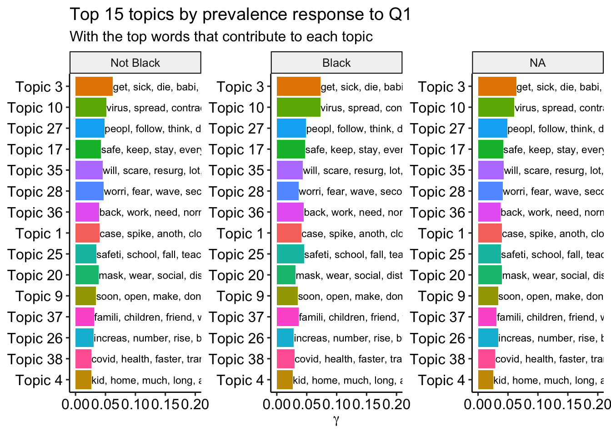
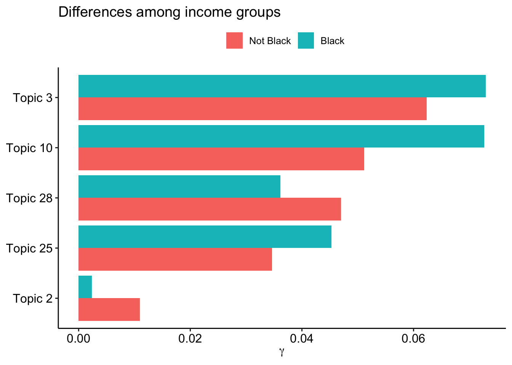
Poverty
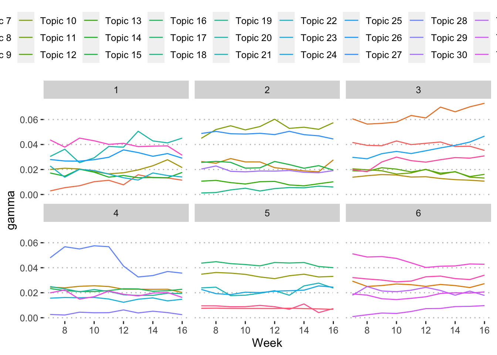
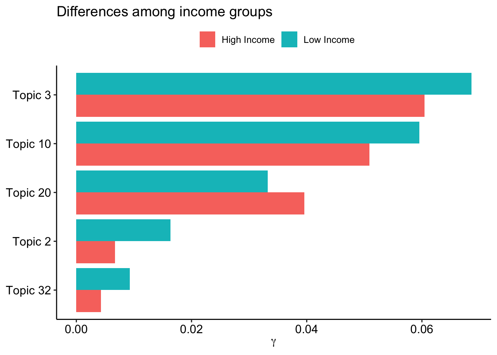
Topics by week
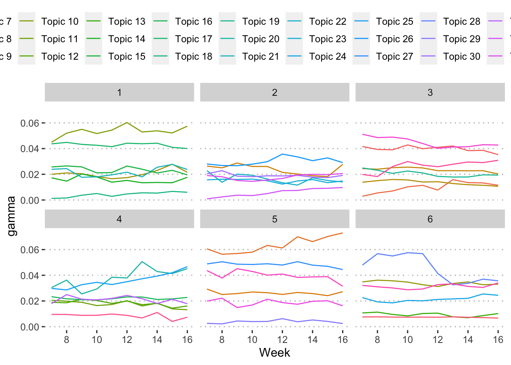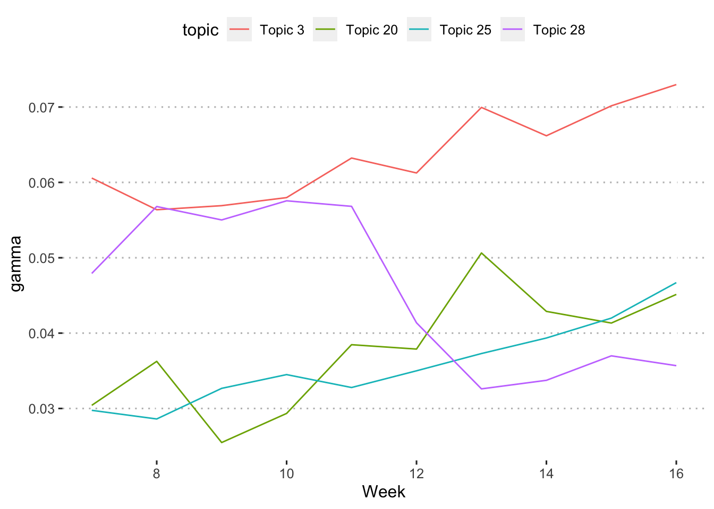
Topic clusters
Topic structure
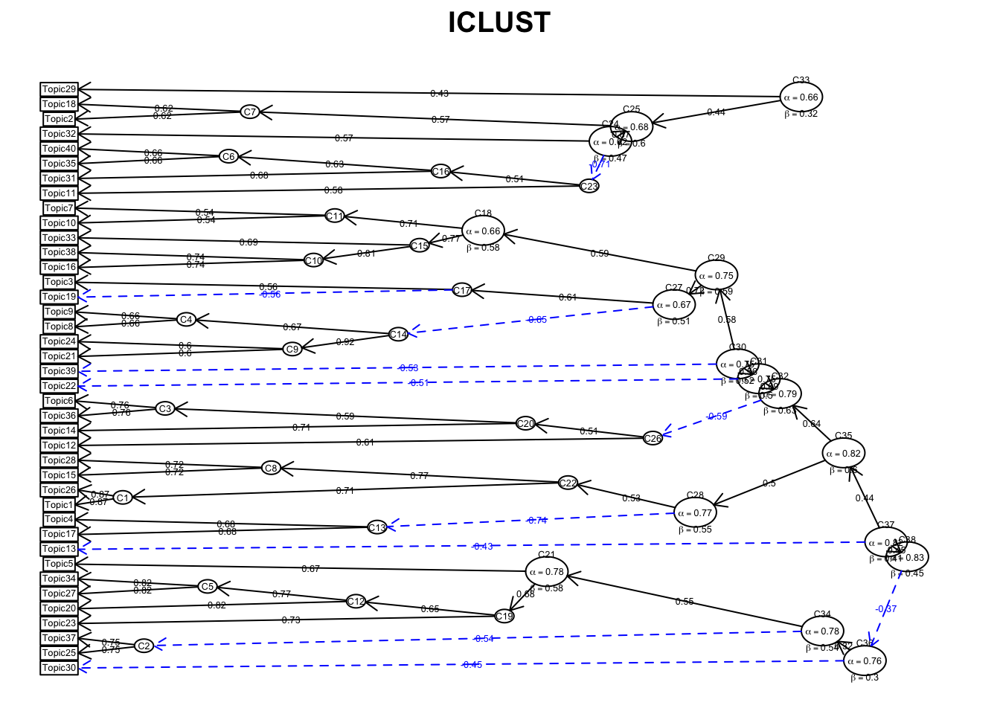
## ICLUST (Item Cluster Analysis)
## Call: iclust(r.mat = topics_only_wide)
##
## Purified Alpha:
## C38 C33
## 0.83 0.66
##
## G6* reliability:
## C38 C33
## 0.77 0.58
##
## Original Beta:
## C38 C33
## 0.45 0.32
##
## Cluster size:
## C38 C33
## 32 8
##
## Item by Cluster Structure matrix:
## O P C38 C33
## Topic1 C38 C38 0.43 -0.17
## Topic10 C38 C38 0.54 -0.04
## Topic11 C33 C33 0.02 -0.48
## Topic12 C38 C38 -0.34 -0.09
## Topic13 C38 C38 -0.26 -0.02
## Topic14 C38 C38 -0.36 -0.08
## Topic15 C38 C38 0.43 -0.30
## Topic16 C38 C38 0.50 -0.04
## Topic17 C38 C38 -0.32 -0.01
## Topic18 C33 C33 0.12 0.52
## Topic19 C38 C38 -0.42 -0.22
## Topic2 C33 C33 0.12 0.64
## Topic20 C38 C38 -0.41 0.11
## Topic21 C38 C38 -0.48 -0.06
## Topic22 C38 C38 -0.30 -0.05
## Topic23 C38 C38 -0.43 -0.10
## Topic24 C38 C38 -0.49 -0.06
## Topic25 C38 C38 0.16 -0.06
## Topic26 C38 C38 0.37 -0.17
## Topic27 C38 C38 -0.54 -0.13
## Topic28 C38 C38 0.55 -0.25
## Topic29 C33 C33 0.08 0.38
## Topic3 C38 C38 0.26 0.02
## Topic30 C38 C38 0.18 0.00
## Topic31 C33 C33 0.09 -0.50
## Topic32 C33 C33 0.09 0.51
## Topic33 C38 C38 0.35 -0.03
## Topic34 C38 C38 -0.43 -0.10
## Topic35 C33 C33 0.06 -0.58
## Topic36 C38 C38 -0.29 -0.09
## Topic37 C38 C38 0.42 0.00
## Topic38 C38 C38 0.73 -0.02
## Topic39 C38 C38 -0.35 -0.08
## Topic4 C38 C38 -0.31 -0.24
## Topic40 C33 C33 -0.10 -0.75
## Topic5 C38 C38 -0.35 0.01
## Topic6 C38 C38 -0.43 -0.31
## Topic7 C38 C38 0.41 -0.08
## Topic8 C38 C38 -0.37 -0.26
## Topic9 C38 C38 -0.55 -0.33
##
## With eigenvalues of:
## C38 C33
## 5.5 3.1
##
## Purified scale intercorrelations
## reliabilities on diagonal
## correlations corrected for attenuation above diagonal:
## C38 C33
## C38 0.83 0.10
## C33 0.08 0.66
##
## Cluster fit = 0.42 Pattern fit = 0.77 RMSR = 0.11Topic structure (Black respondants only)
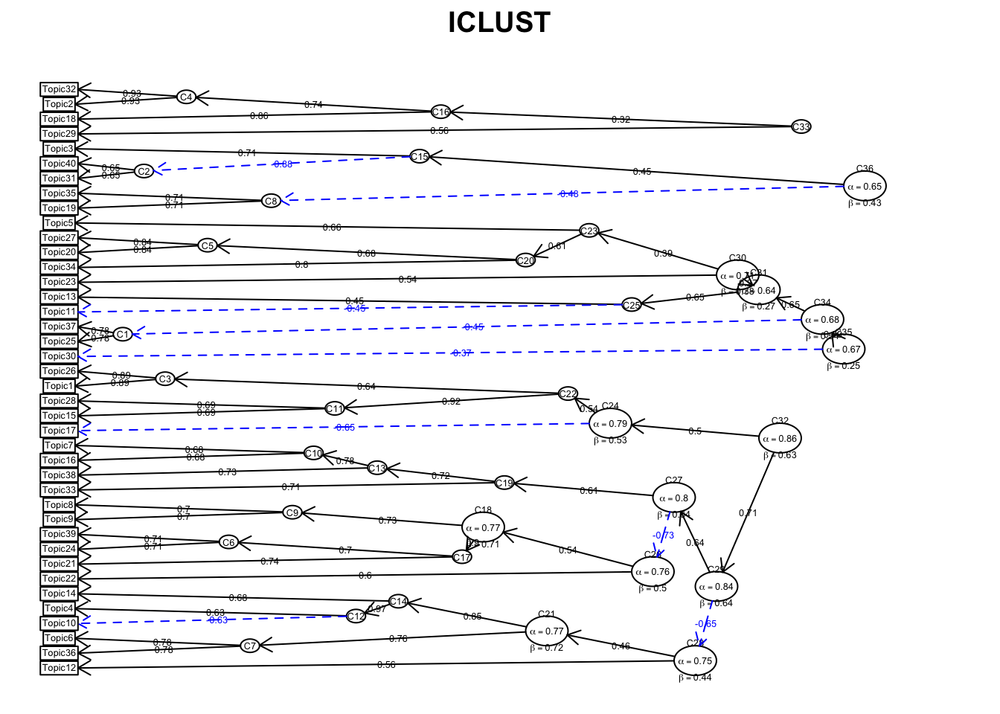
## ICLUST (Item Cluster Analysis)
## Call: iclust(r.mat = topics_only_wide)
##
## Purified Alpha:
## C33 C34 C27 C18 C23 V22
## 0.86 0.77 0.78 0.71 0.22 1.00
##
## G6* reliability:
## C33 C34 C27 C18 C23 V22
## 0.81 0.92 0.85 0.77 0.11 1.00
##
## Original Beta:
## C33 C34 C27 C18 C23 V22
## 0.83 0.52 0.71 0.58 0.22 NA
##
## Cluster size:
## C33 C34 C27 C18 C23 V22
## 20 8 5 4 2 1
##
## Item by Cluster Structure matrix:
## O P C33 C34 C27 C18 C23 V22
## Topic1 C27 C27 -0.16 -0.24 0.80 0.20 -0.02 -0.01
## Topic10 C34 C34 -0.39 -0.65 0.24 -0.02 0.21 0.05
## Topic11 C23 C23 0.01 0.00 0.03 0.11 0.75 -0.04
## Topic12 C34 C34 0.26 0.57 -0.05 0.16 -0.13 -0.06
## Topic13 C23 C23 0.17 0.15 -0.05 0.01 -0.75 -0.03
## Topic14 C34 C34 0.13 0.65 -0.46 0.03 -0.03 -0.05
## Topic15 C27 C27 -0.18 -0.22 0.77 0.12 0.08 -0.03
## Topic16 C33 C33 -0.59 -0.28 0.28 -0.05 0.07 -0.01
## Topic17 C27 C27 0.17 0.17 -0.58 -0.03 -0.07 0.05
## Topic18 C33 C33 -0.60 -0.36 0.14 -0.11 -0.01 0.17
## Topic19 C34 C34 0.25 0.56 -0.17 0.20 -0.17 -0.04
## Topic2 C33 C33 -0.65 -0.39 0.16 -0.12 -0.02 0.31
## Topic20 C33 C33 0.48 -0.15 -0.21 -0.07 -0.22 -0.04
## Topic21 C33 C33 0.54 0.18 -0.21 0.20 -0.16 -0.07
## Topic22 C33 C33 0.33 0.29 -0.14 0.22 -0.12 -0.03
## Topic23 C33 C33 0.46 0.03 -0.11 0.10 -0.16 -0.01
## Topic24 C33 C33 0.53 0.20 -0.18 0.26 -0.19 -0.07
## Topic25 C33 C33 -0.48 0.21 -0.25 0.12 -0.06 0.04
## Topic26 C27 C27 -0.14 -0.21 0.80 0.25 -0.05 -0.02
## Topic27 C33 C33 0.69 -0.11 -0.27 0.16 -0.06 -0.06
## Topic28 C27 C27 -0.32 -0.29 0.71 0.02 0.11 -0.01
## Topic29 V22 V22 -0.12 -0.09 -0.03 -0.01 -0.01 1.00
## Topic3 C18 C18 -0.15 -0.07 -0.09 -0.72 0.14 -0.04
## Topic30 C33 C33 -0.27 0.11 0.01 -0.12 -0.04 -0.04
## Topic31 C18 C18 -0.04 -0.05 0.43 0.73 0.06 0.00
## Topic32 C33 C33 -0.62 -0.30 0.14 -0.16 -0.07 0.16
## Topic33 C33 C33 -0.51 -0.30 -0.02 0.04 0.06 0.02
## Topic34 C33 C33 0.53 -0.06 -0.15 -0.03 -0.08 -0.07
## Topic35 C34 C34 -0.03 0.50 0.21 0.20 0.02 -0.05
## Topic36 C34 C34 0.06 0.64 -0.22 0.01 -0.02 -0.04
## Topic37 C33 C33 -0.62 -0.01 -0.18 -0.32 0.06 0.02
## Topic38 C33 C33 -0.79 -0.32 0.33 0.02 0.02 0.06
## Topic39 C33 C33 0.32 0.11 -0.07 0.10 -0.02 -0.04
## Topic4 C34 C34 0.04 0.66 -0.38 0.03 -0.03 -0.05
## Topic40 C18 C18 0.13 0.12 0.08 0.74 0.20 -0.02
## Topic5 C33 C33 0.41 0.01 -0.22 0.10 -0.08 -0.05
## Topic6 C34 C34 0.28 0.69 -0.23 0.03 0.10 -0.08
## Topic7 C33 C33 -0.41 -0.34 0.35 0.08 0.10 0.00
## Topic8 C33 C18 0.34 0.26 -0.11 0.73 0.07 -0.04
## Topic9 C33 C33 0.52 0.38 -0.18 0.42 0.14 -0.07
##
## With eigenvalues of:
## C33 C34 C27 C18 C23 V22
## 5.9 3.8 3.6 2.6 1.4 1.1
##
## Purified scale intercorrelations
## reliabilities on diagonal
## correlations corrected for attenuation above diagonal:
## C33 C34 C27 C18 C23 V22
## C33 0.86 0.34 -0.32 0.26 -0.24 -0.13
## C34 0.28 0.77 -0.40 0.19 -0.23 -0.10
## C27 -0.26 -0.31 0.78 0.23 0.12 -0.04
## C18 0.20 0.14 0.17 0.71 0.16 -0.01
## C23 -0.10 -0.09 0.05 0.06 0.22 -0.01
## V22 -0.12 -0.09 -0.03 -0.01 -0.01 1.00
##
## Cluster fit = 0.6 Pattern fit = 0.92 RMSR = 0.08Question 4
What concerns do you have about your place of employment and/or your child’s child care setting re-opening?
How many topics?
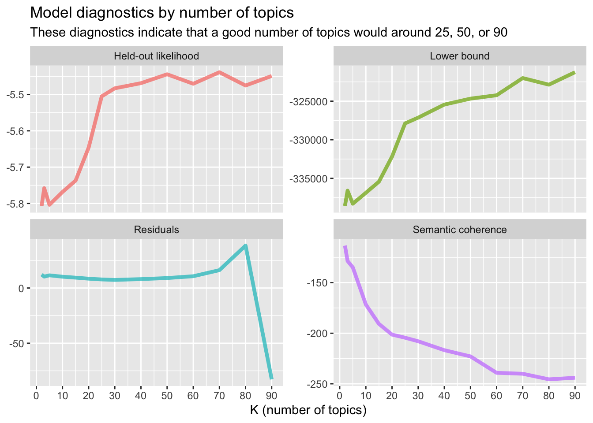
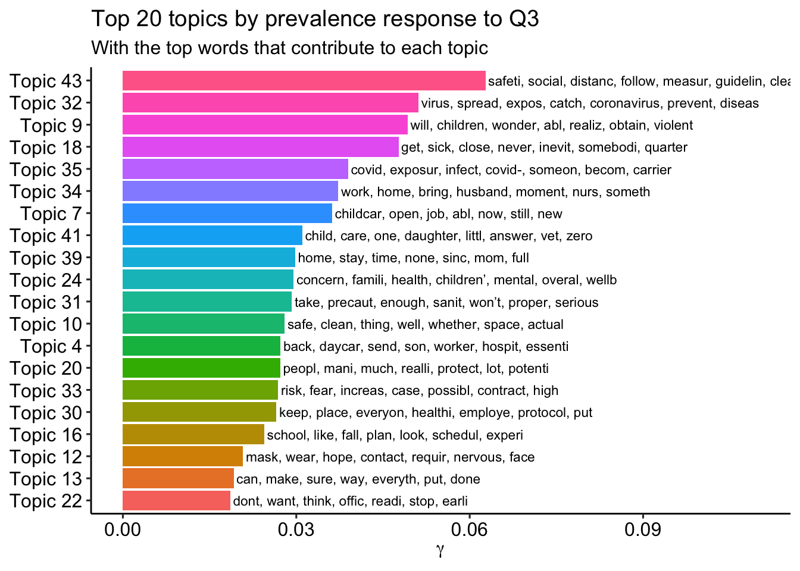
Most common topics
Identify topics
All topics
## Topic 1 Top Words:
## Highest Prob: ill, afraid, scare, might, lose, pass, patient
## FREX: ill, afraid, scare, might, lose, pass, patient
## Lift: afraid, pass, patient, rona, scare, strong, cdcs
## Score: ill, afraid, scare, might, lose, pass, patient
## Topic 2 Top Words:
## Highest Prob: year, start, old, daughter, hard, understand, remot
## FREX: year, start, old, kindergarten, suppos, youngest, understand
## Lift: crisi, daughter’, everywher, feet, hardship, heartbroken, indefinit
## Score: year, start, old, kindergarten, understand, hard, remot
## Topic 3 Top Words:
## Highest Prob: babi, affect, let, play, forc, anxieti, extrem
## FREX: babi, affect, let, play, extrem, anxious, matern
## Lift: beyond, brand, breastfeed, decemb, extrem, factori, feder
## Score: babi, affect, play, let, forc, anxieti, extrem
## Topic 4 Top Words:
## Highest Prob: back, daycar, send, son, worker, hospit, essenti
## FREX: daycar, back, essenti, send, worker, hes, laid
## Lift: telepractic, essenti, daycar, hes, hubbi, busier, back
## Score: back, daycar, send, son, hospit, essenti, worker
## Topic 5 Top Words:
## Highest Prob: contagio, seguridad, posibl, posibilidad, por, algún, protocolo
## FREX: contagio, seguridad, posibl, posibilidad, algún, protocolo, sanidad
## Lift: posibilidad, algún, contagio, posibl, protocolo, seguridad, sanidad
## Score: contagio, seguridad, posibl, posibilidad, por, algún, protocolo
## Topic 6 Top Words:
## Highest Prob: may, chang, pandem, normal, grandpar, resum, life
## FREX: may, chang, normal, grandpar, pandem, drastic, somewhat
## Lift: drastic, somewhat, chang, extens, grandpar, lay, may
## Score: may, chang, normal, pandem, grandpar, resum, life
## Topic 7 Top Words:
## Highest Prob: childcar, open, job, abl, now, still, new
## FREX: open, job, childcar, remain, now, whole, abl
## Lift: open, remain, job, stabl, suck, whole, childcar
## Score: childcar, open, job, abl, now, new, still
## Topic 8 Top Words:
## Highest Prob: los, niño, que, van, limpieza, evitar, como
## FREX: limpieza, mis, los, cuidar, evitar, niño, higien
## Lift: cerca, contagiars, cuidar, favor, grave, higien, jugar
## Score: los, niño, que, van, limpieza, evitar, como
## Topic 9 Top Words:
## Highest Prob: will, children, wonder, abl, realiz, obtain, violent
## FREX: will, wonder, children, violent, attach, dramat, numer
## Lift: wonder, will, children, abl, realiz, violent, obtain
## Score: will, children, wonder, abl, realiz, violent, obtain
## Topic 10 Top Words:
## Highest Prob: safe, clean, thing, well, whether, space, actual
## FREX: clean, safe, well, truli, thing, gear, whether
## Lift: thorough, clean, gear, safe, wether, truli, kidsfamili
## Score: safe, clean, thing, well, whether, actual, space
## Topic 11 Top Words:
## Highest Prob: other, leav, necessari, communiti, live, die, workplac
## FREX: other, communiti, workplac, chanc, anyon, necessari, die
## Lift: greater, action, advis, bond, closest, fight, global
## Score: other, live, leav, necessari, arent, communiti, die
## Topic 12 Top Words:
## Highest Prob: mask, wear, hope, contact, requir, nervous, face
## FREX: mask, wear, hope, requir, nervous, togeth, custom
## Lift: alot, choic, custom, hope, seat, worn, nervous
## Score: mask, wear, hope, requir, nervous, contact, face
## Topic 13 Top Words:
## Highest Prob: can, make, sure, way, everyth, put, done
## FREX: can, make, sure, everyth, done, best, way
## Lift: reckless, can, make, meant, smart, sure, wnt
## Score: can, sure, make, everyth, way, done, there
## Topic 14 Top Words:
## Highest Prob: use, learn, person, good, onlin, caus, physic
## FREX: use, learn, person, good, onlin, first, virtual
## Lift: strategi, -campus, consult, difficulti, discuss, disinfect, first
## Score: learn, use, good, onlin, person, virtual, physic
## Topic 15 Top Words:
## Highest Prob: return, germ, attend, allow, facil, ’ll, expect
## FREX: germ, attend, allow, facil, ’ll, line, wors
## Lift: allow, elig, lift, necess, pto, sb-, session
## Score: return, germ, facil, allow, attend, ’ll, expect
## Topic 16 Top Words:
## Highest Prob: school, like, fall, plan, look, schedul, experi
## FREX: look, school, elementari, experi, fall, function, haven’t
## Lift: career, elementari, function, haven’t, restart, uncertain, zoom
## Score: school, fall, like, look, plan, schedul, experi
## Topic 17 Top Words:
## Highest Prob: just, day, even, small, avail, seem, everi
## FREX: just, everi, day, small, avail, even, question
## Lift: arriv, day, encount, everi, just, match, met
## Score: just, day, even, avail, small, everi, seem
## Topic 18 Top Words:
## Highest Prob: get, sick, close, never, inevit, somebodi, quarter
## FREX: get, sick, close, never, inevit, quarter, somebodi
## Lift: sick, get, close, never, somebodi, inevit, quarter
## Score: get, sick, close, never, somebodi, inevit, quarter
## Topic 19 Top Words:
## Highest Prob: worri, preschool, child’, unpredict, boyfriend, postpon, simpli
## FREX: worri, unpredict, boyfriend, postpon, child’, preschool, simpli
## Lift: boyfriend, postpon, unpredict, worri, simpli, child’, preschool
## Score: worri, preschool, child’, unpredict, postpon, boyfriend, simpli
## Topic 20 Top Words:
## Highest Prob: peopl, mani, much, realli, protect, lot, potenti
## FREX: peopl, mani, realli, wash, crowd, irrespons, protect
## Lift: remind, realli, bubbl, conflict, crowd, fatigu, forget
## Score: peopl, mani, realli, much, protect, lot, hand
## Topic 21 Top Words:
## Highest Prob: parent, environ, test, shut, posit, member, give
## FREX: parent, shut, member, frequent, give, older, test
## Lift: caught, finish, frequent, parent, schooldaycar, member, shut
## Score: parent, environ, test, shut, posit, member, give
## Topic 22 Top Words:
## Highest Prob: dont, want, think, offic, readi, stop, earli
## FREX: dont, readi, stop, unsaf, quit, think, want
## Lift: dont, rush, solid, weekend, unsaf, blown, governor
## Score: dont, want, think, offic, readi, stop, ’ve
## Topic 23 Top Words:
## Highest Prob: teacher, student, alreadi, teach, stress, class, manag
## FREX: teacher, student, teach, class, size, camp, top
## Lift: bodi, connect, face--fac, music, slot, split, teacher
## Score: teacher, student, teach, class, alreadi, stress, summer
## Topic 24 Top Words:
## Highest Prob: concern, famili, health, children’, mental, overal, wellb
## FREX: children’, concern, health, wellb, famili, onto, babysat
## Lift: children’, onto, wellb, babysat, concern, health, everyone’
## Score: concern, health, famili, children’, mental, everyone’, overal
## Topic 25 Top Words:
## Highest Prob: due, staff, pay, outbreak, issu, howev, great
## FREX: due, issu, great, condit, general, sanitari, staff
## Lift: inflammatori, aspect, boy, capabl, condit, due, equiti
## Score: staff, due, pay, outbreak, issu, howev, condit
## Topic 26 Top Words:
## Highest Prob: employ, reopen, soon, appli, doesn’t, confid, isn’t
## FREX: employ, reopen, soon, appli, neither, anytim, ninguno
## Lift: alguna, anticip, anytim, appli, bind, chao, idk
## Score: employ, reopen, soon, appli, doesn’t, anytim, isn’t
## Topic 27 Top Words:
## Highest Prob: kid, ninguna, stringent, explain, dirti, sens, hate
## FREX: kid, stringent, explain, ninguna, dirti, nephew, weaken
## Lift: kid, explain, stringent, ninguna, dirti, sens, hate
## Score: kid, ninguna, stringent, dirti, explain, sens, hate
## Topic 28 Top Words:
## Highest Prob: que, real, escuela, todo, hijo, miedo, usar
## FREX: real, miedo, usar, contagien, tener, ser, casa
## Lift: ambient, año, así, contagiemo, controlar, cuando, cubreboca
## Score: que, todo, escuela, hijo, miedo, usar, seguro
## Topic 29 Top Words:
## Highest Prob: trust, limit, etc, handl, build, amount, support
## FREX: limit, etc, handl, share, activ, prepar, demand
## Lift: assur, common, corner, etc, handl, manner, phase
## Score: trust, limit, etc, share, build, handl, amount
## Topic 30 Top Words:
## Highest Prob: keep, place, everyon, healthi, employe, protocol, put
## FREX: keep, everyon, recommend, place, protocol, healthi, employe
## Lift: everyon, followedeffect, forev, habit, paramet, personnel, recommend
## Score: keep, place, healthi, everyon, protocol, employe, recommend
## Topic 31 Top Words:
## Highest Prob: take, precaut, enough, sanit, won’t, proper, serious
## FREX: take, precaut, enough, sanit, won’t, proper, serious
## Lift: execut, safeguard, enough, sanit, won’t, cash, compromis
## Score: precaut, take, enough, sanit, won’t, proper, serious
## Topic 32 Top Words:
## Highest Prob: virus, spread, expos, catch, coronavirus, prevent, diseas
## FREX: virus, spread, expos, catch, prevent, corona, coronavirus
## Lift: prevent, accident, catch, corona, expos, spread, unintent
## Score: virus, spread, expos, catch, prevent, coronavirus, corona
## Topic 33 Top Words:
## Highest Prob: risk, fear, increas, case, possibl, contract, high
## FREX: risk, fear, increas, case, possibl, contagion, spike
## Lift: contagion, fear, variabl, case, disord, increas, possibl
## Score: risk, fear, increas, contract, case, possibl, high
## Topic 34 Top Words:
## Highest Prob: work, home, bring, husband, moment, nurs, someth
## FREX: work, bring, husband, moment, nurs, home, homemak
## Lift: homemak, bring, work, intend, husband, moment, chosen
## Score: work, home, bring, husband, moment, nurs, later
## Topic 35 Top Words:
## Highest Prob: covid, exposur, infect, covid-, someon, becom, carrier
## FREX: covid, exposur, infect, carrier, relat, elder, brought
## Lift: asymptot, carrier, cure, covid, exposur, brought, elder
## Score: exposur, covid, infect, covid-, someon, becom, elder
## Topic 36 Top Words:
## Highest Prob: symptom, contagi, show, result, present, organ, still
## FREX: symptom, contagi, present, organ, appear, contagiarm, truth
## Lift: contagi, organ, suficientement, appear, bioseguridad, contagiarm, cuiden
## Score: symptom, contagi, show, contagiarm, present, suficientement, result
## Topic 37 Top Words:
## Highest Prob: come, current, yet, though, alway, state, far
## FREX: come, current, yet, far, unemploy, travel, restaur
## Lift: accommod, current, entertain, hotel, luckili, unemploy, ahead
## Score: come, current, yet, alway, travel, though, far
## Topic 38 Top Words:
## Highest Prob: center, continu, re-open, anoth, either, situat, nanni
## FREX: center, re-open, either, situat, nanni, hous, respons
## Lift: center, either, gap, loos, re-open, rehir, situat
## Score: center, continu, re-open, anoth, either, nanni, situat
## Topic 39 Top Words:
## Highest Prob: home, stay, time, none, sinc, mom, full
## FREX: stay, time, none, mom, full, forese, home
## Lift: patienc, full, mom, angri, contractor, exhaust, headstart
## Score: home, stay, none, time, mom, full, sinc
## Topic 40 Top Words:
## Highest Prob: long, busi, scari, effect, financi, impact, cut
## FREX: long, impact, compani, term, bad, period, surviv
## Lift: bad, compani, experienc, heard, long-term, pediatr, period
## Score: long, busi, scari, impact, effect, financi, term
## Topic 41 Top Words:
## Highest Prob: child, care, one, daughter, littl, answer, vet
## FREX: child, care, one, vet, zero, littl, daughter
## Lift: care, child, vet, zero, one, littl, resumpt
## Score: child, care, one, daughter, littl, vet, resumpt
## Topic 42 Top Words:
## Highest Prob: que, las, para, medida, cuidado, con, salud
## FREX: las, medida, cuidado, salud, infantil, cumplan, sea
## Lift: contagiar, espero, necesario, pandemia, prevención, puedan, realment
## Score: que, las, para, medida, cuidado, con, salud
## Topic 43 Top Words:
## Highest Prob: safeti, social, distanc, follow, measur, guidelin, cleanli
## FREX: safeti, distanc, measur, guidelin, cleanli, hygien, practic
## Lift: adher, frequenc, obtain, socialemot, track, distanc, measur
## Score: safeti, distanc, social, follow, measur, cleanli, guidelin
## Topic 44 Top Words:
## Highest Prob: don’t, know, feel, around, comfort, control, flexibl
## FREX: don’t, know, feel, around, comfort, aren’t, asthma
## Lift: aren’t, asthma, comfort, contain, don’t, dumb, errand
## Score: don’t, know, feel, comfort, around, flexibl, control
## Topic 45 Top Words:
## Highest Prob: public, number, difficult, polici, appropri, emot, develop
## FREX: public, number, difficult, emot, larg, rate, transit
## Lift: colleagu, covi, eas, hesit, hundr, mass, modif
## Score: public, number, appropri, emot, difficult, larg, polici
## Topic 46 Top Words:
## Highest Prob: applic, week, month, tri, doesnt, two, last
## FREX: applic, month, tri, doesnt, last, sahm, stay--hom
## Lift: formal, juggl, becam, earlier, effort, fire, month
## Score: applic, week, month, tri, doesnt, last, stay--hom
## Topic 47 Top Words:
## Highest Prob: provid, happen, lack, especi, educ, differ, ppe
## FREX: ppe, adult, refus, suppli, especi, easili, creat
## Lift: caution, enter, proactiv, seen, suppli, traumat, adult
## Score: happen, provid, educ, especi, lack, differ, ppe
## Topic 48 Top Words:
## Highest Prob: need, find, hour, help, afford, incom, restrict
## FREX: need, find, afford, cost, cautious, household, help
## Lift: cautious, childcareschool, divers, friday, minut, night, retail
## Score: need, find, hour, afford, help, incom, reduc
## Topic 49 Top Words:
## Highest Prob: wont, see, without, vaccin, cant, noth, longer
## FREX: wont, see, without, vaccin, noth, asymptomat, wait
## Lift: anyway, cup, elimin, facial, infecti, june, prematur
## Score: wont, see, vaccin, without, cant, noth, asymptomat
## Topic 50 Top Words:
## Highest Prob: also, set, can’t, telehealth, children, daughter, littl
## FREX: also, set, can’t, telehealth, worrisom, spring, total
## Lift: also, set, can’t, telehealth, littl, children, daughter
## Score: also, set, can’t, telehealth, children, daughter, littl4 - Essential workers worried about daycare
## Topic 4 Top Words:
## Highest Prob: back, daycar, send, son, worker, hospit, essenti
## FREX: daycar, back, essenti, send, worker, hes, laid
## Lift: telepractic, essenti, daycar, hes, hubbi, busier, back
## Score: back, daycar, send, son, hospit, essenti, worker##
## Topic 4:
## Where to send me children. Their daycare was at the VA hospital in my town and I’m not comfortable sending them back.
## Safety/exposure, worried daycare may not be open when I'm called back to work
## I am a essential worker and my child hasn't stopped going to daycare.
## I never want to go back to the office as I love telecommuting so being called back to the office will make me miserable. With telecommuting, we can watch our child at home without daycare.
##
## If those places do open back up, I am worried about us getting coronavirus.
## They have been open throughout the pandemic. My husband and I are both essential workers and are super thankful daycare has remained open.7 - Lost job
## Topic 7 Top Words:
## Highest Prob: childcar, open, job, abl, now, still, new
## FREX: open, job, childcar, remain, now, whole, abl
## Lift: open, remain, job, stabl, suck, whole, childcar
## Score: childcar, open, job, abl, now, new, still##
## Topic 7:
## Well I’ve lost my job but as far as childcare is concerned, I’m going to lose our spot at our local childcare center because I will not be able to afford or need the childcare. I’m worried that when I do find a job that I won’t have childcare anymore.
## I’m having trouble finding a job, but if I do, I don’t have childcare right now
## My job sucks right now
## That my husband’s job won’t be able to fully open bc it’s a college and I won’t find a new job at a new school
## If I have a job anymore and if my childcare options will still be available to me if I do have a job.8 - Forced distance at work and childcare (Sp)
## Topic 8 Top Words:
## Highest Prob: los, niño, que, van, limpieza, evitar, como
## FREX: limpieza, mis, los, cuidar, evitar, niño, higien
## Lift: cerca, contagiars, cuidar, favor, grave, higien, jugar
## Score: los, niño, que, van, limpieza, evitar, como##
## Topic 8:
## Pues que no se puede distanciar la gente en el trabajo. Pues que los niños enferman a los mayores por que ellos los cuidan. Y a veces cuidar niños es el unico trabajo de los mayores
## Muchos seran los contagiados si estan muy cerca y no hay la higiene limpieza que se nesecita
## Cómo van a cuidar a los niños
## limpieza y como van a evitar la propagacion en los ninos
## pues me preocupa que hay personas que no siguen las reglas9 - Will children be safe?
## Topic 9 Top Words:
## Highest Prob: will, children, wonder, abl, realiz, obtain, violent
## FREX: will, wonder, children, violent, attach, dramat, numer
## Lift: wonder, will, children, abl, realiz, violent, obtain
## Score: will, children, wonder, abl, realiz, violent, obtain##
## Topic 9:
## Will my children be safe? Will they receive a quality education?
## How things will look. When the daycare will reopen and how that will look for them. How clean everything will be. The second wave hitting us, especially during flu season.
## Will the kids be safe, how will they adjust to returning, will it shut down again
## The amount of exposure we all will have. I work for the schools so I'll be in close contact with children, and my children will be around other children too.
## If the school will follow protocols for keeping children safe. If the school will even reopen10 - Cleaning protocols
## Topic 10 Top Words:
## Highest Prob: safe, clean, thing, well, whether, space, actual
## FREX: clean, safe, well, truli, thing, gear, whether
## Lift: thorough, clean, gear, safe, wether, truli, kidsfamili
## Score: safe, clean, thing, well, whether, actual, space##
## Topic 10:
## How often will they be cleaned and how well can you actually keep things clean when you have so many kids in one place
## If we report back to school/work, are they going to provide us teachers with protective gear? How often are they really going to deep clean? Yes, my janitor cleaned very well, but really she is going to deep clean every day? Who is going to clean in between classes? Am I and the students going to have to clean between classes? Is the district going to provide me with cleaning products? Should I start stocking up my own cleaning products? Should I wear scrubs along with other protective gear instead of regular clothing due to its antibacterial technology even though it is against the employee handbook? Guess I should start ordering that stuff now.
## What if we stay working from home? I need to purchase things to help make my set up better than from the spring. The district & board members already voted that teachers are not getting a stipend or pay raise and our pay scale has been frozen. They also voted that teachers will not be getting an allowance for at-home technology so I have to buy my own things. No worries, I can afford it but I don't want to invest in great technology if we are just going to back to in-person in 4 weeks.
## Screw it, I'll buy the items.
## things being safe wherever we both go
## What will they do differentlly to keep safe and healthy? When would I actually start? Will I truly be safe?
## That they actually enforce social distance and thorough cleaning of the facilities, materials, toys etc. to keep everyone safe.18 - Getting or giving the virus
## Topic 18 Top Words:
## Highest Prob: get, sick, close, never, inevit, somebodi, quarter
## FREX: get, sick, close, never, inevit, quarter, somebodi
## Lift: sick, get, close, never, somebodi, inevit, quarter
## Score: get, sick, close, never, somebodi, inevit, quarter##
## Topic 18:
## My kids getting sick and then us getting sick
## Getting sick or getting others sick
## The kids getting sick and myself getting sick.
## My son getting sick or getting us sick
## Getting sick or getting others sick20 - Forgetting or relaxing stanrdards
## Topic 20 Top Words:
## Highest Prob: peopl, mani, much, realli, protect, lot, potenti
## FREX: peopl, mani, realli, wash, crowd, irrespons, protect
## Lift: remind, realli, bubbl, conflict, crowd, fatigu, forget
## Score: peopl, mani, realli, much, protect, lot, hand##
## Topic 20:
## Spending too many hours away from home and forgetting to be diligent about washing your hands and mask on.
## How much do kids really spread? So much conflicting data
## I’m a lawyer and am worried about interacting with people in that environment. Lots of people here don’t wear mask and believe the misinformation.
## Relaxing cleaning standards, not hand washing
## We rely heavily on crowds and volume. If we have to shut down again or if our cast or crew contracts COVID, we are going to be in a really dire spot.24 - Health and safety of family
## Topic 24 Top Words:
## Highest Prob: concern, famili, health, children’, mental, overal, wellb
## FREX: children’, concern, health, wellb, famili, onto, babysat
## Lift: children’, onto, wellb, babysat, concern, health, everyone’
## Score: concern, health, famili, children’, mental, everyone’, overal##
## Topic 24:
## My children’s mental health and my mental health are my biggest concerns
## Safety for my place of employment. I work at a university and we are all very concerned about bringing over 17,000 people back onto campus, especially all the students who are from out-of-state. Our only concern with childcare is coverage at this point. They have shown that they are great with safety and health procedures.
## My child's safety concerns me. Exposure concerns me.
## Overall health concerns and separation anxiety.
## health of family
## Same as above for work.
##
## My children are babysat by family, so I am not concerned
## I already expressed this above. I am a teacher and I am worried about my health, my family’s health, and my student’s health.
## my family's health and safety
## Health and safety of family
## Everyone’s health and being able to follow protocol!28 - Masks at work and by children (Sp)
## Topic 28 Top Words:
## Highest Prob: que, real, escuela, todo, hijo, miedo, usar
## FREX: real, miedo, usar, contagien, tener, ser, casa
## Lift: ambient, año, así, contagiemo, controlar, cuando, cubreboca
## Score: que, todo, escuela, hijo, miedo, usar, seguro##
## Topic 28:
## Yo no eh podido regresar a trabajar ya que ven yo soy taxista y no me quiero exponer a tanta gente. Mi hijo quería que iniciara ir ala guardería pero con esta situación me voy a esperar que tengo sus 3 años.
## Me preocupa que tengan que usar la mascarilla todo el tiempo no la van a querer usar y aparte el que se contagien.
## Me da mucha preocupacion que mi pareja trabaja en stampede fabrica empacadora de carne aunque existe distanciamiento ay muchas personas trabajando y mi miedo es que el se. Contajie y lleve el viruz a casa.
## Trabajo en una escuela, no me quuero enfermar, me da miedo que llegue alguien contagiado y me enferme
## Que ellos se contagien y luego nos contagien a todos
## Mi esposo trabaja en fabrica esta en contacto con micha gente asi k me da miedo que se contagie
## Me preocupa que mi hija se enferme al regresar a la escuela
## Mi hijo no quiere usar mascarilla, se la quita, el huele todo y toma del vaso de cualquiera...
## No sé como va a ser cuando regrese a trabajar.
## Hay incertidumbre.
## que mi niño tenga que usar una máscara todo el tiempo31 - Lack of precautions or adherence
## Topic 31 Top Words:
## Highest Prob: take, precaut, enough, sanit, won’t, proper, serious
## FREX: take, precaut, enough, sanit, won’t, proper, serious
## Lift: execut, safeguard, enough, sanit, won’t, cash, compromis
## Score: precaut, take, enough, sanit, won’t, proper, serious##
## Topic 31:
## Whether the environmental sanitation of nursery reaches the standard
##
##
## Won’t take proper precautions
## Not taking precautions seriously after awhile
## Lack of precaution/ bare minimum precautions and stupid people
## Lack of proper precautions and not following executive orders because they don't take the threat seriously.32 - Spreading the virus
## Topic 32 Top Words:
## Highest Prob: virus, spread, expos, catch, coronavirus, prevent, diseas
## FREX: virus, spread, expos, catch, prevent, corona, coronavirus
## Lift: prevent, accident, catch, corona, expos, spread, unintent
## Score: virus, spread, expos, catch, prevent, coronavirus, corona##
## Topic 32:
## To encourage the prevention of the disease is spread
## Spreading the virus unintentionally
## Spreading the virus to those that are more vulnerable
## Exposure to the coronavirus and a second wave
## Catching the Corona virus.34 - Catching the virus at work
## Topic 34 Top Words:
## Highest Prob: work, home, bring, husband, moment, nurs, someth
## FREX: work, bring, husband, moment, nurs, home, homemak
## Lift: homemak, bring, work, intend, husband, moment, chosen
## Score: work, home, bring, husband, moment, nurs, later##
## Topic 34:
## My husband contracting covid at work and bring it home to us.
## husband bringing something home after we have stayed home this long
## I’m currently working from home. I worry about going back to work because I do community work so I go into peoples home. I am worried about my health and my families health
## None. I work from home, and expect to work from home once my employer hires me back. My child is cared for by me or my husband in our home.
## My husband and I are lucky to be able to work from home. We’ve been working from home since March will probably continue working until later Sept from home. Our daughter’s daycare will open in June and that gives me a bit of anxiety due to the covid 19.35 - Exposure to covid
## Topic 35 Top Words:
## Highest Prob: covid, exposur, infect, covid-, someon, becom, carrier
## FREX: covid, exposur, infect, carrier, relat, elder, brought
## Lift: asymptot, carrier, cure, covid, exposur, brought, elder
## Score: exposur, covid, infect, covid-, someon, becom, elder##
## Topic 35:
## Exposure to asymptotic carriers of COVID-19
## COVId amongst the elderly. Exposure at work.
## Exposure to the COVID-19 and their is no cure
## Exposure to covid-19 infection
## The children becoming carriers and infecting the elderly.39 - No worries: Stay at home mom
## Topic 39 Top Words:
## Highest Prob: home, stay, time, none, sinc, mom, full
## FREX: stay, time, none, mom, full, forese, home
## Lift: patienc, full, mom, angri, contractor, exhaust, headstart
## Score: home, stay, none, time, mom, full, sinc##
## Topic 39:
## None since I am a stay at home mom
## None - stay at home mom
## I am a stay at home mom so, none.
## none, I am a stay at home mother
## None, I'm a stay at home mom41 - Waiting for child care solutions
## Topic 41 Top Words:
## Highest Prob: child, care, one, daughter, littl, answer, vet
## FREX: child, care, one, vet, zero, littl, daughter
## Lift: care, child, vet, zero, one, littl, resumpt
## Score: child, care, one, daughter, littl, vet, resumpt##
## Topic 41:
## not adviceable to do work or sending child to child care
## I'm eagerly awaiting for the resumption of my child's child care setting and my place of employment
## Finding a solution to my child's child care.
## It would be very hard entrusting your child to any child care especially when your own child easily catches virus and easily deteriorates when she gets one.
## Child care news42 - Compliance (Sp)
## Topic 42 Top Words:
## Highest Prob: que, las, para, medida, cuidado, con, salud
## FREX: las, medida, cuidado, salud, infantil, cumplan, sea
## Lift: contagiar, espero, necesario, pandemia, prevención, puedan, realment
## Score: que, las, para, medida, cuidado, con, salud##
## Topic 42:
## El que el trabajo no tenga restricciones o cuidado que sigan con la ley del estado. Y el no saber quien entra en contacto con quien.
## Que no se cumplan con las normas de cuidado y que estemos más expuestos a contagiarnos.
## Que se tengan todas las precauciones de salud necesarias
## Que cumplan con todas las medidas necesarias
## Que puede que ciertos lugares dejen de tomar precauciones durante la continuidad de la pandemiaTopics by demographic
Black/African American
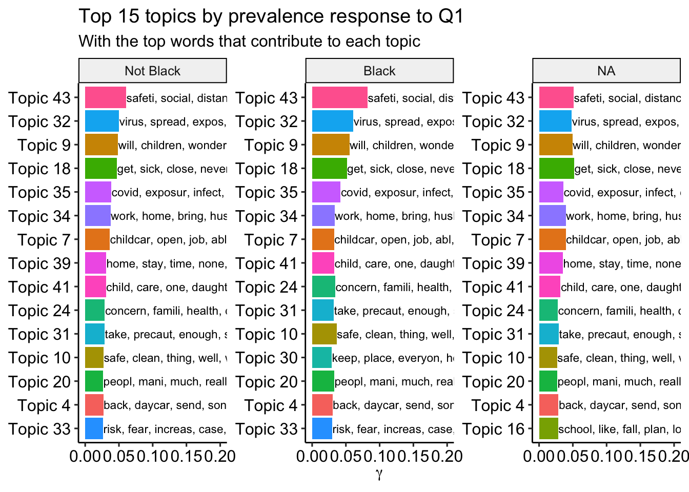
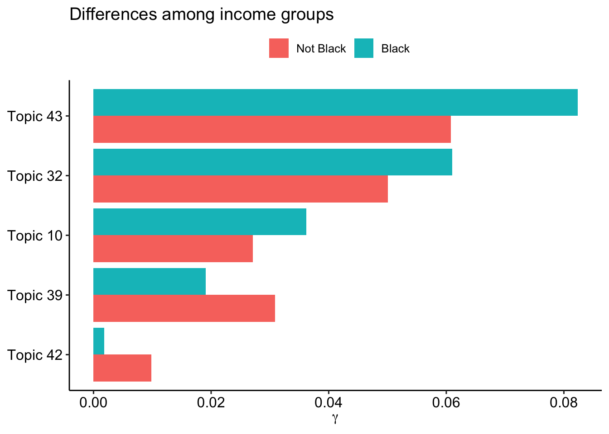
Poverty
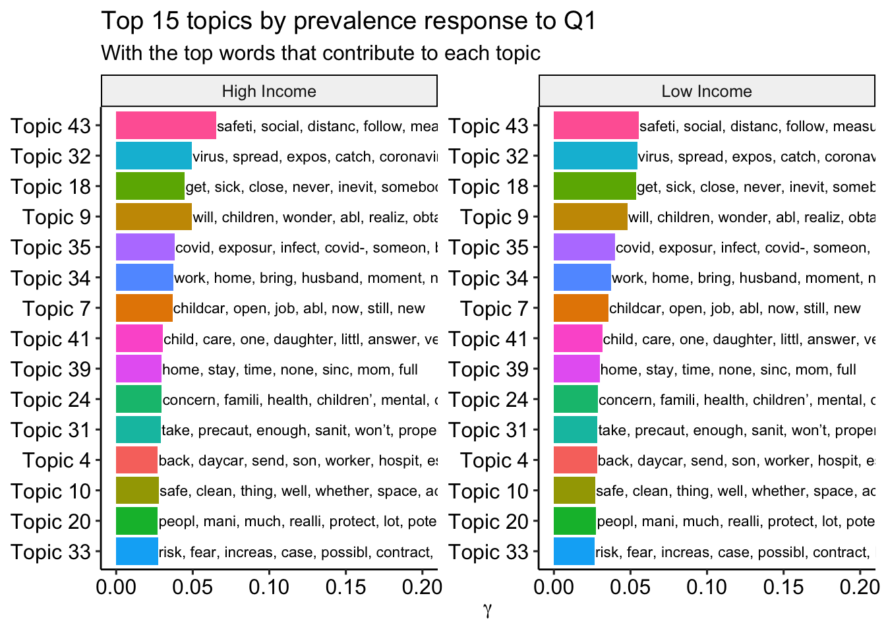
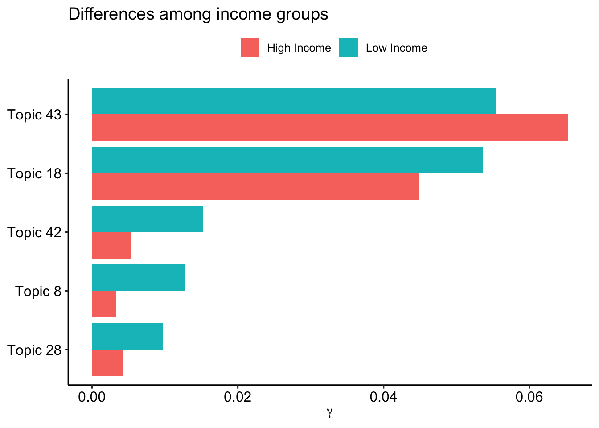
Topics by week
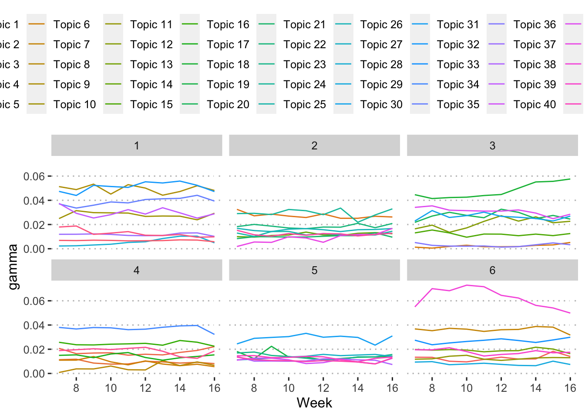
Topic clusters
Topic structure
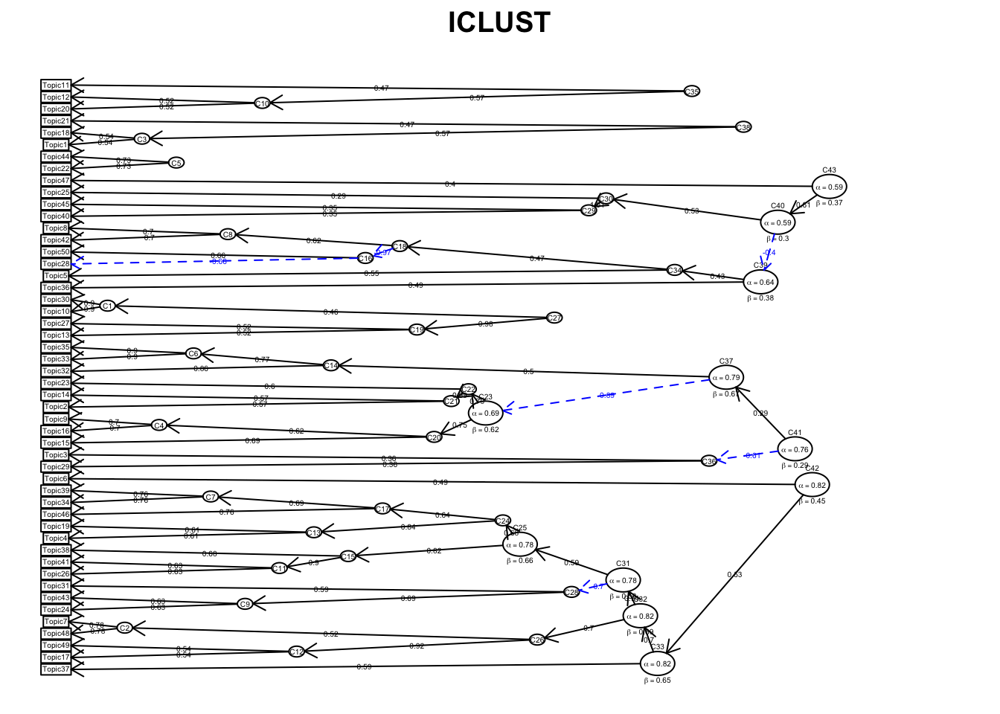
## ICLUST (Item Cluster Analysis)
## Call: iclust(r.mat = topics_only_wide)
##
## Purified Alpha:
## C42 C41 C27 C43 C5 C38 C35
## 0.82 0.76 0.71 0.59 0.70 0.40 0.38
##
## G6* reliability:
## C42 C41 C27 C43 C5 C38 C35
## 0.92 0.55 1.00 0.53 1.00 1.00 1.00
##
## Original Beta:
## C42 C41 C27 C43 C5 C38 C35
## 0.45 0.29 0.56 0.37 0.70 0.29 0.27
##
## Cluster size:
## C42 C41 C27 C43 C5 C38 C35
## 17 11 4 10 2 3 3
##
## Item by Cluster Structure matrix:
## O P C42 C41 C27 C43 C5 C38 C35
## Topic1 C38 C38 0.01 0.17 -0.15 0.00 -0.01 0.68 -0.03
## Topic10 C27 C27 -0.21 -0.29 0.86 0.12 0.04 -0.20 0.01
## Topic11 C35 C35 -0.04 0.09 -0.11 0.07 -0.02 0.07 0.62
## Topic12 C35 C35 -0.09 -0.13 0.09 0.13 0.05 -0.11 0.66
## Topic13 C27 C27 0.14 -0.28 0.66 0.15 0.30 -0.20 0.09
## Topic14 C41 C41 0.08 -0.51 0.07 0.19 -0.03 -0.18 -0.01
## Topic15 C41 C41 0.30 -0.45 0.10 0.19 0.19 -0.08 -0.09
## Topic16 C41 C41 0.33 -0.70 0.06 0.24 0.14 -0.15 -0.18
## Topic17 C42 C42 0.46 -0.39 0.16 0.27 0.28 -0.13 0.09
## Topic18 C38 C38 -0.15 0.32 -0.13 -0.11 -0.07 0.73 0.00
## Topic19 C42 C42 0.42 -0.22 -0.15 0.26 0.11 0.07 -0.08
## Topic2 C41 C41 0.26 -0.50 -0.01 0.13 0.09 -0.18 -0.09
## Topic20 C35 C35 -0.36 0.22 0.17 0.08 0.02 0.00 0.73
## Topic21 C38 C38 0.04 -0.04 0.00 0.14 -0.04 0.62 -0.01
## Topic22 C5 C5 0.26 -0.14 0.15 0.09 0.88 -0.05 0.04
## Topic23 C41 C41 0.12 -0.51 0.06 0.21 0.03 -0.07 -0.04
## Topic24 C42 C42 -0.38 0.16 -0.02 0.26 -0.26 0.04 0.10
## Topic25 C43 C43 0.10 -0.10 -0.08 0.39 -0.05 -0.03 -0.03
## Topic26 C42 C42 0.55 -0.37 0.17 0.28 0.20 -0.16 -0.24
## Topic27 C27 C27 -0.08 -0.19 0.60 0.13 0.19 0.23 0.10
## Topic28 C43 C43 -0.15 0.13 -0.14 -0.48 -0.11 -0.09 -0.11
## Topic29 C41 C41 0.01 -0.35 0.16 0.11 0.02 -0.09 0.06
## Topic3 C41 C41 0.12 -0.28 -0.05 0.08 0.08 -0.02 -0.01
## Topic30 C27 C27 -0.28 -0.17 0.79 0.10 -0.09 -0.22 0.02
## Topic31 C42 C42 -0.38 0.00 0.27 0.04 -0.09 -0.14 0.19
## Topic32 C41 C41 -0.36 0.66 -0.31 -0.20 -0.23 0.21 0.00
## Topic33 C41 C41 -0.18 0.66 -0.38 -0.02 -0.19 0.15 0.01
## Topic34 C42 C42 0.68 -0.09 -0.24 0.16 0.13 0.06 -0.25
## Topic35 C41 C41 -0.33 0.76 -0.40 -0.16 -0.26 0.25 0.03
## Topic36 C43 C43 -0.13 0.15 -0.11 -0.41 -0.08 0.01 -0.03
## Topic37 C42 C42 0.43 -0.13 -0.06 0.14 0.19 -0.10 0.06
## Topic38 C42 C42 0.48 -0.16 -0.06 0.20 0.03 -0.08 -0.12
## Topic39 C42 C42 0.49 -0.13 -0.09 0.04 0.02 -0.12 -0.22
## Topic4 C42 C42 0.69 -0.30 -0.06 0.16 0.43 0.06 -0.23
## Topic40 C43 C43 0.10 -0.06 -0.06 0.32 0.04 -0.08 -0.07
## Topic41 C42 C42 0.54 -0.09 -0.14 0.20 0.15 0.11 -0.17
## Topic42 C43 C43 -0.20 0.17 -0.19 -0.62 -0.14 -0.12 -0.14
## Topic43 C42 C42 -0.59 -0.02 0.27 0.06 -0.20 -0.26 0.13
## Topic44 C5 C5 0.29 -0.20 0.12 0.14 0.88 -0.05 0.00
## Topic45 C43 C43 -0.02 -0.03 -0.06 0.34 -0.06 -0.12 -0.01
## Topic46 C42 C42 0.57 -0.21 -0.18 0.13 0.09 -0.10 -0.18
## Topic47 C43 C43 0.01 -0.18 0.05 0.37 -0.03 0.03 0.05
## Topic48 C42 C42 0.50 -0.17 -0.03 0.20 0.07 -0.14 -0.10
## Topic49 C42 C42 0.39 -0.14 0.02 0.15 0.21 -0.09 0.00
## Topic5 C43 C43 -0.14 0.13 -0.10 -0.44 -0.09 -0.03 -0.06
## Topic50 C43 C43 0.21 -0.35 0.23 0.63 0.14 -0.04 0.24
## Topic6 C42 C42 0.33 -0.08 -0.10 0.15 0.00 -0.05 -0.03
## Topic7 C42 C42 0.75 -0.45 0.01 0.30 0.26 -0.15 -0.23
## Topic8 C43 C43 -0.19 0.16 -0.17 -0.60 -0.13 -0.10 -0.12
## Topic9 C41 C41 0.02 -0.57 0.42 0.36 -0.04 0.05 -0.13
##
## With eigenvalues of:
## C42 C41 C27 C43 C5 C38 C35
## 5.0 3.7 2.8 2.6 1.9 1.9 1.6
##
## Purified scale intercorrelations
## reliabilities on diagonal
## correlations corrected for attenuation above diagonal:
## C42 C41 C27 C43 C5 C38 C35
## C42 0.82 -0.45 -0.19 0.38 0.42 -0.09 -0.44
## C41 -0.35 0.76 -0.44 -0.48 -0.27 0.41 0.16
## C27 -0.15 -0.32 0.71 0.27 0.21 -0.25 0.15
## C43 0.26 -0.32 0.17 0.59 0.21 0.04 0.29
## C5 0.32 -0.19 0.15 0.13 0.70 -0.11 0.05
## C38 -0.05 0.22 -0.13 0.02 -0.06 0.40 -0.05
## C35 -0.25 0.09 0.08 0.14 0.03 -0.02 0.38
##
## Cluster fit = 0.57 Pattern fit = 0.93 RMSR = 0.06Topic structure (Black respondants only)
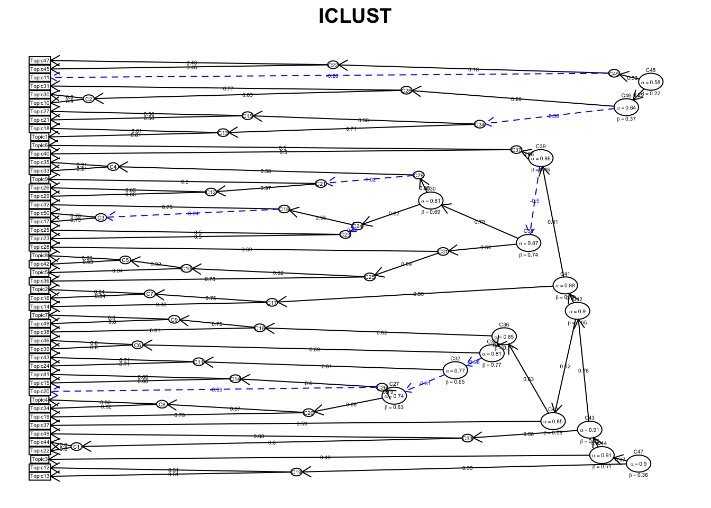
## ICLUST (Item Cluster Analysis)
## Call: iclust(r.mat = topics_only_wide)
##
## Purified Alpha:
## C47 C40 C45
## 0.90 0.70 0.29
##
## G6* reliability:
## C47 C40 C45
## 0.94 0.71 0.46
##
## Original Beta:
## C47 C40 C45
## 0.19 0.54 0.18
##
## Cluster size:
## C47 C40 C45
## 39 8 3
##
## Item by Cluster Structure matrix:
## O P C47 C40 C45
## Topic1 C40 C40 -0.13 -0.58 0.00
## Topic10 C40 C40 0.15 0.62 -0.16
## Topic11 C45 C45 -0.11 -0.10 0.60
## Topic12 C47 C47 0.12 0.09 -0.06
## Topic13 C47 C47 0.39 0.22 -0.12
## Topic14 C47 C47 0.45 0.27 -0.07
## Topic15 C47 C47 0.40 0.01 0.01
## Topic16 C47 C47 0.63 0.03 -0.15
## Topic17 C47 C47 0.68 0.01 -0.05
## Topic18 C40 C40 -0.29 -0.60 -0.13
## Topic19 C47 C47 0.35 -0.29 0.07
## Topic2 C47 C47 0.46 0.03 -0.02
## Topic20 C47 C47 -0.33 0.13 0.09
## Topic21 C40 C40 0.10 -0.47 -0.05
## Topic22 C47 C47 0.45 -0.13 -0.16
## Topic23 C47 C47 0.43 0.08 -0.05
## Topic24 C47 C47 -0.33 0.20 0.09
## Topic25 C47 C47 0.22 0.02 0.10
## Topic26 C47 C47 0.63 0.09 0.02
## Topic27 C45 C45 0.12 -0.07 -0.67
## Topic28 C47 C47 -0.69 -0.11 -0.11
## Topic29 C47 C47 0.33 0.26 -0.02
## Topic3 C47 C47 0.36 -0.14 0.08
## Topic30 C40 C40 0.03 0.76 -0.18
## Topic31 C40 C40 -0.13 0.55 0.09
## Topic32 C47 C47 -0.69 -0.33 0.03
## Topic33 C47 C47 -0.54 -0.32 0.23
## Topic34 C47 C47 0.47 -0.40 -0.01
## Topic35 C47 C47 -0.71 -0.37 0.14
## Topic36 C47 C47 -0.31 -0.08 0.03
## Topic37 C47 C47 0.44 -0.09 0.09
## Topic38 C47 C47 0.48 -0.03 0.11
## Topic39 C47 C47 0.47 -0.12 -0.08
## Topic4 C47 C47 0.58 -0.36 0.00
## Topic40 C47 C47 0.18 0.00 0.02
## Topic41 C47 C47 0.38 -0.26 0.19
## Topic42 C47 C47 -0.65 -0.12 -0.11
## Topic43 C47 C40 -0.28 0.63 -0.13
## Topic44 C47 C47 0.42 -0.11 -0.01
## Topic45 C47 C40 0.05 0.34 0.00
## Topic46 C47 C47 0.35 -0.12 0.03
## Topic47 C47 C47 0.23 0.04 0.00
## Topic48 C47 C47 0.45 -0.02 0.18
## Topic49 C47 C47 0.42 -0.07 0.01
## Topic5 C47 C47 -0.71 -0.13 -0.12
## Topic50 C47 C47 0.44 0.16 -0.04
## Topic6 C45 C45 0.21 -0.05 0.66
## Topic7 C47 C47 0.74 -0.09 0.09
## Topic8 C47 C47 -0.67 -0.12 -0.11
## Topic9 C47 C47 0.43 0.24 -0.14
##
## With eigenvalues of:
## C47 C40 C45
## 9.6 4.0 1.7
##
## Purified scale intercorrelations
## reliabilities on diagonal
## correlations corrected for attenuation above diagonal:
## C47 C40 C45
## C47 0.90 0.04 -0.02
## C40 0.03 0.70 -0.09
## C45 -0.01 -0.04 0.29
##
## Cluster fit = 0.59 Pattern fit = 0.87 RMSR = 0.09Question 5
Is there anything else you would like to tell us about you and your family’s experiences during the COVID-19 pandemic?
## Building corpus...
## Converting to Lower Case...
## Removing punctuation...
## Removing stopwords...
## Removing numbers...
## Stemming...
## Creating Output...## Removing 2164 of 4544 terms (2164 of 48882 tokens) due to frequency
## Removing 12 Documents with No Words
## Your corpus now has 4261 documents, 2380 terms and 46718 tokens.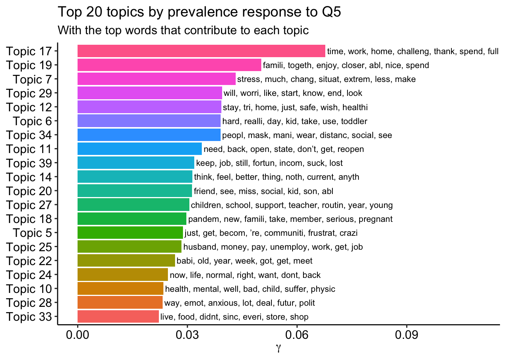
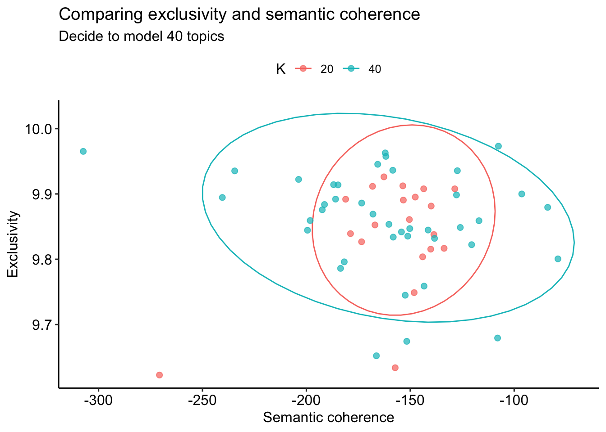
Most common topics
Identify topics
All topics
## Topic 1 Top Words:
## Highest Prob: ill, afraid, scare, might, lose, pass, patient
## FREX: ill, afraid, scare, might, lose, pass, patient
## Lift: afraid, pass, patient, rona, scare, strong, cdcs
## Score: ill, afraid, scare, might, lose, pass, patient
## Topic 2 Top Words:
## Highest Prob: year, start, old, daughter, hard, understand, remot
## FREX: year, start, old, kindergarten, suppos, youngest, understand
## Lift: crisi, daughter’, everywher, feet, hardship, heartbroken, indefinit
## Score: year, start, old, kindergarten, understand, hard, remot
## Topic 3 Top Words:
## Highest Prob: babi, affect, let, play, forc, anxieti, extrem
## FREX: babi, affect, let, play, extrem, anxious, matern
## Lift: beyond, brand, breastfeed, decemb, extrem, factori, feder
## Score: babi, affect, play, let, forc, anxieti, extrem
## Topic 4 Top Words:
## Highest Prob: back, daycar, send, son, worker, hospit, essenti
## FREX: daycar, back, essenti, send, worker, hes, laid
## Lift: telepractic, essenti, daycar, hes, hubbi, busier, back
## Score: back, daycar, send, son, hospit, essenti, worker
## Topic 5 Top Words:
## Highest Prob: contagio, seguridad, posibl, posibilidad, por, algún, protocolo
## FREX: contagio, seguridad, posibl, posibilidad, algún, protocolo, sanidad
## Lift: posibilidad, algún, contagio, posibl, protocolo, seguridad, sanidad
## Score: contagio, seguridad, posibl, posibilidad, por, algún, protocolo
## Topic 6 Top Words:
## Highest Prob: may, chang, pandem, normal, grandpar, resum, life
## FREX: may, chang, normal, grandpar, pandem, drastic, somewhat
## Lift: drastic, somewhat, chang, extens, grandpar, lay, may
## Score: may, chang, normal, pandem, grandpar, resum, life
## Topic 7 Top Words:
## Highest Prob: childcar, open, job, abl, now, still, new
## FREX: open, job, childcar, remain, now, whole, abl
## Lift: open, remain, job, stabl, suck, whole, childcar
## Score: childcar, open, job, abl, now, new, still
## Topic 8 Top Words:
## Highest Prob: los, niño, que, van, limpieza, evitar, como
## FREX: limpieza, mis, los, cuidar, evitar, niño, higien
## Lift: cerca, contagiars, cuidar, favor, grave, higien, jugar
## Score: los, niño, que, van, limpieza, evitar, como
## Topic 9 Top Words:
## Highest Prob: will, children, wonder, abl, realiz, obtain, violent
## FREX: will, wonder, children, violent, attach, dramat, numer
## Lift: wonder, will, children, abl, realiz, violent, obtain
## Score: will, children, wonder, abl, realiz, violent, obtain
## Topic 10 Top Words:
## Highest Prob: safe, clean, thing, well, whether, space, actual
## FREX: clean, safe, well, truli, thing, gear, whether
## Lift: thorough, clean, gear, safe, wether, truli, kidsfamili
## Score: safe, clean, thing, well, whether, actual, space
## Topic 11 Top Words:
## Highest Prob: other, leav, necessari, communiti, live, die, workplac
## FREX: other, communiti, workplac, chanc, anyon, necessari, die
## Lift: greater, action, advis, bond, closest, fight, global
## Score: other, live, leav, necessari, arent, communiti, die
## Topic 12 Top Words:
## Highest Prob: mask, wear, hope, contact, requir, nervous, face
## FREX: mask, wear, hope, requir, nervous, togeth, custom
## Lift: alot, choic, custom, hope, seat, worn, nervous
## Score: mask, wear, hope, requir, nervous, contact, face
## Topic 13 Top Words:
## Highest Prob: can, make, sure, way, everyth, put, done
## FREX: can, make, sure, everyth, done, best, way
## Lift: reckless, can, make, meant, smart, sure, wnt
## Score: can, sure, make, everyth, way, done, there
## Topic 14 Top Words:
## Highest Prob: use, learn, person, good, onlin, caus, physic
## FREX: use, learn, person, good, onlin, first, virtual
## Lift: strategi, -campus, consult, difficulti, discuss, disinfect, first
## Score: learn, use, good, onlin, person, virtual, physic
## Topic 15 Top Words:
## Highest Prob: return, germ, attend, allow, facil, ’ll, expect
## FREX: germ, attend, allow, facil, ’ll, line, wors
## Lift: allow, elig, lift, necess, pto, sb-, session
## Score: return, germ, facil, allow, attend, ’ll, expect
## Topic 16 Top Words:
## Highest Prob: school, like, fall, plan, look, schedul, experi
## FREX: look, school, elementari, experi, fall, function, haven’t
## Lift: career, elementari, function, haven’t, restart, uncertain, zoom
## Score: school, fall, like, look, plan, schedul, experi
## Topic 17 Top Words:
## Highest Prob: just, day, even, small, avail, seem, everi
## FREX: just, everi, day, small, avail, even, question
## Lift: arriv, day, encount, everi, just, match, met
## Score: just, day, even, avail, small, everi, seem
## Topic 18 Top Words:
## Highest Prob: get, sick, close, never, inevit, somebodi, quarter
## FREX: get, sick, close, never, inevit, quarter, somebodi
## Lift: sick, get, close, never, somebodi, inevit, quarter
## Score: get, sick, close, never, somebodi, inevit, quarter
## Topic 19 Top Words:
## Highest Prob: worri, preschool, child’, unpredict, boyfriend, postpon, simpli
## FREX: worri, unpredict, boyfriend, postpon, child’, preschool, simpli
## Lift: boyfriend, postpon, unpredict, worri, simpli, child’, preschool
## Score: worri, preschool, child’, unpredict, postpon, boyfriend, simpli
## Topic 20 Top Words:
## Highest Prob: peopl, mani, much, realli, protect, lot, potenti
## FREX: peopl, mani, realli, wash, crowd, irrespons, protect
## Lift: remind, realli, bubbl, conflict, crowd, fatigu, forget
## Score: peopl, mani, realli, much, protect, lot, hand
## Topic 21 Top Words:
## Highest Prob: parent, environ, test, shut, posit, member, give
## FREX: parent, shut, member, frequent, give, older, test
## Lift: caught, finish, frequent, parent, schooldaycar, member, shut
## Score: parent, environ, test, shut, posit, member, give
## Topic 22 Top Words:
## Highest Prob: dont, want, think, offic, readi, stop, earli
## FREX: dont, readi, stop, unsaf, quit, think, want
## Lift: dont, rush, solid, weekend, unsaf, blown, governor
## Score: dont, want, think, offic, readi, stop, ’ve
## Topic 23 Top Words:
## Highest Prob: teacher, student, alreadi, teach, stress, class, manag
## FREX: teacher, student, teach, class, size, camp, top
## Lift: bodi, connect, face--fac, music, slot, split, teacher
## Score: teacher, student, teach, class, alreadi, stress, summer
## Topic 24 Top Words:
## Highest Prob: concern, famili, health, children’, mental, overal, wellb
## FREX: children’, concern, health, wellb, famili, onto, babysat
## Lift: children’, onto, wellb, babysat, concern, health, everyone’
## Score: concern, health, famili, children’, mental, everyone’, overal
## Topic 25 Top Words:
## Highest Prob: due, staff, pay, outbreak, issu, howev, great
## FREX: due, issu, great, condit, general, sanitari, staff
## Lift: inflammatori, aspect, boy, capabl, condit, due, equiti
## Score: staff, due, pay, outbreak, issu, howev, condit
## Topic 26 Top Words:
## Highest Prob: employ, reopen, soon, appli, doesn’t, confid, isn’t
## FREX: employ, reopen, soon, appli, neither, anytim, ninguno
## Lift: alguna, anticip, anytim, appli, bind, chao, idk
## Score: employ, reopen, soon, appli, doesn’t, anytim, isn’t
## Topic 27 Top Words:
## Highest Prob: kid, ninguna, stringent, explain, dirti, sens, hate
## FREX: kid, stringent, explain, ninguna, dirti, nephew, weaken
## Lift: kid, explain, stringent, ninguna, dirti, sens, hate
## Score: kid, ninguna, stringent, dirti, explain, sens, hate
## Topic 28 Top Words:
## Highest Prob: que, real, escuela, todo, hijo, miedo, usar
## FREX: real, miedo, usar, contagien, tener, ser, casa
## Lift: ambient, año, así, contagiemo, controlar, cuando, cubreboca
## Score: que, todo, escuela, hijo, miedo, usar, seguro
## Topic 29 Top Words:
## Highest Prob: trust, limit, etc, handl, build, amount, support
## FREX: limit, etc, handl, share, activ, prepar, demand
## Lift: assur, common, corner, etc, handl, manner, phase
## Score: trust, limit, etc, share, build, handl, amount
## Topic 30 Top Words:
## Highest Prob: keep, place, everyon, healthi, employe, protocol, put
## FREX: keep, everyon, recommend, place, protocol, healthi, employe
## Lift: everyon, followedeffect, forev, habit, paramet, personnel, recommend
## Score: keep, place, healthi, everyon, protocol, employe, recommend
## Topic 31 Top Words:
## Highest Prob: take, precaut, enough, sanit, won’t, proper, serious
## FREX: take, precaut, enough, sanit, won’t, proper, serious
## Lift: execut, safeguard, enough, sanit, won’t, cash, compromis
## Score: precaut, take, enough, sanit, won’t, proper, serious
## Topic 32 Top Words:
## Highest Prob: virus, spread, expos, catch, coronavirus, prevent, diseas
## FREX: virus, spread, expos, catch, prevent, corona, coronavirus
## Lift: prevent, accident, catch, corona, expos, spread, unintent
## Score: virus, spread, expos, catch, prevent, coronavirus, corona
## Topic 33 Top Words:
## Highest Prob: risk, fear, increas, case, possibl, contract, high
## FREX: risk, fear, increas, case, possibl, contagion, spike
## Lift: contagion, fear, variabl, case, disord, increas, possibl
## Score: risk, fear, increas, contract, case, possibl, high
## Topic 34 Top Words:
## Highest Prob: work, home, bring, husband, moment, nurs, someth
## FREX: work, bring, husband, moment, nurs, home, homemak
## Lift: homemak, bring, work, intend, husband, moment, chosen
## Score: work, home, bring, husband, moment, nurs, later
## Topic 35 Top Words:
## Highest Prob: covid, exposur, infect, covid-, someon, becom, carrier
## FREX: covid, exposur, infect, carrier, relat, elder, brought
## Lift: asymptot, carrier, cure, covid, exposur, brought, elder
## Score: exposur, covid, infect, covid-, someon, becom, elder
## Topic 36 Top Words:
## Highest Prob: symptom, contagi, show, result, present, organ, still
## FREX: symptom, contagi, present, organ, appear, contagiarm, truth
## Lift: contagi, organ, suficientement, appear, bioseguridad, contagiarm, cuiden
## Score: symptom, contagi, show, contagiarm, present, suficientement, result
## Topic 37 Top Words:
## Highest Prob: come, current, yet, though, alway, state, far
## FREX: come, current, yet, far, unemploy, travel, restaur
## Lift: accommod, current, entertain, hotel, luckili, unemploy, ahead
## Score: come, current, yet, alway, travel, though, far
## Topic 38 Top Words:
## Highest Prob: center, continu, re-open, anoth, either, situat, nanni
## FREX: center, re-open, either, situat, nanni, hous, respons
## Lift: center, either, gap, loos, re-open, rehir, situat
## Score: center, continu, re-open, anoth, either, nanni, situat
## Topic 39 Top Words:
## Highest Prob: home, stay, time, none, sinc, mom, full
## FREX: stay, time, none, mom, full, forese, home
## Lift: patienc, full, mom, angri, contractor, exhaust, headstart
## Score: home, stay, none, time, mom, full, sinc
## Topic 40 Top Words:
## Highest Prob: long, busi, scari, effect, financi, impact, cut
## FREX: long, impact, compani, term, bad, period, surviv
## Lift: bad, compani, experienc, heard, long-term, pediatr, period
## Score: long, busi, scari, impact, effect, financi, term
## Topic 41 Top Words:
## Highest Prob: child, care, one, daughter, littl, answer, vet
## FREX: child, care, one, vet, zero, littl, daughter
## Lift: care, child, vet, zero, one, littl, resumpt
## Score: child, care, one, daughter, littl, vet, resumpt
## Topic 42 Top Words:
## Highest Prob: que, las, para, medida, cuidado, con, salud
## FREX: las, medida, cuidado, salud, infantil, cumplan, sea
## Lift: contagiar, espero, necesario, pandemia, prevención, puedan, realment
## Score: que, las, para, medida, cuidado, con, salud
## Topic 43 Top Words:
## Highest Prob: safeti, social, distanc, follow, measur, guidelin, cleanli
## FREX: safeti, distanc, measur, guidelin, cleanli, hygien, practic
## Lift: adher, frequenc, obtain, socialemot, track, distanc, measur
## Score: safeti, distanc, social, follow, measur, cleanli, guidelin
## Topic 44 Top Words:
## Highest Prob: don’t, know, feel, around, comfort, control, flexibl
## FREX: don’t, know, feel, around, comfort, aren’t, asthma
## Lift: aren’t, asthma, comfort, contain, don’t, dumb, errand
## Score: don’t, know, feel, comfort, around, flexibl, control
## Topic 45 Top Words:
## Highest Prob: public, number, difficult, polici, appropri, emot, develop
## FREX: public, number, difficult, emot, larg, rate, transit
## Lift: colleagu, covi, eas, hesit, hundr, mass, modif
## Score: public, number, appropri, emot, difficult, larg, polici
## Topic 46 Top Words:
## Highest Prob: applic, week, month, tri, doesnt, two, last
## FREX: applic, month, tri, doesnt, last, sahm, stay--hom
## Lift: formal, juggl, becam, earlier, effort, fire, month
## Score: applic, week, month, tri, doesnt, last, stay--hom
## Topic 47 Top Words:
## Highest Prob: provid, happen, lack, especi, educ, differ, ppe
## FREX: ppe, adult, refus, suppli, especi, easili, creat
## Lift: caution, enter, proactiv, seen, suppli, traumat, adult
## Score: happen, provid, educ, especi, lack, differ, ppe
## Topic 48 Top Words:
## Highest Prob: need, find, hour, help, afford, incom, restrict
## FREX: need, find, afford, cost, cautious, household, help
## Lift: cautious, childcareschool, divers, friday, minut, night, retail
## Score: need, find, hour, afford, help, incom, reduc
## Topic 49 Top Words:
## Highest Prob: wont, see, without, vaccin, cant, noth, longer
## FREX: wont, see, without, vaccin, noth, asymptomat, wait
## Lift: anyway, cup, elimin, facial, infecti, june, prematur
## Score: wont, see, vaccin, without, cant, noth, asymptomat
## Topic 50 Top Words:
## Highest Prob: also, set, can’t, telehealth, children, daughter, littl
## FREX: also, set, can’t, telehealth, worrisom, spring, total
## Lift: also, set, can’t, telehealth, littl, children, daughter
## Score: also, set, can’t, telehealth, children, daughter, littl2 - Protests
## Topic 2 Top Words:
## Highest Prob: covid, fear, exposur, sinc, virus, march, contract
## FREX: contract, exposur, covid, fear, march, none, patient
## Lift: creep, contract, curfew, upris, polic, loot, exposur
## Score: covid, contract, exposur, fear, march, racism, none##
## Topic 2:
## We took the risk of exposure to covid19 because we participated in a protest against police brutality
## I live just north of a major city hot spot, about 30 minutes away. We were pretty fine here until the most recent spike, our county saw numbers rise. I work at an eye doctors office and this week we’ve had so many more patients calling to cancel appointments because they’ve been exposed to covid or have contracted it themselves. I thought our quiet little town was pretty safe but I think those cases from the big city are starting to creep up here. I pray that we are all safe when we eventually contract it!!!!
## My wife and I have been going to work during this pandemic. We both work in healthcare and we have been lucky to not have gotten COVID. We have only had 2 patients who were diagnosed with COVID and exposure to our clinic was very unlikely.. But with the increase in cases, we are seeing more patients contracting the virus.
## Now, I’m concern about the looting, robbing sue to the protests and the curfew imposed to the city.
## It has been doubly complicated lately because my husband is a police Officer and had to work a protest march. More stress has come from that than Covid lately, but there has also been worry because of Covid numbers creeping up here in Michigan.
## The riots and protests (when not peaceful) are more concerning to us. But I am stressing less about that also since I have started limiting my social media intake this week. The potty training and things with my husband have been my stressors this week.
## It’s been on the back burner this week due to increased concerns with the protests, riots, and city unrest.
## I am concerned about being exposed at work and bringing it home to my children. I am in direct contact with Co-Vid patients weekly.
## My grandma is in a nursing home and one of her aides contracted the virus. They gave it to her and she’s 94 in the hospital with no allowed visitors. The only communication we have with her is through FaceTime. It’s very scary for her to be alone and confused.
## Being at home with few distractions and no other input from other caregivers for several weeks made me a better parent. I became more consistent with discipline and more aware of my kids’ needs.5 - Horrible situation
## Topic 5 Top Words:
## Highest Prob: just, get, becom, ’re, communiti, frustrat, crazi
## FREX: bore, becom, ’re, crazi, wait, frustrat, just
## Lift: bore, nope, disgust, restless, aggrav, country’, asthma
## Score: becom, just, bore, ’re, crazi, wait, communiti##
## Topic 5:
## We are adapting relatively well to the pandemic so far despite the across the board failure of many institutions and society in general. Unfortunately, a review of the pandemic literature strongly suggests we are just at the beginning of this pandemic and its secondary effects on the economy and society. It is going to be a long couple of years so fingers crossed that conditions do not deteriorate too much.
## Some days are better than others. It is just weird that they can't have a regular summer.
## My daughter has regressed with potty training and has become quite defiant and desperate for attnetkonr
## They’re too small for there to be an easy explanation for them about what’s going on
## Both adults and kids are going stir crazy.
## Community judgment ha seven horrible.
## Nope, it’s all just horrible.
## Getting stir crazy
## Getting vehicle registration was not fun
## Just waiting for the situation to get better6 - This is hard
## Topic 6 Top Words:
## Highest Prob: hard, realli, day, kid, take, use, toddler
## FREX: realli, hard, toddler, day, playground, use, mom
## Lift: escap, realli, hard, eldest, playground, librari, toddler
## Score: hard, realli, day, toddler, kid, use, playground##
## Topic 6:
## This is really dire and even though we are mostly ok financially, I’m really scared that the stress is tearing my marriage apart.
## Both kids have been off schedule and behaving very poorly during the day. Its hard for them as they are unable to go on vacation and not doing the activities they used to.
## Not being able to go out definitely was hard for the kids because they are not used to it.
## It has been very hard not being able to take time off to be with my children. My sister who watches them doesn’t really play with them. So they are on the iPad or watching tv all day. Which is not useful at all.
## It's hard. We are really well situated to get through this, and it's still really, really hard. We are mostly homebodies, and we still are getting cabin fever, and it's hardest on the kids - we think if the 4-year-old could just be able to go somewhere else and play with other kids, he'd have a much easier time, and spa would we - he just can't blow off steam like he would normally be able to
## Being unable to take my daughter to the playground to burn off energy has caused a lot of stress on us.
## No, it's just been really hard, really stressed, and the world is even more dangerous and more crazy!!
## If I get sick, then nobody will be there to take care of my elderly mom and my baby… I have to be super careful and keep everything really clean. It’s giving me really bad anxiety.
## It’s really hard.
## It’s been really hard7 - This is stressful
## Topic 7 Top Words:
## Highest Prob: stress, much, chang, situat, extrem, less, make
## FREX: stress, much, chang, situat, wors, less, extrem
## Lift: scratch, eachoth, guard, stress, much, easier, veget
## Score: stress, much, chang, situat, extrem, less, wors##
## Topic 7:
## The Governor in AZ made the situation much worse and had caused me lots of stress.
## Lots of stress with emails, new ever changing info and lots of questions without definitive answers
## not much has changed. especially now that we're entering summer.
## It continues to be stressful in this evolving information environment
## Marital stress it has caused
## Worse administration we ever could have had for this situation.
## It’s extremely stressful but we are managing
## We have a unique situation since we were circus performers on the road and now back at my family house.
## We don't have it as bad as some, and it has still been extremely stressful.
## It's been a trying time. We didn't realize how much we rely on the free things like playgrounds, splashpads, and the like to create summer memories until we couldn't have access.9 - Mental health (Sp)
## Topic 9 Top Words:
## Highest Prob: que, los, esto, para, solo, una, niño
## FREX: creo, gent, esto, los, solo, tenemo, estamo
## Lift: creo, gent, otro, entienden, les, mient, salimo
## Score: que, los, esto, para, gent, niño, creo##
## Topic 9:
## A la gente abusiva no le importan los demas si se enferman o no y la gente no tiene forma de protegerse. Es horrible vivir en una pandemia donde la gente dice que no es cierto. Hay mucha gente que miente y se aprovecha de los que no entienden el mundo y se quedan con sus cheques. Dicen que no les llego pero se lo gastan y no se los dan a su familia.
## Creo que es importante tener una buena salud mental, para llevar esto de la mejor manera posible por uno y los niños, porque nuestra ansiedad se les traslada a ellos
## Nos hemos cuidado mucho, no salimos solo lo absolutamente necesario, pero por la culpa de la gente inconsciente creo que esto va para largo
## En realidad pues como ya lo he mencionado anteriormente ha sido una época difícil pero tenemos fe que Dios nos ayudará a salir adelante
## Pues ha es una etapa difícil por la cual estamos viviendo pero tenemos fe y esperanza que esto mejorara
## Ha sido Un tiempo difícil . Los niños quieren ir a los parques y aún no entienden muy bien porque no pueden ir
## No creo que allá algo más, ya que hemos respetado la cuarentena y hemos estado prácticamente encerrados
## Pues solo que es una época difícil pero confiando en Dios que esto pronto pasará
## Me gustaría poder tener acceso a más material para mantener a los niños ocupados durante el verano
## solo que estamos mas unidos como familia,a pesar de todo,siempre apoyandonos unos a otros11 - Thinking ahead
## Topic 11 Top Words:
## Highest Prob: need, back, open, state, don’t, get, reopen
## FREX: open, readi, reopen, state, yet, return, don’t
## Lift: steadili, readi, wise, outdoor, yet, reopen, texa
## Score: readi, state, reopen, open, yet, back, don’t##
## Topic 11:
## This is all so bizarre and while I’m ready to get back out there and have a return to our summer norms, I’m definitely nervous. I need more information.
## States need more input from early childhood experts. 0-5 is not the same as older kids. I’m terrified that they don’t care about the nuance.
## I am concerned about schools reopening without the virus being under control
## I am concerned about schools reopening in the fall. I want them to go but am worried it'll be too soon.
## Don’t want to be closed forever kids need to go back to school for many reasons
## We are ready to get back to some kind of normalcy
## We are hanging in there and planning to do outdoor activities this summer.
## Where is the conversation and policy about safe childcare? We can’t return to work without our kids being safe.
## I'm so ready for these kids to go back to school.
## This state needs to reopen12 - Staying home and safe
## Topic 12 Top Words:
## Highest Prob: stay, tri, home, just, safe, wish, healthi
## FREX: wish, stay, guidelin, tri, healthi, safe, best
## Lift: award, vulner, resolv, guidelin, friendship, overshadow, shouldn’t
## Score: stay, wish, tri, safe, just, healthi, home##
## Topic 12:
## We have stayed healthy through this crisis (knocking on wood!) by following the guidelines provided to us and of course common logic to keep ourselves and others safe.
## The biggest tragedy in this crisis is the rampant governmental overreach happening taking control away from individuals, families and small businesses.
## Eliminating fear, and staying healthy and safe, following standard precautions.
## Of course we would like to get out more, but we are staying home to stop the spread and stay healthy.
## I feel safest with us at home in a controlled safe environment rather than braving the possibility of catching the deadly virus
## Trying to stay home and stay safe
## Others don’t respect our decision to follow guidelines
## Disappointed in mixed messages directing guidelines.
## We are trying our best to be healthy and safe.
## We are just trying to stay safe16 - Thinking about familky (Sp)
## Topic 16 Top Words:
## Highest Prob: nos, que, por, más, tiempo, difícil, estar
## FREX: niña, momento, est, nos, nosotro, trabajo, estar
## Lift: dia, enfermo, ambo, bile, dado, est, niña
## Score: nos, que, por, tiempo, más, estar, difícil##
## Topic 16:
## Nosotros por el momento nos cuidamos .mucho nos limitamos a salir solo a lo nesesario limpio extremadamente 3 veses al dia. Y asta ahora no existe ningun enfermo aqui en esta casa un primo de mi pareja se enfermo y la esta pasando muy mal por no tomar precauciones haci que yo aki en casa tomo las mayores precauciones que puedo para no pasar. Por esa enfermedad horrible
## Nos ha dado más tiempo en familia. Ambos padres trabajamos desde la casa y algunas veces es difícil balancearlo con el cuido de las niñas.
## La Niña mayor extraña su estructura y amigos del daycare pero se ha adaptado bien al cambio. Hemos decidido no enviar las niñas al daycare por el resto del año.
## Han sido días difíciles. Nos preocupa no tener ingresos para nuestros gastos. Nos preocupa contagiarnos. Si es necesario dejaremos de pagar renta, pagar biles. Lo que importa es estar sano y vendrán días mejores. Somos inmigrantes y enviabamos dinero a nuestros países, lo cual no podemos hacer más.
## Solamente que siguen muchos afectados y aun estan aumentando los casos en Texas. Mi familia y yo gracias a Dios no hemos tenido el virus pero el temor y el cuidado sigue estacado en pie. Puede tomar meses o años y el no saber es el que nos preocupa.
## Decidimos que las niñas no van a regresar al daycare por el resto del año calendario. Es retador pero dado que ambos podemos trabajar desde casa, seguiremos manejándolo como en los últimos meses
## En este tiempo tan inseguro y tan impredesente la oracion y la fe de que mejorara el tiempo en que vivimos nos ayuda mucho a la familia a tener esperanza y continuar dia a dia.
## El estar encerrados ha sido lo más difícil y la con mi esposo ha sido difícil porque estamos más tiempo juntos
## Nos a ayudado a comunicarnos mejor y a hacer más cosas juntos. Nos a producido estrés por que solíamos pasar mucho tiempo separados.
## Este tiempo nos a enseñado que como familia al estar unidos este aislamiento nos a echo más sercanos
## Que aveces es muy difícil mantenernos a salvo cuando las personas que nos rodean no ponen de su parte para mantener el control de salud.17 - Juggling work and home
## Topic 17 Top Words:
## Highest Prob: time, work, home, challeng, thank, spend, full
## FREX: time, challeng, full, thank, spend, work, home
## Lift: slower, bittersweet, hrs, time, rare, studi, challeng
## Score: time, work, challeng, spend, full, thank, home##
## Topic 17:
## This has been a challenging time. Although I enjoy spending time with my child, it’s challenging for my work/life balance. I work from home and care for my child. I am often overwhelmed, and not as productive as I could be.
## It's been unifying for our family. Daddy is home more- working from home- and is able to spend more time with the kids because there is no commute.
## Working full time and providing child care full time is not sustainable
## It's been so nice having my husband home while his work office has been closed. No commute means more time spent at home and lunches as an entire family.
## It's been helpful having a two home family- both of us are able to work some of the time w/o our son present during the work day.
## I am a single parent working full time while caring for my child. It has been almost impossible to balance the two roles.
## Working full time and providing care full time is not a sustainable situation.
## both parents working full time and caring for kids full time is not sustainable or a healthy environment for my kids. They watch entirely too much TV.
## juggling work and kids at home all the time is really impossible
## Working with 3 little kids at home is very challenging19 - Brought us together
## Topic 19 Top Words:
## Highest Prob: famili, togeth, enjoy, closer, abl, nice, spend
## FREX: togeth, enjoy, closer, nice, bond, extra, brought
## Lift: togeth, dens, cooper, closer, bond, enjoy, grown
## Score: togeth, enjoy, closer, famili, spend, brought, extra##
## Topic 19:
## We have enjoyed family time together. Fewer things to rush off and do. We play and run together. But I miss the organized sports and group fitness.
## We have definitely gotten a lot closer and have bonded more tightly as a family
## It’s definitely brought us closer as a family. Spending more quality time with each other and cooking more meals together.
## Although it’s tough at times, it has brought us closer as a family, and it has been nice not having to get to extra curricular activities.
## I apologise for the black spots on this survey. Filing it out on my phone and there simply was no keyboard, so I couldn't answer some of the questions.
## It has actually brought us closer together.
## Being together has made us actually grow closer
## It has been a wake up call and brought us closer together.
## Brought the family closer together
## Overall it's been fine- great, actually, because we've been able to spend time together as a family and grow closer as we play and work together. We've been blessed to be safe and not gotten sick.20 - Miss our friends and family
## Topic 20 Top Words:
## Highest Prob: friend, see, miss, social, kid, son, abl
## FREX: friend, lone, miss, interact, see, sad, ask
## Lift: dear, soccer, outgo, lone, conclus, butterfli, friend
## Score: friend, lone, miss, see, interact, social, ask##
## Topic 20:
## My family and I miss our family and friends. Both kids had to cancel their birthday celebrations.
## it has been awful for the kids because we can't go to the park and play and they miss their friends
## Sad because of Not being able to see or visit relatives
## I am starting to see my older two kids have issues with social interaction with kids their age
## They miss their friends. Zoom, texting, calling aren’t the same
## My kids miss their friends and family terribly. They both missed their birthday celebrations.
## Not being able to interact with friends and family
## We miss playing at parks.
## My 13 year old has expressed many times how lonely he feels, even though we're all together here. He misses socializing with kids his age and his summer sports were cancelled.
## Explaing to my son we can't have friends over29 - Worried about school and second waves
## Topic 29 Top Words:
## Highest Prob: will, worri, like, start, know, end, look
## FREX: will, worri, end, look, next, start, kindergarten
## Lift: nest, kindergarten, coach, horrifi, forese, unsettl, “normal”
## Score: will, worri, end, start, look, kindergarten, like##
## Topic 29:
## Our five year old is entering kindergarten in August. This feels like the next big choice we have to make and face the consequences of either in-person classes or remote learning.
## My son is starting kindergarten and I’m considering holding him back because I want him to have a “normal” start to kindergarten
## I am worried about the school system In the fall. I do not believe that he should be homeschooled but the school has not shared with me a plan besides first day of school.
## Mostly, we’ve continued on. But once school starts back. Then I’m very worried
## Worried about school starting back in fall
## I am worried there will be a second wave in NY
## I’m worried things will never be “normal” again and that scares me
## This has been tough but we are tougher. We will prevail.
## We are very nervous about a breakout in a region or a big second wave.
## Never thought something like this would happen in my life and would never happen in my child's lifetime ... you know only in another country not mine34 - People refuse to wear masks
## Topic 34 Top Words:
## Highest Prob: peopl, mask, mani, wear, distanc, social, see
## FREX: mask, wear, peopl, distanc, mani, rule, requir
## Lift: mainstream, topic, mask, wear, glove, your, scar
## Score: peopl, mask, wear, distanc, mani, social, rule##
## Topic 34:
## Unsure how to get/convince child to wear face mask as mandated by many places (including doctor's office for well-child visit)
## I had thought we would make it through unscathed. I was also shocked at the number of people not following our MA guidance on mask wearing and social distancing.
## We do not understand the irresponsibility of others that don’t wear masks and that don’t social distance.
## I can't believe how many people won't wear a mask because they believe it causes respiratory problems and it's infringing upon their "rights."
## My husband, who is Asian, is starting to feel unsafe in public spaces, especially ones that are primarily white. He was scared to enter a restaurant that had a few middle aged white people standing outside, not wearing masks. He wears a mask but felt he would be targeted for doing so. When he entered the restaurant, it was packed, all white people, no social distancing, no masks. Even the workers weren't wearing masks, and I believe they're required by law to by state law. But we didn't report them, he just left quickly and we went somewhere else. But I think it's significant that this is the first time my husband has felt scared and unsafe just for not being white in a place full of white people.
## frustrating that people in general won't wear masks and social distance for the greater good of all. Americans are very selfish
## I wish people would actually follow the Executive Orders as they're written (medical exemptions for masks, masks only required if within 6 feet, etc) instead of making up their own versions. For example, I've been harassed because I wasn't wearing a mask when I was just trying to get a drink at a large convenience store. It was midnight and there were only two other people in the building. They were both wearing a mask, sitting behind plexiglass and more than 20 feet away from me. The CT order says masks are to be worn if you're closer than 6 feet, but if you have a medical reason it's not required.
## We have been largely unaffected aside from the social media posts in our small town. We social distance, wear masks, and largely stay indoors. The only difference now is, when we do go out, if we see there’s a lot of people around, we won’t go and do the things we were planning to.
## How frustrating it is to see people refuse to wear masks or take precautions
## wear masks and follow social distancing36 - Family sick and poorly behaving (Sp)
## Topic 36 Top Words:
## Highest Prob: que, hijo, todo, nos, por, difícil, tiempo
## FREX: hijo, todo, mis, junto, estar, apoyo, qué
## Lift: estresant, positivo, recuperamo, ser, qué, dos, apoyo
## Score: hijo, todo, que, nos, por, tiempo, estar##
## Topic 36:
## Al principio fue muy difícil estar mis hijos y yo todo el día juntos, nuestra rutina cambió drásticamente., mis hijos más grandes por todo peleaban pero hoy me gusta verlos pasar tiempo juntos y ser más hermanables.
## Estar encerrados nos dio más tiempo de Convivencia y platicas, más juegos y rosas juntos.
## Fue muy difícil por qué mi esposo dió positivo al tests y todos en la casa tuvimos sintomas, pero el más afectado fue mi esposo por qué tiene diabetes. Pero gracias a Dios nos recuperamos.
## Esta no es una vida normal, estar mucho tiempo en casa nos aburre a todos y afuera no hay nada que nos pueda ayudar a tener tiempo de recreación junto al niño
## The hits keep expanding month over month. Lost our spot in daycare because of Mayor's order to limit class size. The city calls up and says you lose your speech therapy because you are not enrolled in daycare.
## Fue difícil por que mi esposo fue infectado y nos infectamos todos en la familia, pero gracias a Dios ya nos recuperamos.
## Que nos ayudó a pasar más tiempo en casa comer juntos pero al mismo tiempo los niños se extresan demasiado por el encierro.
## Me preocupa el comportamiento de mi hijo se pone muy desafiante por que ya no lo llevo al parque como antes pues me da miedo exponerlo al viruz
## Aparte de estar todos unidos por un largo tiempo, algo que es positivo, me preocupa cómo depara el futuro después de la pandemia
## Es un poco estresante ya que se necesita trabajar pero también se necesita estar sanos.
## Pues realmente lo difícil que es controlar las emociones y el estrés de vivir esta nueva normalidad37 - Opened my eyes
## Topic 37 Top Words:
## Highest Prob: learn, experi, good, differ, one, thing, famili
## FREX: good, experi, learn, differ, power, antibodi, kind
## Lift: readili, moral, copar, unpredict, power, good, experi
## Score: learn, experi, good, differ, power, antibodi, kind##
## Topic 37:
## We have however gotten alot closer w/ one another as we have had family night every night&day for several months now so even when we get frustrated and on edge or just plain sick of 1 another then we have learned 2 handle and properly deal w/ it and other issues so its exactly how any and all families shld and are supposed 2 be like.......there for each other through the good and bad and rough and unknown times no matter what or who or why or where. Seems this world had very lil or no morals and family members seemed always apart or never 2gether 4 whatever reason or excuse these days and in the new generation of people and so now we're all being forced or ordered 2 be 2gether everyday and every night s and i miss that about the way i was brought up. Now we work 2 gether and are there 4 one another regardless of if we want 2 be or not so being forced 2 be home and 2gether and problem solve 2gether is strengthening our family in a huge way and it brings some comfort and familiar feelings of growing up learning 2 work 2gether, play 2gether, eat 2gether etc. Vs. Nobody ever being home 2spend that time 2gether or every1 just storming out or going 2 work or friends and family members when they felt like it or were irritated w/ one another or having 2 work all day everyday and couldnt spend time 2gether. So therefore i myself have learned in my many rough yrs how 2 find good in almost all areas of life and especially in such ugly times and places and people and uncertain and unpredictable times as these its a great skill 2 have because i feel I'd be depressed very deeply and irreversibly if i couldnt notice and savor the good and beauty that such a scary and ugly thing can n does and will bring. Ive always been 1 to adapt easily and quickly so 4 that i thank the good lord above because w/ out it I'd be a total wreck and stress ball and basketcase right now. Amen
## One good thing: a good way to slow everybody down and focus on what matters
## being coparents with a family of antivax conspiracy theorists is a wild ride.
## It's been a wild ride but we're riding it out
## It would be super great if we could get antibody testing en masse.
## Worst experience ever
## This has been the worst experience of my life. I naively never realized how truly little control I have over anything and how people “above” me can shut things down at a moments notice (even when medical reports being based off of are faulty and/or incomplete, but how serious decisions that affect millions and millions are made in knee jerk reaction) - realizing the power that government and organizations have, and how much us “little people” are considered nothing more than a potential contagion carrier, has been devastating to me. My extreme loneliness in all this has come not just from the physical distancing, but also the psychological distancing from each other. It’s been such a destruction to humanity. I deeply miss when we could see people as people, and not just as a collection of gross germs to avoid.
## This has been a tremendous learning experience for us as we’ve learned to cope with one another being home all the time and practice a lot of patience!
## This is the worst thing to experience.
## It's been a learning experience. We have learned how to slow down and be okay with relaxing, while still keeping some kind of daily routine.39 - Fortunate to maintain lifestyle
## Topic 39 Top Words:
## Highest Prob: keep, job, still, fortun, incom, suck, lost
## FREX: fortun, suck, keep, incom, hasnt, decreas, compar
## Lift: tome, seclud, steadi, suck, substitut, fortun, glad
## Score: suck, fortun, keep, incom, job, decreas, still##
## Topic 39:
## I say our income decreased but I was only substitute teaching so it wasn’t substantial. My husbands job hasn’t changed, he is simply working from home.
## My daughter and I require pool therapy bi-weekly to control our chronic joint pain. Months going without this medical assistance has been excruciating. But we're alive and not sick...so I cannot complain too much :)
## We were very fortunate to keep our jobs and be able to work from home.
## We are fortunate because we are able to still provide for ourselves unlike others that are not as fortunate.
## Again, we recognize our privilege. Not only do we have the flexibility to work from home, but we have benefits such as paid sick leave and quality health insurance. Although my partner came to the U.S four years ago from South America, he has a green card so has not been impacted by the xenophobic and racist policies in the last few months.
## Even with our large income, we pay for my in-laws house too, so we are stretched thin. Trying to pay for childcare or a teacher if school closes may cost my entire salary. Then do I quit? Take Fmla?
## There has definitely been some challenges but we are in a fortunate position that our income hasn’t been affected and our childcare needs can be met as I’m still on maternity leave.
## It's hard to keep a toddler at home specially because we used to go to the park everyday . We walked around the neighborhood. It was hard for him to stay inside at the beginning now he is watching more TV than the usual. Our income decreased dramatically my husband lost his job and I decided to stop working . I didn't want to be exposed to the Virus and that was probably the best decision for our family even though we knew it was going to be hard to survive. Better be safe than sorry.
## It fortunately hasn’t had a huge impact on my family.
## Decrease in incomeTopics by demographic
Black/African American
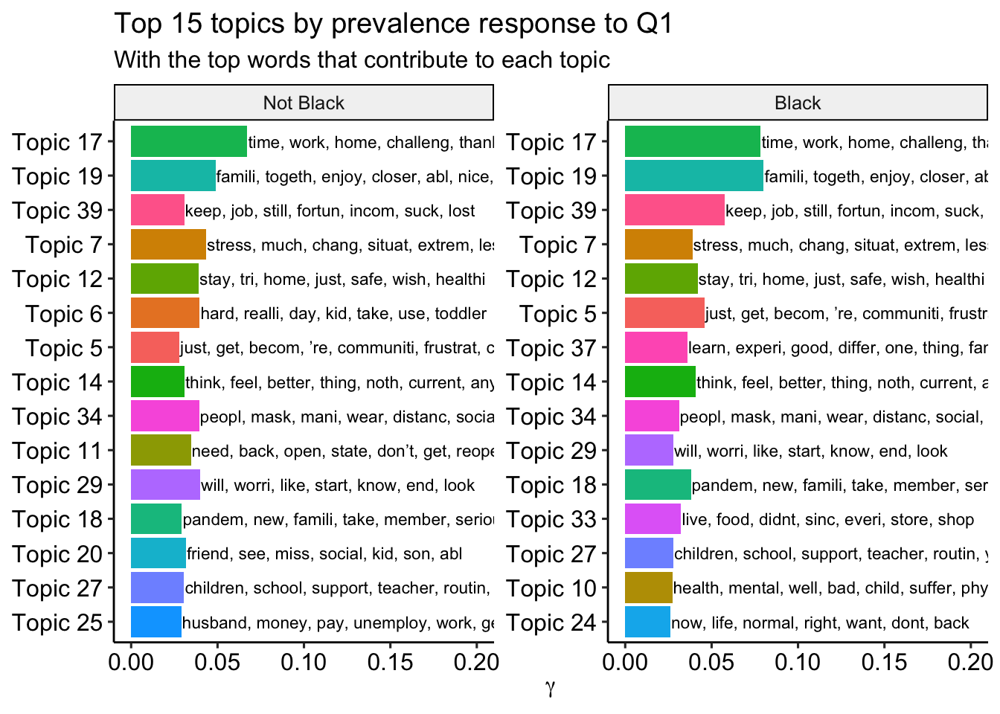
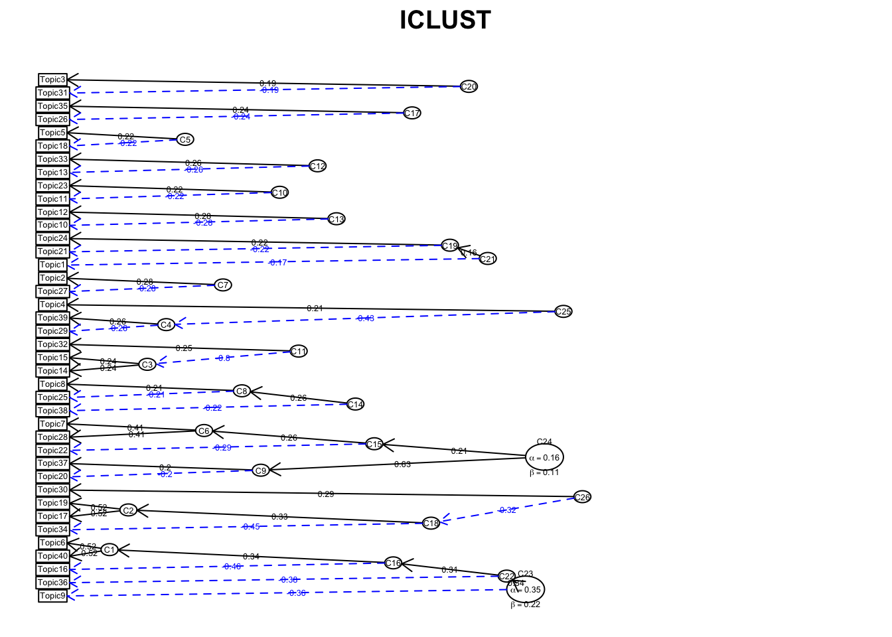
Poverty
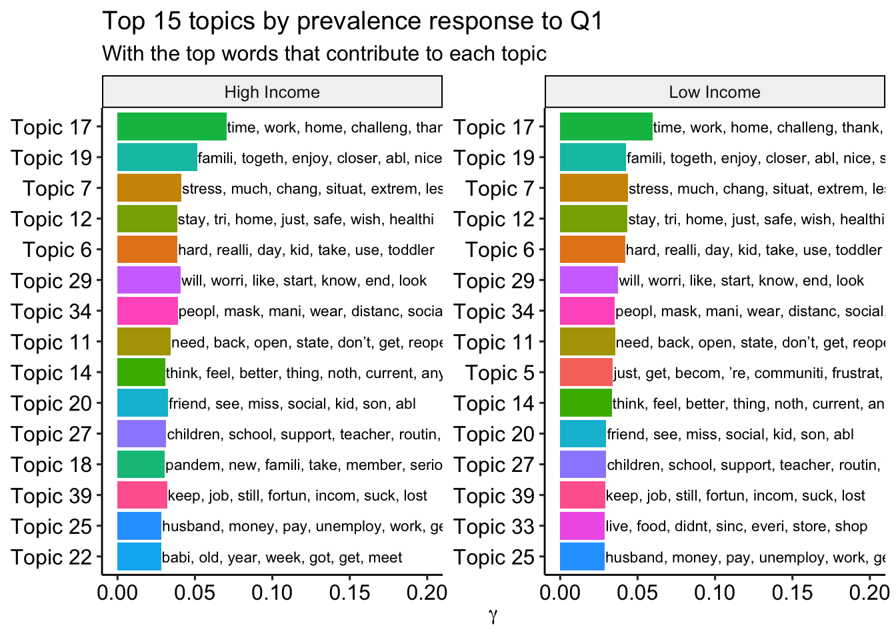
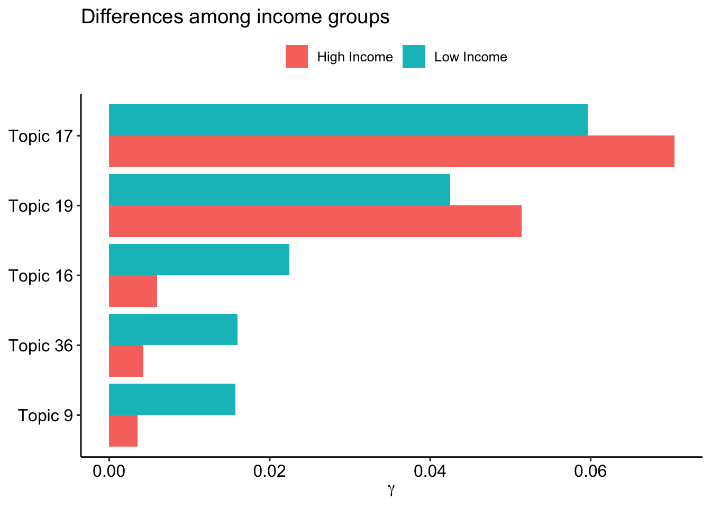
Topics by week
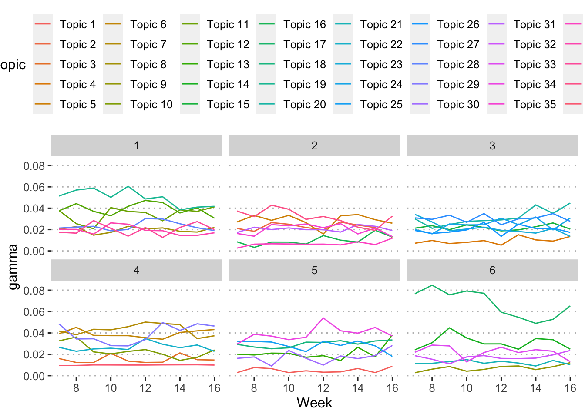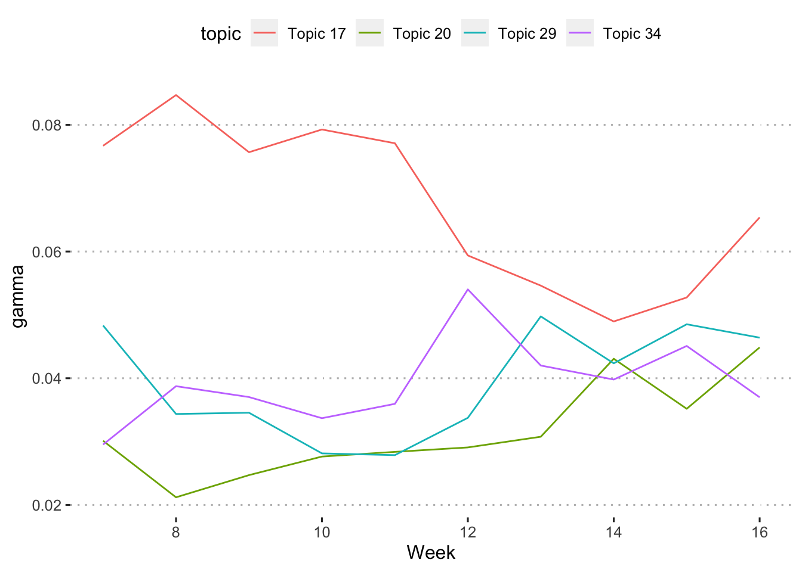
Topic clusters
Topic structure
## ICLUST (Item Cluster Analysis)
## Call: iclust(r.mat = topics_only_wide)
##
## Purified Alpha:
## C23 C26 C24 C14 C11 C25 C7 C21 C13 C10 C12 C5 C17
## 0.349 0.317 0.162 0.103 0.119 0.101 0.092 0.067 0.085 0.083 0.073 0.075 0.064
## C20
## 0.053
##
## G6* reliability:
## C23 C26 C24 C14 C11 C25 C7 C21 C13 C10 C12
## 0.135 0.238 0.304 -0.242 -0.228 0.378 0.046 -0.274 0.043 0.042 0.036
## C5 C17 C20
## 0.037 0.032 0.027
##
## Original Beta:
## C23 C26 C24 C14 C11 C25 C7 C21 C13 C10 C12 C5 C17
## 0.224 0.127 0.107 0.093 0.105 0.059 0.092 0.050 0.085 0.083 0.073 0.075 0.064
## C20
## 0.053
##
## Cluster size:
## C23 C26 C24 C14 C11 C25 C7 C21 C13 C10 C12 C5 C17 C20
## 5 4 5 3 3 3 2 3 2 2 2 2 2 2
##
## Item by Cluster Structure matrix:
## O P C23 C26 C24 C14 C11 C25 C7 C21 C13 C10
## Topic1 C21 C21 -0.02 0.01 0.00 0.01 0.01 -0.01 0.01 -0.58 -0.01 0.00
## Topic10 C13 C13 0.03 0.02 0.02 0.03 0.01 -0.02 0.01 0.01 -0.72 0.01
## Topic11 C10 C10 0.03 0.04 -0.03 0.01 0.00 0.00 0.01 0.02 0.00 -0.72
## Topic12 C13 C13 0.04 0.05 -0.01 0.03 0.01 0.00 -0.01 0.00 0.72 0.00
## Topic13 C12 C12 0.06 0.01 -0.01 0.03 0.01 0.00 0.01 0.00 0.00 0.01
## Topic14 C11 C11 0.07 0.03 0.04 0.01 -0.61 0.00 0.01 0.01 -0.01 0.00
## Topic15 C11 C11 0.04 0.03 0.00 0.02 -0.60 0.00 0.00 0.02 0.01 -0.01
## Topic16 C23 C23 -0.48 0.02 -0.02 0.01 0.03 0.00 0.01 -0.02 -0.01 0.00
## Topic17 C26 C26 0.16 -0.64 0.06 0.08 0.03 -0.06 -0.04 0.01 -0.01 0.07
## Topic18 C5 C5 0.05 0.02 -0.02 0.02 0.02 -0.02 0.03 0.02 0.01 0.01
## Topic19 C26 C26 0.00 -0.62 0.01 0.08 0.03 -0.03 -0.02 0.02 -0.01 0.01
## Topic2 C7 C7 -0.02 0.03 -0.01 0.02 0.03 0.01 0.72 -0.02 -0.03 0.01
## Topic20 C24 C24 0.02 0.03 -0.49 0.03 0.02 -0.01 -0.04 0.02 -0.01 0.00
## Topic21 C21 C21 -0.01 0.02 -0.02 0.01 0.02 0.01 0.02 -0.60 0.01 0.00
## Topic22 C24 C24 0.02 0.01 -0.47 0.02 0.02 0.00 0.00 0.00 0.00 0.01
## Topic23 C10 C10 0.04 -0.03 -0.01 0.02 0.00 -0.02 -0.01 0.01 -0.01 0.72
## Topic24 C21 C21 0.04 0.03 -0.01 0.03 -0.01 0.00 -0.01 0.59 -0.01 0.00
## Topic25 C14 C14 -0.02 0.02 -0.02 -0.60 0.01 -0.02 0.01 -0.01 -0.01 -0.01
## Topic26 C17 C17 0.04 0.02 0.02 0.01 0.00 0.00 0.00 0.00 -0.02 0.01
## Topic27 C7 C7 0.04 -0.02 -0.02 0.06 0.02 -0.02 -0.72 0.01 0.00 0.03
## Topic28 C24 C24 0.07 0.02 0.48 0.03 0.00 0.00 0.01 0.01 -0.03 0.02
## Topic29 C25 C25 0.05 0.04 -0.02 0.02 0.02 0.60 0.01 0.02 0.01 0.00
## Topic3 C20 C20 -0.02 0.02 -0.02 0.00 0.02 -0.01 0.01 0.00 -0.01 0.00
## Topic30 C26 C26 -0.02 0.49 -0.01 0.01 0.02 0.00 0.01 0.00 0.00 0.00
## Topic31 C20 C20 0.00 0.03 0.01 0.01 0.03 -0.01 0.03 0.00 -0.04 0.01
## Topic32 C11 C11 -0.01 0.03 0.00 0.02 0.60 0.00 0.02 -0.01 -0.01 -0.01
## Topic33 C12 C12 0.01 0.03 -0.01 0.01 0.01 -0.02 0.01 0.01 0.00 0.00
## Topic34 C26 C26 0.00 0.54 -0.01 0.04 0.00 0.00 0.03 0.02 0.04 -0.03
## Topic35 C17 C17 -0.02 0.00 -0.02 0.01 0.02 -0.01 0.01 0.00 0.00 0.01
## Topic36 C23 C23 -0.48 0.02 -0.02 0.01 0.02 0.00 0.01 -0.01 -0.01 0.00
## Topic37 C24 C24 0.03 -0.02 0.44 0.03 0.00 -0.01 -0.02 0.00 -0.01 0.01
## Topic38 C14 C14 -0.01 0.03 -0.01 -0.59 0.02 -0.02 0.01 0.00 0.00 0.00
## Topic39 C25 C25 0.04 -0.02 0.01 0.02 0.02 -0.61 -0.01 0.01 0.00 0.02
## Topic4 C25 C25 0.01 0.02 0.01 0.01 0.00 0.58 0.02 -0.01 0.01 0.00
## Topic40 C23 C23 0.66 -0.12 0.17 0.10 -0.11 0.03 -0.04 0.04 0.02 0.01
## Topic5 C5 C5 0.07 0.02 0.00 0.02 -0.01 0.00 0.00 0.02 0.01 -0.01
## Topic6 C23 C23 0.54 -0.04 0.02 0.02 0.00 -0.02 -0.05 0.03 -0.02 0.02
## Topic7 C24 C24 0.16 -0.05 0.51 0.04 -0.01 -0.02 -0.01 0.03 -0.03 0.02
## Topic8 C14 C14 0.03 -0.03 0.00 0.60 0.02 -0.02 -0.03 0.00 -0.01 0.01
## Topic9 C23 C23 -0.47 0.02 -0.02 0.01 0.02 -0.01 0.01 0.00 -0.01 0.00
## C12 C5 C17 C20
## Topic1 0.00 0.00 0.00 0.00
## Topic10 0.00 0.00 -0.01 -0.02
## Topic11 0.00 0.02 0.00 0.01
## Topic12 0.00 0.00 0.00 0.01
## Topic13 -0.72 0.00 -0.01 -0.01
## Topic14 0.00 0.01 -0.02 0.00
## Topic15 0.01 0.02 -0.02 0.00
## Topic16 0.00 0.00 0.00 0.00
## Topic17 -0.02 0.00 0.00 0.01
## Topic18 0.00 -0.72 -0.02 0.00
## Topic19 0.00 0.01 0.00 0.01
## Topic2 0.00 -0.03 0.00 -0.01
## Topic20 -0.02 0.01 0.00 0.01
## Topic21 0.00 0.00 0.00 0.00
## Topic22 0.00 -0.04 0.01 -0.01
## Topic23 0.00 -0.01 0.00 0.00
## Topic24 0.00 0.00 -0.01 0.00
## Topic25 0.02 0.00 0.00 0.02
## Topic26 0.00 -0.02 -0.72 0.01
## Topic27 0.00 0.00 -0.01 0.01
## Topic28 -0.01 0.01 -0.02 -0.02
## Topic29 -0.02 0.02 -0.01 0.00
## Topic3 0.01 -0.02 -0.01 0.72
## Topic30 0.00 0.00 0.00 0.00
## Topic31 -0.02 -0.01 0.00 -0.72
## Topic32 0.01 -0.01 0.00 -0.01
## Topic33 0.72 0.00 -0.01 0.02
## Topic34 0.00 0.00 -0.02 0.00
## Topic35 0.00 -0.01 0.72 -0.01
## Topic36 0.00 0.00 0.00 0.00
## Topic37 -0.01 0.00 0.00 0.00
## Topic38 0.00 0.00 0.00 0.01
## Topic39 -0.01 0.00 -0.01 0.01
## Topic4 -0.01 0.00 -0.01 0.00
## Topic40 -0.08 0.01 -0.09 -0.04
## Topic5 0.00 0.72 0.00 0.00
## Topic6 -0.02 0.02 -0.02 0.01
## Topic7 -0.01 0.00 -0.03 -0.03
## Topic8 0.00 0.01 0.00 0.01
## Topic9 0.00 0.00 0.00 0.00
##
## With eigenvalues of:
## C23 C26 C24 C14 C11 C25 C7 C21 C13 C10 C12 C5 C17 C20
## 1.5 1.3 1.2 1.1 1.1 1.1 1.1 1.1 1.1 1.0 1.0 1.0 1.0 1.0
##
## Purified scale intercorrelations
## reliabilities on diagonal
## correlations corrected for attenuation above diagonal:
## C23 C26 C24 C14 C11 C25 C7 C21 C13 C10 C12 C5
## C23 0.35 -0.25 0.39 0.17 -0.34 0.05 -0.22 0.25 0.05 0.04 -0.21 0.07
## C26 -0.08 0.32 -0.16 -0.26 -0.08 0.23 0.24 0.01 0.14 -0.29 0.08 -0.01
## C24 0.09 -0.04 0.16 0.15 -0.17 -0.12 0.06 0.08 -0.21 0.15 -0.02 0.14
## C14 0.03 -0.05 0.02 0.10 -0.04 0.09 -0.26 0.04 0.01 0.14 -0.16 0.05
## C11 -0.07 -0.02 -0.02 0.00 0.12 0.00 0.05 -0.24 -0.05 -0.02 -0.03 -0.20
## C25 0.01 0.04 -0.01 0.01 0.00 0.10 0.21 -0.03 0.08 -0.12 -0.15 0.11
## C7 -0.04 0.04 0.01 -0.03 0.00 0.02 0.09 -0.31 -0.18 -0.15 -0.01 -0.25
## C21 0.04 0.00 0.01 0.00 -0.02 0.00 -0.02 0.07 -0.05 -0.04 0.08 0.03
## C13 0.01 0.02 -0.03 0.00 0.00 0.01 -0.02 0.00 0.09 -0.09 0.01 -0.04
## C10 0.01 -0.05 0.02 0.01 0.00 -0.01 -0.01 0.00 -0.01 0.08 -0.05 -0.18
## C12 -0.03 0.01 0.00 -0.01 0.00 -0.01 0.00 0.01 0.00 0.00 0.07 0.01
## C5 0.01 0.00 0.01 0.00 -0.02 0.01 -0.02 0.00 0.00 -0.01 0.00 0.07
## C17 -0.04 -0.01 -0.03 0.00 0.02 -0.01 0.01 0.00 0.01 0.00 0.00 0.01
## C20 -0.01 -0.01 -0.02 -0.01 -0.01 0.00 -0.01 0.00 0.02 -0.01 0.02 0.00
## C17 C20
## C23 -0.29 -0.09
## C26 -0.08 -0.05
## C24 -0.26 -0.22
## C14 -0.02 -0.15
## C11 0.21 -0.07
## C25 -0.12 0.01
## C7 0.10 -0.18
## C21 -0.05 -0.01
## C13 0.15 0.27
## C10 0.03 -0.11
## C12 0.07 0.30
## C5 0.12 -0.02
## C17 0.06 -0.13
## C20 -0.01 0.05
##
## Cluster fit = 0.41 Pattern fit = 0.79 RMSR = 0.08Topic structure (Black respondants only)
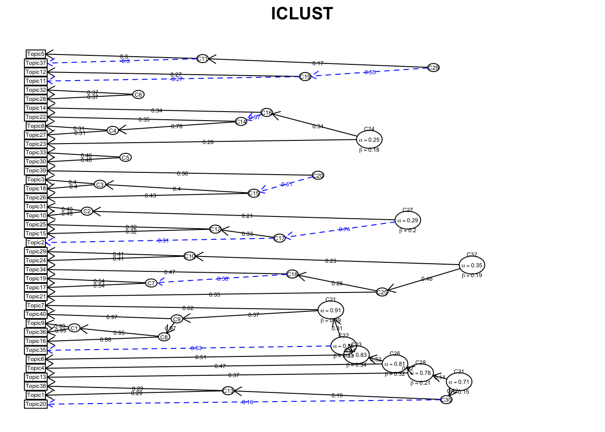
## ICLUST (Item Cluster Analysis)
## Call: iclust(r.mat = topics_only_wide)
##
## Purified Alpha:
## C18 C15 C1 C13 C4 C23 C20 C2 C24 C12 C17 V23 V34 V29 V16 V5
## 0.91 0.36 0.31 0.22 0.24 0.17 0.19 0.19 0.13 0.14 0.10 1.00 1.00 1.00 1.00 1.00
##
## G6* reliability:
## C18 C15 C1 C13 C4 C23 C20 C2 C24 C12 C17
## 1.000 -0.017 1.000 0.167 1.000 0.311 0.140 1.000 0.097 0.068 0.052
## V23 V34 V29 V16 V5
## 1.000 1.000 1.000 1.000 1.000
##
## Original Beta:
## C18 C15 C1 C13 C4 C23 C20 C2 C24 C12 C17 V23 V34
## 0.460 0.268 0.310 0.194 0.241 0.113 0.161 0.191 0.091 0.136 0.104 NA NA
## V29 V16 V5
## NA NA NA
##
## Cluster size:
## C18 C15 C1 C13 C4 C23 C20 C2 C24 C12 C17 V23 V34 V29 V16 V5
## 5 3 2 4 2 5 4 2 4 2 2 1 1 1 1 1
##
## Item by Cluster Structure matrix:
## O P C18 C15 C1 C13 C4 C23 C20 C2 C24 C12
## Topic1 C24 C24 0.03 -0.01 -0.02 0.01 0.04 0.00 0.01 0.00 -0.51 0.00
## Topic10 C4 C4 -0.04 0.06 -0.04 -0.01 0.75 -0.04 0.03 -0.06 0.03 0.01
## Topic11 C20 C20 0.09 0.05 -0.06 0.03 -0.03 0.04 -0.53 -0.04 0.00 0.02
## Topic12 C12 C12 -0.02 0.12 -0.05 0.01 -0.07 -0.01 -0.01 -0.03 0.03 -0.73
## Topic13 V5 V5 0.13 0.02 0.00 -0.01 -0.02 -0.02 0.01 0.01 0.02 -0.02
## Topic14 C13 C13 0.08 0.04 -0.03 0.56 -0.05 0.00 -0.04 0.00 -0.01 0.07
## Topic15 C13 C13 -0.06 0.05 -0.04 0.52 -0.02 0.00 -0.04 -0.06 0.00 -0.01
## Topic16 C18 C18 0.91 -0.02 -0.08 0.03 0.05 0.19 -0.07 0.04 0.05 0.01
## Topic17 C15 C15 0.22 -0.68 -0.05 0.01 -0.09 0.00 0.01 -0.02 -0.01 0.03
## Topic18 C2 C2 0.02 0.00 -0.05 0.02 -0.01 0.00 -0.01 0.74 0.00 -0.03
## Topic19 C15 C15 -0.18 -0.68 -0.09 -0.03 -0.11 -0.07 0.07 -0.02 -0.04 0.03
## Topic2 C23 C23 -0.02 0.07 -0.03 0.00 0.01 -0.46 -0.02 0.00 0.03 0.01
## Topic20 C13 C13 -0.09 0.07 -0.07 -0.55 -0.02 -0.01 -0.02 -0.02 -0.01 0.01
## Topic21 C17 C17 -0.09 0.08 -0.02 0.00 -0.04 -0.03 0.01 -0.04 -0.01 -0.02
## Topic22 C2 C2 0.04 0.00 0.00 -0.02 -0.01 -0.01 -0.01 0.74 0.00 -0.03
## Topic23 V16 V16 0.11 0.01 -0.05 0.04 -0.01 0.01 0.00 -0.03 -0.03 0.01
## Topic24 C17 C17 -0.06 0.08 0.00 -0.01 -0.05 0.02 0.00 -0.07 -0.03 0.02
## Topic25 C23 C23 0.04 0.06 -0.01 0.07 -0.02 0.48 -0.04 0.03 0.01 0.03
## Topic26 C23 C23 0.05 0.05 -0.03 0.01 -0.01 0.47 -0.04 0.02 0.01 -0.01
## Topic27 C13 C13 -0.01 -0.02 -0.04 -0.55 -0.02 -0.04 0.01 -0.04 0.05 0.00
## Topic28 C24 C24 0.00 0.07 -0.04 0.00 0.00 0.01 0.00 -0.04 0.53 0.01
## Topic29 C20 C20 0.08 0.06 -0.04 0.01 -0.05 0.03 -0.55 -0.07 0.02 -0.03
## Topic3 V23 V23 -0.12 0.07 -0.04 0.00 -0.05 0.00 -0.03 -0.03 -0.03 -0.01
## Topic30 C1 C1 -0.04 0.07 0.77 0.00 -0.04 -0.01 0.03 -0.06 0.00 0.02
## Topic31 C4 C4 0.10 0.09 -0.04 -0.01 0.75 0.02 -0.03 0.03 -0.02 -0.01
## Topic32 C24 C24 0.18 0.04 -0.06 -0.04 0.03 -0.02 -0.03 0.00 0.53 -0.02
## Topic33 C1 C1 -0.09 0.04 0.77 0.04 -0.04 -0.01 0.03 0.00 -0.02 0.04
## Topic34 C15 C15 -0.02 0.62 0.00 0.03 0.01 -0.06 0.01 -0.05 0.02 -0.03
## Topic35 V29 V29 -0.14 0.03 -0.05 0.00 -0.04 -0.02 -0.03 -0.05 -0.01 -0.01
## Topic36 C18 C18 0.96 -0.05 -0.07 0.04 0.04 0.18 -0.06 0.03 0.04 0.04
## Topic37 C23 C23 -0.10 0.05 -0.04 0.00 -0.05 -0.47 0.01 -0.01 -0.04 -0.01
## Topic38 C24 C24 0.02 0.04 -0.04 0.01 -0.02 -0.01 0.00 -0.03 -0.53 -0.03
## Topic39 C20 C20 -0.09 0.05 -0.05 0.01 -0.02 -0.04 0.55 -0.07 -0.03 0.00
## Topic4 V34 V34 -0.09 0.01 -0.02 0.01 -0.04 -0.03 -0.01 -0.03 -0.02 0.00
## Topic40 C18 C18 0.91 0.00 -0.03 0.10 0.03 0.14 -0.05 0.07 0.05 0.04
## Topic5 C12 C12 0.02 0.05 0.01 0.04 -0.07 0.01 0.00 -0.09 0.05 0.73
## Topic6 C23 C23 0.21 0.02 -0.06 -0.02 -0.03 0.53 -0.04 -0.05 -0.03 0.01
## Topic7 C18 C18 0.55 0.01 -0.09 0.02 0.03 0.06 -0.06 -0.01 0.09 -0.02
## Topic8 C20 C20 0.12 -0.03 0.02 -0.05 -0.05 0.01 0.54 -0.06 0.02 0.01
## Topic9 C18 C18 0.96 -0.06 -0.08 0.04 0.04 0.17 -0.05 0.03 0.06 0.04
## C17 V23 V34 V29 V16 V5
## Topic1 0.00 -0.02 -0.01 -0.02 0.00 0.00
## Topic10 -0.01 -0.04 -0.04 -0.04 0.01 -0.02
## Topic11 0.00 -0.02 -0.03 0.00 -0.04 -0.03
## Topic12 -0.01 -0.05 -0.04 -0.02 -0.04 0.00
## Topic13 0.00 -0.03 -0.03 -0.04 -0.01 1.00
## Topic14 0.01 -0.05 -0.01 -0.04 0.06 -0.03
## Topic15 0.00 -0.05 -0.03 -0.03 0.02 -0.01
## Topic16 -0.03 -0.08 -0.03 -0.12 0.09 0.06
## Topic17 0.01 -0.10 -0.04 -0.06 0.03 -0.01
## Topic18 -0.01 -0.01 -0.01 -0.05 -0.04 0.00
## Topic19 0.00 -0.07 -0.03 -0.04 -0.07 -0.06
## Topic2 -0.02 0.00 0.03 -0.02 -0.02 -0.01
## Topic20 0.02 -0.05 -0.04 -0.03 0.02 -0.04
## Topic21 -0.73 -0.04 -0.03 0.00 -0.03 -0.04
## Topic22 -0.03 -0.04 -0.03 -0.03 -0.01 0.01
## Topic23 0.00 -0.02 -0.03 -0.02 1.00 -0.01
## Topic24 0.73 -0.04 -0.03 -0.01 -0.04 -0.04
## Topic25 0.02 -0.02 -0.02 -0.03 -0.02 -0.04
## Topic26 0.01 -0.03 -0.03 -0.04 -0.03 0.01
## Topic27 0.01 -0.05 -0.03 -0.04 -0.02 0.01
## Topic28 0.01 -0.02 -0.03 -0.03 -0.03 -0.01
## Topic29 0.01 -0.03 -0.03 -0.02 -0.01 -0.02
## Topic3 0.00 1.00 -0.02 -0.03 -0.02 -0.03
## Topic30 0.02 -0.02 0.00 -0.03 -0.03 0.04
## Topic31 -0.01 -0.04 -0.03 -0.03 -0.02 -0.02
## Topic32 -0.01 -0.04 -0.03 -0.04 -0.02 0.01
## Topic33 0.00 -0.05 -0.04 -0.05 -0.04 -0.04
## Topic34 0.02 -0.02 -0.04 -0.04 -0.02 -0.03
## Topic35 -0.01 -0.03 -0.02 1.00 -0.02 -0.04
## Topic36 0.01 -0.09 -0.07 -0.14 0.10 0.16
## Topic37 -0.02 -0.06 -0.04 -0.04 -0.03 0.02
## Topic38 0.03 0.03 -0.02 -0.03 0.01 -0.04
## Topic39 -0.01 -0.06 -0.04 -0.04 -0.02 -0.01
## Topic4 0.00 -0.02 1.00 -0.02 -0.03 -0.03
## Topic40 0.06 -0.15 -0.14 -0.15 0.15 0.16
## Topic5 0.03 -0.06 -0.04 -0.04 -0.02 -0.03
## Topic6 0.01 -0.02 -0.04 -0.04 0.04 -0.01
## Topic7 0.06 -0.08 -0.06 -0.05 0.01 0.06
## Topic8 0.01 -0.05 -0.04 -0.04 -0.04 -0.01
## Topic9 0.01 -0.09 -0.07 -0.14 0.12 0.14
##
## With eigenvalues of:
## C18 C15 C1 C13 C4 C23 C20 C2 C24 C12 C17 V23 V34 V29 V16 V5
## 4.0 1.4 1.2 1.2 1.2 1.2 1.2 1.2 1.1 1.1 1.1 1.1 1.0 1.0 1.0 1.0
##
## Purified scale intercorrelations
## reliabilities on diagonal
## correlations corrected for attenuation above diagonal:
## C18 C15 C1 C13 C4 C23 C20 C2 C24 C12 C17 V23
## C18 0.91 -0.05 -0.16 0.12 0.09 0.43 -0.16 0.09 0.20 0.08 0.08 -0.12
## C15 -0.03 0.36 0.21 0.08 0.34 0.03 -0.15 -0.01 0.17 -0.22 0.00 0.12
## C1 -0.08 0.07 0.31 0.09 -0.19 -0.06 0.15 -0.14 -0.08 0.19 0.08 -0.07
## C13 0.05 0.02 0.02 0.22 -0.06 0.13 -0.17 0.00 -0.13 0.13 -0.06 -0.01
## C4 0.04 0.10 -0.05 -0.01 0.24 -0.06 0.00 -0.08 0.02 -0.01 -0.05 -0.11
## C23 0.17 0.01 -0.01 0.03 -0.01 0.17 -0.27 -0.01 0.00 0.06 0.24 -0.01
## C20 -0.07 -0.04 0.04 -0.04 0.00 -0.05 0.19 -0.04 -0.09 0.03 -0.04 -0.07
## C2 0.04 0.00 -0.03 0.00 -0.02 0.00 -0.01 0.19 -0.01 -0.25 -0.16 -0.07
## C24 0.07 0.04 -0.02 -0.02 0.00 0.00 -0.01 0.00 0.13 0.08 -0.13 -0.09
## C12 0.03 -0.05 0.04 0.02 0.00 0.01 0.00 -0.04 0.01 0.14 0.23 -0.01
## C17 0.03 0.00 0.01 -0.01 -0.01 0.03 -0.01 -0.02 -0.01 0.03 0.10 -0.01
## V23 -0.12 0.07 -0.04 0.00 -0.05 0.00 -0.03 -0.03 -0.03 -0.01 0.00 1.00
## V34 -0.09 0.01 -0.02 0.01 -0.04 -0.03 -0.01 -0.03 -0.02 0.00 0.00 -0.02
## V29 -0.14 0.03 -0.05 0.00 -0.04 -0.02 -0.03 -0.05 -0.01 -0.01 -0.01 -0.03
## V16 0.11 0.01 -0.05 0.04 -0.01 0.01 0.00 -0.03 -0.03 0.01 0.00 -0.02
## V5 0.13 0.02 0.00 -0.01 -0.02 -0.02 0.01 0.01 0.02 -0.02 0.00 -0.03
## V34 V29 V16 V5
## C18 -0.09 -0.15 0.11 0.14
## C15 0.02 0.05 0.02 0.04
## C1 -0.04 -0.09 -0.08 -0.01
## C13 0.03 0.01 0.08 -0.02
## C4 -0.09 -0.09 -0.02 -0.05
## C23 -0.08 -0.06 0.04 -0.05
## C20 -0.02 -0.06 -0.01 0.03
## C2 -0.06 -0.12 -0.08 0.01
## C24 -0.05 -0.04 -0.07 0.05
## C12 0.01 -0.03 0.03 -0.06
## C17 0.00 -0.02 -0.01 -0.01
## V23 -0.02 -0.03 -0.02 -0.03
## V34 1.00 -0.02 -0.03 -0.03
## V29 -0.02 1.00 -0.02 -0.04
## V16 -0.03 -0.02 1.00 -0.01
## V5 -0.03 -0.04 -0.01 1.00
##
## Cluster fit = 0.61 Pattern fit = 0.88 RMSR = 0.06
35 - Socially distant visits